CHAPTER 3 GENERAL ¶
The Cluster Library is made of individual chapters such as this one. See Document Control in the Cluster Library for a list of all chapters and documents. References between chapters are made using a X.Y notation where X is the chapter and Y is the sub-section within that chapter. References to external documents are contained in Chapter 1 and are made using [Rn] notation.
3.1 General Description ¶
3.1.1 Introduction ¶
The clusters specified in this document are generic interfaces that are sufficiently general to be of use across a wide range of application domains.
3.1.2 Cluster List ¶
This section lists the clusters specified in this document and gives examples of typical usage.
Table 3-1. Device Configuration and Installation Clusters ¶
| ID | Cluster Name | Description |
|---|---|---|
| 0x0000 | Basic | Attributes for determining basic information about a device, setting user device information such as description of location, and ena- bling a device. |
| 0x0001 | Power Configuration | Attributes for determining more detailed information about a de- vice’s power source(s), and for configuring under/over voltage alarms. |
| 0x0002 | Device Temperature Configuration | Attributes for determining information about a device’s internal temperature, and for configuring under/over temperature alarms. |
| 0x0003 | Identify | Attributes and commands for putting a device into Identification mode (e.g., flashing a light) |
Figure 3-1. Typical Usage of Device Configuration and Installation Clusters ¶
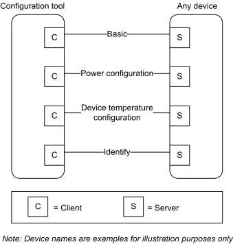
Table 3-2. Groups and Scenes Clusters ¶
| ID | Name | Description |
|---|---|---|
| 0x0004 | Groups | Attributes and commands for allocating a device to one or more of a number of groups of devices, where each group is addressable by a group address. |
| 0x0005 | Scenes | Attributes and commands for setting up and recalling a number of scenes for a de- vice. Each scene corresponds to a set of stored values of specified device attributes. |
Table 3-3. On/Off and Level Control Clusters ¶
| ID | Name | Description |
|---|---|---|
| 0x0006 | On/Off | Attributes and commands for switching devices between ‘On’ and ‘Off’ states. |
| 0x0007 | On/Off Switch Configuration | Attributes and commands for configuring on/off switching de- vices |
| 0x0008 | Level Level Control for Lighting | Attributes and commands for controlling a characteristic of devices that can be set to a level between fully ‘On’ and fully ‘Off’. |
| 0x001C | Pulse Width Modulation | Level also with frequency control |
Figure 3-2. Typical Usage of On/Off and Level Clusters ¶
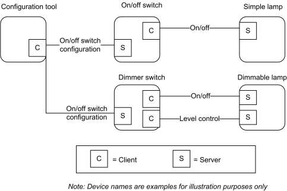
Table 3-4. Alarms Cluster ¶
| ID | Name | Description |
|---|---|---|
| 0x0009 | Alarms | Attributes and commands for sending alarm notifications and configuring alarm functionality. |
Figure 3-3. Typical Usage of the Alarms Cluster ¶
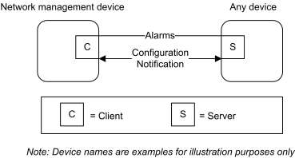
Table 3-5. Other Clusters ¶
| ID | Name | Description |
|---|---|---|
| 0x000a | Time | Attributes and commands that provide an interface to a real-time clock. |
| 0x000b | RSSI Location | Attributes and commands for exchanging location information and channel parameters among devices, and (optionally) reporting data to a centralized device that collects data from devices in the network and calculates their positions from the set of collected data. |
| 0x0b05 | Diagnostics | Attributes and commands that provide an interface to diagnostics of the stack |
| 0x0020 | Poll Control | Attributes and commands that provide an interface to control the poll- ing of sleeping end device |
| 0x001a | Power Profile | Attributes and commands that provide an interface to the power profile of a device |
| 0x0025 | Keep Alive | Provides services for devices to know that central device is active and for a central device to know that devices are active on the network |
Figure 3-4. Typical Usage of the Location Cluster with Centralized Device ¶
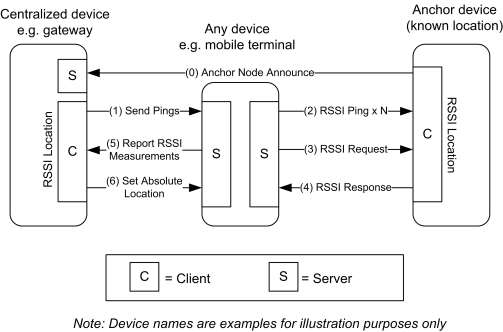
Table 3-6. Generic Clusters ¶
| ID | Cluster Name | Description |
|---|---|---|
| 0x000c | Analog Input (basic) | An interface for reading the value of an analog measurement and accessing various characteristics of that measurement. |
| ID | Cluster Name | Description |
|---|---|---|
| 0x000d | Analog Output (basic) | An interface for setting the value of an analog output (typically to the envi- ronment) and accessing various characteristics of that value. |
| 0x000e | Analog Value (basic) | An interface for setting an analog value, typically used as a control system parameter, and accessing various characteristics of that value. |
| 0x000f | Binary Input (basic) | An interface for reading the value of a binary measurement and accessing various characteristics of that measurement. |
| 0x0010 | Binary Output (basic) | An interface for setting the value of a binary output (typically to the envi- ronment) and accessing various characteristics of that value. |
| 0x0011 | Binary Value (basic) | An interface for setting a binary value, typically used as a control system parameter, and accessing various characteristics of that value. |
| 0x0012 | Multistate Input (basic) | An interface for reading the value of a multistate measurement and access- ing various characteristics of that measurement. |
| 0x0013 | Multistate Out- put (basic) | An interface for setting the value of a multistate output (typically to the en- vironment) and accessing various characteristics of that value. |
| 0x0014 | Multistate Value (basic) | An interface for setting a multistate value, typically used as a control sys- tem parameter, and accessing various characteristics of that value. |
Figure 3-5. Example Usage of the Input, Output and Value Clusters ¶
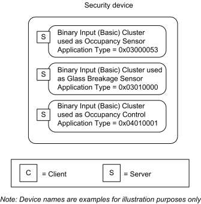
3.2 Basic ¶
3.2.1 Overview ¶
Please see Chapter 2 for a general cluster overview defining cluster architecture, revision, classification, identification, etc.
This cluster supports an interface to the node or physical device. It provides attributes and commands for determining basic information, setting user information such as location, and resetting to factory defaults.
Note: Where a node supports multiple endpoints, it will often be the case that many of these settings will apply to the whole node, that is, they are the same for every endpoint on the node. In such cases, they can be implemented once for the node, and mapped to each endpoint.
3.2.1.1 Revision History ¶
The global ClusterRevision attribute value SHALL be the highest revision number in the table below.
| Rev | Description |
|---|---|
| 1 | mandatory global ClusterRevision attribute added; ZCLVersion set to 0x02 |
| 2 | new attributes for manufacturer identification; CCB 1499 1584 2197 2229; ZCLVersion set to 0x03; ZLO 1.0 |
| 3 | CCB 2722 2885 |
3.2.1.2 Classification ¶
| Hierarchy | Role | PICS Code |
|---|---|---|
| Base | Utility | B |
3.2.1.3 Cluster Identifiers ¶
| Identifier | Name |
|---|---|
| 0x0000 | Basic |
3.2.2 Server ¶
3.2.2.1 Dependencies ¶
For the alarms functionality of this cluster to be operational, the Alarms cluster server SHALL be implemented on the same endpoint.
3.2.2.2 Attributes ¶
The Basic cluster attributes are summarized in Table 3-7.
Table 3-7. Attributes of the Basic Cluster ¶
| Id | Name | Type | Range | Acc | Default | M/O |
|---|---|---|---|---|---|---|
| 0x0000 | ZCLVersion | uint8 | 0x00 to 0xff | R | 8 | M |
| 0x0001 | ApplicationVersion | uint8 | 0x00 to 0xff | R | 0 | O |
| 0x0002 | StackVersion | uint8 | 0x00 to 0xff | R | 0 | O |
| 0x0003 | HWVersion | uint8 | 0x00 to 0xff | R | 0 | O |
| 0x0004 | ManufacturerName | string | 0 to 32 bytes | R | empty string | O |
| 0x0005 | ModelIdentifier | string | 0 to 32 bytes | R | empty string | O |
| 0x0006 | DateCode | string | 0 to 16 bytes | R | empty string | O |
| 0x0007 | PowerSource | enum8 | 0x00 to 0xff | R | 0x00 | M |
| 0x0008 | GenericDevice-Class | enum8 | 0x00 to 0xff | R | 0xff | O |
| 0x0009 | GenericDevice-Type | enum8 | 0x00 to 0xff | R | 0xff | O |
| 0x000a | ProductCode | octstr | R | empty string | O | |
| 0x000b | ProductURL | string | R | empty string | O | |
| 0x000c | ManufacturerVersionDetails | string | R | empty string | O | |
| 0x000d | SerialNumber | string | R | empty string | O | |
| 0x000e | ProductLabel | string | R | empty string | O | |
| 0x0010 | LocationDescription | string | 0 to 16 bytes | RW | empty string | O |
| 0x0011 | PhysicalEnvironment | enum8 | desc | RW | 0 | O |
| 0x0012 | DeviceEnabled | bool | 0 or 1 | RW | 1 | O |
| 0x0013 | AlarmMask | map8 | 000000xx | RW | 0 | O |
| 0x0014 | DisableLocalConfig | map8 | 000000xx | RW | 0 | O |
| 0x4000 | SWBuildID | string | 0 to 16 bytes | R | empty string | O |
3.2.2.2.1 ZCLVersion Attribute ¶
The ZCLVersion attribute represents a published set of foundation items (in Chapter 2), such as global commands and functional descriptions. For this version of the ZCL (this document), this attribute SHALL be set to 8. In the future, this value SHALL align with the release revision of the ZCL.16
3.2.2.2.2 ApplicationVersion Attribute ¶
The ApplicationVersion attribute is 8 bits in length and specifies the version number of the application software contained in the device. The usage of this attribute is manufacturer dependent.
16 CCB 2722
3.2.2.2.3 StackVersion Attribute ¶
The StackVersion attribute is 8 bits in length and specifies the version number of the implementation of the stack contained in the device. The usage of this attribute is manufacturer dependent.
3.2.2.2.4 HWVersion Attribute ¶
The HWVersion attribute is 8 bits in length and specifies the version number of the hardware of the device. The usage of this attribute is manufacturer dependent.
3.2.2.2.5 ManufacturerName Attribute ¶
The ManufacturerName attribute is a maximum of 32 bytes in length and specifies the name of the manufacturer as a character string.
3.2.2.2.6 ModelIdentifier Attribute ¶
The ModelIdentifier attribute is a maximum of 32 bytes in length and specifies the model number (or other identifier) assigned by the manufacturer as a character string.
3.2.2.2.7 DateCode Attribute ¶
The DateCode attribute is a character string with a maximum length of 16 bytes. The first 8 characters specify the date of manufacturer of the device in international date notation according to ISO 8601, i.e., YYYYMMDD, e.g., 20060814.
The final 8 characters MAY include country, factory, line, shift or other related information at the option of the manufacturer. The format of this information is manufacturer dependent.
3.2.2.2.8 PowerSource Attribute ¶
The PowerSource attribute is 8 bits in length and specifies the source(s) of power available to the device. Bits b0–b6 of this attribute represent the primary power source of the device and bit b7 indicates whether the device has a secondary power source in the form of a battery backup.
This attribute SHALL be set to one of the non-reserved values listed in Table 3-8. Bit 7 of this attribute SHALL be set to 1 if the device has a secondary power source in the form of a battery backup. Otherwise, bit 7 SHALL be set to 0.
Table 3-8. Values of the PowerSource Attribute ¶
| Value | Description |
|---|---|
| 0x00 | Unknown |
| 0x01 | Mains (single phase) |
| 0x02 | Mains (3 phase) |
| 0x03 | Battery |
| 0x04 | DC source |
| 0x05 | Emergency mains constantly powered |
| 0x06 | Emergency mains and transfer switch |
| Value | Description |
|---|---|
| Bit 7 set denotes battery backup source | |
| 0x80 | Unknown |
| 0x81 | Mains (single phase) |
| 0x82 | Mains (3 phase) |
| 0x83 | Battery |
| 0x84 | DC source |
| 0x85 | Emergency mains constantly powered |
| 0x86 | Emergency mains and transfer switch |
3.2.2.2.9 GenericDeviceClass Attribute ¶
The GenericDeviceClass attribute defines the field of application of the GenericDeviceType attribute. It SHALL be set to one of the non-reserved values listed below:
Table 3-9. Values of the GenericDeviceClass attribute ¶
| GenericDeviceClass value | Description |
|---|---|
| 0x00 | Lighting |
3.2.2.2.10 GenericDeviceType Attribute ¶
The GenericDeviceType attribute allows an application to show an icon on a rich user interface (e.g. smartphone app). Notes on the usage of the GenericDeviceType attribute:
- lamps with integrated radio module SHALL have a proper value indicating the lamp type, according to the table below; •
devices that cannot be assigned to a proper category SHALL be set as “unspecified”;
When the GenericDeviceClass attribute is set to 0x00 (i.e. lighting) the GenericDeviceType attribute SHALL be set to one of the non-reserved values listed below:
Table 3-10. Values of the GenericDeviceType attribute for the lighting class ¶
| Value | Description |
|---|---|
| 0x00 | Incandescent |
| 0x01 | Spotlight Halogen |
| 0x02 | Halogen bulb |
| 0x03 | CFL |
| 0x04 | Linear Fluorescent |
| 0x05 | LED bulb |
| Value | Description |
|---|---|
| 0x06 | Spotlight LED |
| 0x07 | LED strip |
| 0x08 | LED tube |
| 0x09 | Generic indoor luminaire/light fixture |
| 0x0a | Generic outdoor luminaire/light fixture |
| 0x0b | Pendant luminaire/light fixture |
| 0x0c | Floor standing luminaire/light fixture |
| 0xe0 | Generic Controller (e.g. Remote controller) |
| 0xe1 | Wall Switch |
| 0xe2 | Portable remote controller |
| 0xe3 | Motion sensor / light sensor |
| 0xe4 to 0xef | Reserved |
| 0xf0 | Generic actuator |
| 0xf1 | Wall socket |
| 0xf2 | Gateway/Bridge |
| 0xf3 | Plug-in unit |
| 0xf4 | Retrofit actuator |
| 0xff | Unspecified |
3.2.2.2.11 ProductCode Attribute ¶
The ProductCode attribute allows an application to specify a code for the product. The ProductCode attribute SHALL have the format defined in Figure .
| Octets:1 | 1 | Variable |
|---|---|---|
| Octet Count | CodeId (see Table ) | The code represented as a sequence of ASCII characters |
| Octet data |
Figure 3-6. Format of the ProductCode attribute ¶
Table 3-11. Values of the CodeId field of the ProductCode attribute ¶
| Code ID | Code type |
|---|---|
| 0x00 | Manufacturer defined |
| 0x01 | International article number (EAN) |
| 0x02 | Global trade item number (GTIN) |
| 0x03 | Universal product code (UPC) |
| 0x04 | Stock keeping unit (SKU) |
In case no code has been provided, the Octet Count field SHALL be set to 0 (i.e. the octet string is empty).
3.2.2.2.12 ProductURL Attribute ¶
The ProductURL attribute specifies a link to a web page containing specific product information.
Notes on the usage of the ProductURL attribute:
- The length of the URL SHALL be limited by the maximum number of bytes that can be transmitted from the application in a single frame. In most cases, such limit is around 50 bytes. •
In case no URL has been provided, the string SHALL be empty (i.e. the first byte is set to zero).
3.2.2.2.13 Manufacturer VersionDetails Attribute ¶
Vendor specific human readable (displayable) string representing the versions of one of more program images supported on the device.
3.2.2.2.14 SerialNumber Attribute ¶
Vendor specific human readable (displayable) serial number.
3.2.2.2.15 ProductLabel Attribute ¶
Vendor specific human readable (displayable) product label.
3.2.2.2.16 LocationDescription Attribute ¶
The LocationDescription attribute is a maximum of 16 bytes in length and describes the physical location of the device as a character string. This location description MAY be added into the device during commissioning.
3.2.2.2.17 PhysicalEnvironment Attribute ¶
The PhysicalEnvironment attribute is 8 bits in length and specifies the type of physical environment in which the device will operate. This attribute SHALL be set to one of the non-reserved values listed in Table 3-12. All values are valid for endpoints supporting all profiles except when noted.
Table 3-12. Values of the PhysicalEnvironment Attribute ¶
| Value | Description |
|---|---|
| 0x00 | Unspecified environment |
| 0x01 | Mirror Capacity Available – for 0x0109 Profile Id only; use 0x71 moving forward Atrium – defined for legacy devices with non-0x0109 Profile Id; use 0x70 moving forward Note: This value is deprecated for Profile Id 0x0104. The value 0x01 is maintained for historical purposes and SHOULD only be used for backwards compatibility with devices developed before this specification. The 0x01 value MUST be interpreted using the Pro- file Id of the endpoint upon which it is implemented. For endpoints with the Smart Energy Profile Id (0x0109) the value 0x01 has a meaning of Mirror. For endpoints with any other profile identifier, the value 0x01 has a meaning of Atrium. |
| 0x02 | Bar |
| 0x03 | Courtyard |
| 0x04 | Bathroom |
| 0x05 | Bedroom |
| 0x06 | Billiard Room |
| 0x07 | Utility Room |
| 0x08 | Cellar |
| 0x09 | Storage Closet |
| 0x0a | Theater |
| 0x0b | Office |
| 0x0c | Deck |
| 0x0d | Den |
| 0x0e | Dining Room |
| 0x0f | Electrical Room |
| 0x10 | Elevator |
| 0x11 | Entry |
| 0x12 | Family Room |
| 0x13 | Main Floor |
| 0x14 | Upstairs |
| 0x15 | Downstairs |
| 0x16 | Basement/Lower Level |
| 0x17 | Gallery |
| 0x18 | Game Room |
| 0x19 | Garage |
| 0x1a | Gym |
| 0x1b | Hallway |
| Value | Description |
|---|---|
| 0x1c | House |
| 0x1d | Kitchen |
| 0x1e | Laundry Room |
| 0x1f | Library |
| 0x20 | Master Bedroom |
| 0x21 | Mud Room (small room for coats and boots) |
| 0x22 | Nursery |
| 0x23 | Pantry |
| 0x24 | Office |
| 0x25 | Outside |
| 0x26 | Pool |
| 0x27 | Porch |
| 0x28 | Sewing Room |
| 0x29 | Sitting Room |
| 0x2a | Stairway |
| 0x2b | Yard |
| 0x2c | Attic |
| 0x2d | Hot Tub |
| 0x2e | Living Room |
| 0x2f | Sauna |
| 0x30 | Shop/Workshop |
| 0x31 | Guest Bedroom |
| 0x32 | Guest Bath |
| 0x33 | Powder Room (1/2 bath) |
| 0x34 | Back Yard |
| 0x35 | Front Yard |
| 0x36 | Patio |
| 0x37 | Driveway |
| 0x38 | Sun Room |
| 0x39 | Living Room |
| 0x3a | Spa |
| 0x3b | Whirlpool |
| 0x3c | Shed |
| Value | Description |
|---|---|
| 0x3d | Equipment Storage |
| 0x3e | Hobby/Craft Room |
| 0x3f | Fountain |
| 0x40 | Pond |
| 0x41 | Reception Room |
| 0x42 | Breakfast Room |
| 0x43 | Nook |
| 0x44 | Garden |
| 0x45 | Balcony |
| 0x46 | Panic Room |
| 0x47 | Terrace |
| 0x48 | Roof |
| 0x49 | Toilet |
| 0x4a | Toilet Main |
| 0x4b | Outside Toilet |
| 0x4c | Shower room |
| 0x4d | Study |
| 0x4e | Front Garden |
| 0x4f | Back Garden |
| 0x50 | Kettle |
| 0x51 | Television |
| 0x52 | Stove |
| 0x53 | Microwave |
| 0x54 | Toaster |
| 0x55 | Vacuum |
| 0x56 | Appliance |
| 0x57 | Front Door |
| 0x58 | Back Door |
| 0x59 | Fridge Door |
| 0x60 | Medication Cabinet Door |
| 0x61 | Wardrobe Door |
| 0x62 | Front Cupboard Door |
| 0x63 | Other Door |
| Value | Description |
|---|---|
| 0x64 | Waiting Room |
| 0x65 | Triage Room |
| 0x66 | Doctor’s Office |
| 0x67 | Patient’s Private Room |
| 0x68 | Consultation Room |
| 0x69 | Nurse Station |
| 0x6a | Ward |
| 0x6b | Corridor |
| 0x6c | Operating Theatre |
| 0x6d | Dental Surgery Room |
| 0x6e | Medical Imaging Room |
| 0x6f | Decontamination Room |
| 0x70 | Atrium |
| 0x71 | Mirror |
| 0xff | Unknown environment |
3.2.2.2.18 DeviceEnabled Attribute ¶
The DeviceEnabled attribute is a Boolean and specifies whether the device is enabled or disabled. This attribute SHALL be set to one of the non-reserved values listed in Table 3-13.
Table 3-13. Values of the DeviceEnable Attribute ¶
| DeviceEnable Attribute Value | Description |
|---|---|
| 0 | Disabled |
| 1 | Enabled |
‘Disabled’ means that the device does not send or respond to application level commands, other than commands to read or write attributes. Values of attributes which depend on the operation of the application MAY be invalid, and any functionality triggered by writing to such attributes MAY be disabled. Networking functionality remains operational.
If implemented, the identify cluster cannot be disabled, i.e., it remains functional regardless of this setting.
3.2.2.2.19 AlarmMask Attribute ¶
The AlarmMask attribute is 8 bits in length and specifies which of a number of general alarms MAY be generated, as listed in Table 3-14. A ‘1’ in each bit position enables the associated alarm.
Table 3-14. Values of the AlarmMask Attribute ¶
| Attribute Bit Number | Alarm Code | Alarm |
|---|---|---|
| 0 | 0 | General hardware fault |
| 1 | 1 | General software fault |
These alarms are provided as basic alarms that a device MAY use even if no other clusters with alarms are present on the device.
3.2.2.2.20 DisableLocalConfig Attribute ¶
The DisableLocalConfig attribute allows a number of local device configuration functions to be disabled.
Table 3-15. Values of the DisableLocalConfig Attribute ¶
| Attribute Bit Number | Description |
|---|---|
| 0 | 0 = Reset (to factory defaults) enabled 1 = Reset (to factory defaults) disabled |
| 1 | 0 = Device configuration enabled 1 = Device configuration disabled |
The intention of this attribute is to allow disabling of any local configuration user interface, for example to prevent reset or binding buttons being activated by non-authorized persons in a public building.
Bit 0 of the DisableLocalConfig attribute disables any factory reset button (or equivalent) on the device. Bit 1 disables any device configuration button(s) (or equivalent)—for example, a bind button.
3.2.2.2.21 SWBuildID Attribute ¶
The SWBuildID attribute represents a detailed, manufacturer-specific reference to the version of the software.
3.2.2.3 Commands Received ¶
The command IDs for the Basic cluster are listed in Table 3-16.
Table 3-16. Received Command IDs for the Basic Cluster ¶
| Command Identifier | Description | M/O |
|---|---|---|
| 0x00 | Reset to Factory Defaults | O |
3.2.2.3.1 Reset to Factory Defaults Command ¶
This command does not have a payload.
3.2.2.3.1.1 Effect on Receipt ¶
On receipt of this command, the device resets all the attributes of all its clusters to their factory defaults.
Note that networking functionality, bindings, groups, or other persistent data are not affected by this command.
3.2.2.4 Commands Generated ¶
No commands are generated by the server cluster.
3.2.3 Client ¶
The client has no dependencies or attributes. No cluster specific commands are received by the client.
The cluster specific commands generated by the client cluster are those received by the server, as required by the application.
3.3 Power Configuration ¶
3.3.1 Overview ¶
Please see Chapter 2 for a general cluster overview defining cluster architecture, revision, classification, identification, etc.
Attributes for determining detailed information about a device’s power source(s) and for configuring under/over voltage alarms.
3.3.1.1 Revision History ¶
The global ClusterRevision attribute value SHALL be the highest revision number in the table below.
| Rev | Description |
|---|---|
| 1 | global mandatory ClusterRevision attribute added; mains power lost alarm added to Main- sAlarmMask; CCB 1809 |
| 2 | CCB 2454 2463 2899 2885 |
3.3.1.2 Classification ¶
| Hierarchy | Role | PICS Code |
|---|---|---|
| Base | Utility | PC |
3.3.1.3 Cluster Identifiers ¶
| Identifier | Name |
|---|---|
| 0x0001 | Power Configuration |
3.3.2 Server ¶
3.3.2.1 Dependencies ¶
Any endpoint that implements this server cluster SHALL also implement the Basic server cluster.
For the alarm functionality described in this cluster to be operational, any endpoint that implements the Power Configuration server cluster must also implement the Alarms server cluster (see sub-clause Alarms).
3.3.2.2 Attributes ¶
For convenience, the attributes defined in this specification are arranged into sets of related attributes; each set can contain up to 16 attributes. Attribute identifiers are encoded such that the most significant three nibbles specify the attribute set and the least significant nibble specifies the attribute within the set. The currently defined attribute sets are listed in Table 3-17.
Table 3-17. Power Configuration Attribute Sets ¶
| Attribute Set Identifier | Description |
|---|---|
| 0x000 | Mains Information |
| 0x001 | Mains Settings |
| 0x002 | Battery Information |
| 0x003 | Battery Settings |
| 0x004 | Battery Source 2 Information |
| 0x005 | Battery Source 2 Settings |
| 0x006 | Battery Source 3 Information |
| 0x007 | Battery Source 3 Settings |
3.3.2.2.1 Mains Information Attribute Set ¶
The Mains Information attribute set contains the attributes summarized in Table 3-18.
Table 3-18. Attributes of the Mains Information Attribute Set ¶
| Identifier | Name | Type | Range | Acc | Def | M/O |
|---|---|---|---|---|---|---|
| 0x0000 | MainsVoltage | uint16 | 0x0000 to 0xffff | R | non | O |
| 0x0001 | MainsFrequency | uint8 | 0x00 to 0xff | R | non | O |
3.3.2.2.1.1 MainsVoltage Attribute ¶
The MainsVoltage attribute is 16 bits in length and specifies the actual (measured) RMS voltage (or DC voltage in the case of a DC supply) currently applied to the device, measured in units of 100mV.
3.3.2.2.1.2 MainsFrequency Attribute ¶
The MainsFrequency attribute is 8 bits in length and represents the frequency, in Hertz, of the mains as determined by the device as follows:
MainsFrequency = 0.5 x measured frequency
Where 2 Hz <= measured frequency <= 506 Hz, corresponding to a MainsFrequency in the range 1 to 0xfd.
The maximum resolution this format allows is 2 Hz.
The following special values of MainsFrequency apply.
0x00 indicates a frequency that is too low to be measured.
0xfe indicates a frequency that is too high to be measured.
0xff indicates that the frequency could not be measured.
In the case of a DC supply, this attribute SHALL also have the value zero.
3.3.2.2.2 Mains Settings Attribute Set ¶
The Mains Settings attribute set contains the attributes summarized in Table 3-19.
Table 3-19. Attributes of the Mains Settings Attribute Set ¶
| Identi- fier | Name | Type | Range | Acc | Default | M/O |
|---|---|---|---|---|---|---|
| 0x0010 | MainsAlarmMask | map8 | 0000 00xx | RW | 0 | O |
| 0x0011 | MainsVoltageMinThreshold | uint16 | 0x0000 to 0xffff | RW | 0 | O |
| 0x0012 | MainsVoltageMaxThreshold | uint16 | 0x0000 to 0xffff | RW | 0xffff | O |
| 0x0013 | MainsVoltageDwellTripPoint | uint16 | 0x0000 to 0xffff | RW | 0 | O |
The alarm settings in this table require the Alarms cluster to be implemented on the same device – see Dependencies. If the Alarms cluster is not present on the same device they MAY be omitted.
3.3.2.2.2.1 MainsAlarmMask Attribute ¶
The MainsAlarmMask attribute is 8 bits in length and specifies which mains alarms MAY be generated, as listed in Table 3-20. A ‘1’ in each bit position enables the alarm.
Table 3-20. Values of the MainsAlarmMask Attribute ¶
| MainsAlarmMask Attribute Bit Number | Alarm | Rev |
|---|---|---|
| 0 | Mains Voltage too low (3.3.2.2.2.2) | 0 |
| 1 | Mains Voltage too high (3.3.2.2.2.3) | 0 |
| 2 | Mains power supply lost/unavailable (i.e., device is running on battery) | 1 |
3.3.2.2.2.2 MainsVoltageMinThreshold Attribute ¶
The MainsVoltageMinThreshold attribute is 16 bits in length and specifies the lower alarm threshold, measured in units of 100mV, for the MainsVoltage attribute. The value of this attribute SHALL be less than MainsVoltageMaxThreshold.
If the value of MainsVoltage drops below the threshold specified by MainsVoltageMinThreshold, the device SHALL start a timer to expire after MainsVoltageDwellTripPoint seconds. If the value of this attribute increases to greater than or equal to MainsVoltageMinThreshold before the timer expires, the device SHALL stop and reset the timer. If the timer expires, an alarm SHALL be generated.
The Alarm Code field (see 3.11.2.4.1) included in the generated alarm SHALL be 0x00.
If this attribute takes the value 0xffff then this alarm SHALL NOT be generated.
3.3.2.2.2.3 MainsVoltageMaxThreshold Attribute ¶
The MainsVoltageMaxThreshold attribute is 16 bits in length and specifies the upper alarm threshold, measured in units of 100mV, for the MainsVoltage attribute. The value of this attribute SHALL be greater than MainsVoltageMinThreshold.
If the value of MainsVoltage rises above the threshold specified by MainsVoltageMaxThreshold, the device SHALL start a timer to expire after MainsVoltageDwellTripPoint seconds. If the value of this attribute drops to lower than or equal to MainsVoltageMaxThreshold before the timer expires, the device SHALL stop and reset the timer. If the timer expires, an alarm SHALL be generated.
The Alarm Code field (see 3.11.2.4.1) included in the generated alarm SHALL be 0x01.
If this attribute takes the value 0xffff then this alarm SHALL NOT be generated.
3.3.2.2.2.4 MainsVoltageDwellTripPoint Attribute ¶
The MainsVoltageDwellTripPoint attribute is 16 bits in length and specifies the length of time, in seconds that the value of MainsVoltage MAY exist beyond either of its thresholds before an alarm is generated. 17
18Battery Information Attribute Set
3.3.2.2.3 ¶
The Battery Information attribute set contains the attributes summarized in Table 3-21.
Table 3-21. Attributes of the Battery Information Attribute Set
| Id | Name | Type | Range | Acc | Def | M/O |
|---|---|---|---|---|---|---|
| 0x0020 | BatteryVoltage | uint8 | 0x00 to 0xff | R | non | O |
| 0x0021 | BatteryPercentageRemaining | uint8 | 0x00 to 0xff | RP | 0 | O |
Manufacturers SHOULD measure the battery voltage and capacity at a consistent moment (e.g., the moment of radio transmission (i.e., peak demand)) in order to avoid unnecessary fluctuation in reporting the attribute, which can confuse users and make them call into question the quality of the device.
Manufacturers SHOULD employ a hysteresis algorithm appropriate for their battery type in order to smooth battery reading fluctuations and avoid sending multiple battery warning messages when crossing the voltage thresholds defined for warnings.
3.3.2.2.3.1 BatteryVoltage Attribute ¶
The BatteryVoltage attribute specifies the current actual (measured) battery voltage, in units of 100mV.
The value 0xff indicates an invalid or unknown reading.
3.3.2.2.3.2 BatteryPercentageRemaining Attribute ¶
17 CCB 2899: MainsVoltageDwellTripPoint can't disable alarms, whether it is 0 or FFs. The Threshold attributes decide if alarms are sent. 19 CCB 2454 description defines this as reportable
Specifies the remaining battery life as a half integer percentage of the full battery capacity (e.g., 34.5%, 45%, 68.5%, 90%) with a range between zero and 100%, with 0x00 = 0%, 0x64 = 50%, and 0xC8 = 100%. This is particularly suited for devices with rechargeable batteries.
The value 0xff indicates an invalid or unknown reading.
This attribute SHALL be configurable for attribute reporting.
3.3.2.2.4 Battery Settings Attribute Set ¶
Table 3-22. Attributes of the Battery Settings Attribute Set ¶
| Id | Name | Type | Range | Acc | Default | M/O |
|---|---|---|---|---|---|---|
| 0x0030 | BatteryManufacturer | string | 0 to 16 bytes | RW | empty string | O |
| 0x0031 | BatterySize | enum8 | desc | RW | 0xff | O |
| 0x0032 | BatteryAHrRating | uint16 | 0x0000 to 0xffff | RW | non | O |
| 0x0033 | BatteryQuantity | uint8 | 0x00 to 0xff | RW | non | O |
| 0x0034 | BatteryRatedVoltage | uint8 | 0x00 to 0xff | RW | non | O |
| 0x0035 | BatteryAlarmMask | map8 | desc | RW | 0 | O |
| 0x0036 | BatteryVoltageMinThreshold | uint8 | 0x00 to 0xff | RW | 0 | O |
| 0x0037 | BatteryVoltageThreshold1 | uint8 | 0x00 to 0xff | R*W | 0 | O |
| 0x0038 | BatteryVoltageThreshold2 | uint8 | 0x00 to 0xff | R*W | 0 | O |
| 0x0039 | BatteryVoltageThreshold3 | uint8 | 0x00 to 0xff | R*W | 0 | O |
| 0x003a | BatteryPercentageMinThreshold | uint8 | 0x00 to 0xff | R*W | 0 | O |
| 0x003b | BatteryPercentageThreshold1 | uint8 | 0x00 to 0xff | R*W | 0 | O |
| 0x003c | BatteryPercentageThreshold2 | uint8 | 0x00 to 0xff | R*W | 0 | O |
| 0x003d | BatteryPercentageThreshold3 | uint8 | 0x00 to 0xff | R*W | 0 | O |
| 0x003e | BatteryAlarmState | map32 | descr | RP19 | 0 | O |
3.3.2.2.4.1 BatteryManufacturer Attribute ¶
The BatteryManufacturer attribute is a maximum of 16 bytes in length and specifies the name of the battery manufacturer as a character string.
3.3.2.2.4.2 BatterySize Attribute ¶
The BatterySize attribute is an enumeration which specifies the type of battery being used by the device. This attribute SHALL be set to one of the non-reserved values listed in Table 3-23.
19 CCB 2454 description defines this as reportable
Table 3-23. Values of the BatterySize Attribute ¶
| Attribute Value | Description |
|---|---|
| 0x00 | No battery |
| 0x01 | Built in |
| 0x02 | Other |
| 0x03 | AA |
| 0x04 | AAA |
| 0x05 | C |
| 0x06 | D |
| 0x07 | CR2 (IEC: CR17355 / ANSI: 5046LC) |
| 0x08 | CR123A (IEC: CR17345 / ANSI: 5018LC) |
| 0xff | Unknown |
3.3.2.2.4.3 BatteryAHrRating Attribute ¶
The BatteryAHrRating attribute is 16 bits in length and specifies the Ampere-hour rating of the battery, measured in units of 10mAHr.
3.3.2.2.4.4 BatteryQuantity Attribute ¶
The BatteryQuantity attribute is 8 bits in length and specifies the number of battery cells used to power the device.
3.3.2.2.4.5 BatteryRatedVoltage Attribute ¶
The BatteryRatedVoltage attribute is 8 bits in length and specifies the rated voltage of the battery being used in the device, measured in units of 100mV.
3.3.2.2.4.6 BatteryAlarmMask Attribute ¶
The BatteryAlarmMask attribute specifies which battery alarms must be generated, as listed in Table 3-24. A ‘1’ in each bit position enables the alarm.
Table 3-24. Values of the BatteryAlarmMask Attribute ¶
| BatteryAlarmMask Attribute Bit Num- ber* | Description |
|---|---|
| 0 | Battery voltage too low to continue operating the device’s radio (i.e., Bat- teryVoltageMinThreshold value has been reached) |
| 1 | Battery Alarm 1 (i.e., Battery Voltage Threshold 1 or Battery Percentage Threshold 1 value has been reached) |
| 2 | Battery Alarm 2 (i.e., Battery Voltage Threshold 2 or Battery Percentage Threshold 2 value has been reached) |
| BatteryAlarmMask Attribute Bit Num- ber* | Description |
|---|---|
| 3 | Battery Alarm 3 (i.e., Battery Voltage Threshold 3 or Battery Percentage Threshold 3 value has been reached) |
Manufacturers are responsible for determining the capability to sense and levels at which the alarms are generated. See Section 10.3.2, References, for additional recommendations on measuring battery voltage.
3.3.2.2.4.7 BatteryVoltageMinThreshold Attribute ¶
Specifies the low battery voltage alarm threshold, measured in units of 100mV at which the device can no longer operate or transmit via its radio (i.e., last gasp).
If the value of BatteryVoltage drops below the threshold specified by BatteryVoltageMinThreshold, an appropriate alarm SHALL be generated and/or the corresponding bit SHALL be updated in the BatteryAlarm- State attribute.
In order to report to Power Configuration clients, servers that implement BatteryVoltageMinThreshold attribute SHALL implement alarming via the Alarm Cluster, attribute reporting via the BatteryAlarmState attribute, or both.
For servers that implement alarming via the Alarm Cluster, the appropriate alarm is specified in the Alarm Code field (see 3.11.2.3.1) included in the generated alarm and SHALL be one of the values in Table 3-25. The host determines which alarm code to populate based on the BatteryAlarmMask attribute and the Bat-teryVoltageMinThreshold attribute reached. For example, when the BatteryVoltage attribute reaches the value specified by the BatteryVoltageMinThreshold attribute, an alarm with the Alarm Code Field Enumeration “0x10” SHALL be generated.
For servers that implement battery alarm reporting via the BatteryAlarmState attribute, the bit corresponding to the threshold level reached SHALL be set to TRUE. See the BatteryAlarmState attribute details for more information.
Table 3-25. Alarm Code Field Enumerations for Battery Alarms ¶
| Val | Description |
|---|---|
| 0x10 | BatteryVoltageMinThreshold or BatteryPercentageMinThreshold reached for Battery Source 1 |
| 0x11 | BatteryVoltageThreshold1 or BatteryPercentageThreshold1 reached for Battery Source 1 |
| 0x12 | BatteryVoltageThreshold2 or BatteryPercentageThreshold2 reached for Battery Source 1 |
| 0x13 | BatteryVoltageThreshold3 or BatteryPercentageThreshold3 reached for Battery Source 1 |
| 0x20 | BatteryVoltageMinThreshold or BatteryPercentageMinThreshold reached for Battery Source 2 |
| 0x21 | BatteryVoltageThreshold1 or BatteryPercentageThreshold1 reached for Battery Source 2 |
| 0x22 | BatteryVoltageThreshold2 or BatteryPercentageThreshold2 reached Battery Source 2 |
| 0x23 | BatteryVoltageThreshold3 or BatteryPercentageThreshold3 reached Battery Source 2 |
| 0x30 | BatteryVoltageMinThreshold or BatteryPercentageMinThreshold reached for Battery Source 3 |
| Val | Description |
|---|---|
| 0x31 | BatteryVoltageThreshold1 or BatteryPercentageThreshold1 reached for Battery Source 3 |
| 0x32 | BatteryVoltageThreshold2 or BatteryPercentageThreshold2 reached Battery Source 3 |
| 0x33 | BatteryVoltageThreshold3 or BatteryPercentageThreshold3 reached Battery Source 3 |
| 0x3a | Mains power supply lost/unavailable (i.e., device is running on battery) |
| 0xff | Alarm SHALL NOT be generated |
3.3.2.2.4.8 BatteryVoltageThreshold 1-3 Attributes ¶
Specify the low voltage alarm thresholds, measured in units of 100mV, for the BatteryVoltage attribute.
If the value of BatteryVoltage drops below the threshold specified by a BatteryVoltageThreshold, an appropriate alarm SHALL be generated and/or the corresponding bit SHALL be updated in the BatteryAlarmState attribute.
The BatteryVoltageThreshold1-3 attributes SHALL be ordered in ascending order such that the BatteryVolt-age level specified to trigger:
- BatteryVoltageThreshold3 is higher than the level specified to trigger BatteryVoltageThreshold2
- BatteryVoltageThreshold2 is higher than the level specified to trigger BatteryVoltageThreshold120
- BatteryVoltageThreshold1 is higher than the level specified to trigger BatteryVoltageMinThreshold
The appropriate alarm is specified in the Alarm Code field (see 3.11.2.3.1) included in the generated alarm and SHALL be one of the values in Table 3-25. The host determines which alarm code to populate based on the BatteryAlarmMask attribute and the BatteryVoltageThreshold1-3 attribute reached.
If this attribute takes the non-value then this alarm SHALL NOT be generated.
3.3.2.2.4.9 BatteryPercentageMinThreshold Attribute ¶
Specifies the low battery percentage alarm threshold, measured in percentage (i.e., zero to 100%), for the BatteryPercentageRemaining attribute (see sub-clause 3.3.2.2.3.2).
If the value of BatteryPercentageRemaining drops below the threshold specified by a BatteryPer-centageThreshold, an appropriate alarm SHALL be generated.
The appropriate alarm is specified in the Alarm Code field (see 3.11.2.3.1) included in the generated alarm and SHALL be the value in Table 3-25 that corresponds with this threshold being reached for a given battery source. The host determines which alarm code to populate based on the BatteryAlarmMask attribute.
If this attribute takes the non-value then this alarm SHALL NOT be generated.
3.3.2.2.4.10 BatteryPercentageThreshold 1-3 Attributes ¶
Specify the low battery percentage alarm thresholds, measured in percentage (i.e., zero to 100%), for the BatteryPercentageRemaining attribute (see sub-clause 3.3.2.2.3.2).
If the value of BatteryPercentageRemaining drops below the threshold specified by a BatteryPer-centageThreshold, an appropriate alarm SHALL be generated.
The BatteryPercentageThreshold1-3 attributes SHALL be ordered in ascending order such that the Bat-teryPercentageRemaining level specified to trigger:
20 CCB 2463
- BatteryPercentageThreshold3 is higher than the level specified to trigger BatteryPercentageThreshold2
- BatteryPercentageThreshold2 is higher than the level specified to trigger BatteryPercentageThreshold
- BatteryPercentageThreshold1 is higher than the level specified to trigger BatteryPercentageMinThreshold
The appropriate alarm is specified in the Alarm Code field (see 3.11.2.3.1) included in the generated alarm and SHALL be one of the values in Table 3-25. The host determines which alarm code to populate based on the BatteryAlarmMask attribute and the BatteryPercentageThreshold1-3 attribute reached.
If this attribute takes the non-value then this alarm SHALL NOT be generated.
3.3.2.2.4.11 BatteryAlarmState Attribute ¶
Specifies the current state of the device’s battery alarms. This attribute provides a persistent record of a device’s battery alarm conditions as well as a mechanism for reporting changes to those conditions, including the elimination of battery alarm states (e.g., when a battery is replaced).
If implemented, the server SHALL support attribute reporting for BatteryAlarmState attribute. This provides clients with a mechanism for reading the current state in case they missed the initial attribute report and also reduces network and battery use due to repeated polling of this attribute when it has not changed. It also provides a way of notifying clients when battery alarm conditions no longer exist (e.g., when the batteries have been replaced).
Table 3-26. BatteryAlarmState Enumerations ¶
| Bit | Description |
|---|---|
| 0 | BatteryVoltageMinThreshold or BatteryPercentageMinThreshold reached for Battery Source 1 |
| 1 | BatteryVoltageThreshold1 or BatteryPercentageThreshold1 reached for Battery Source 1 |
| 2 | BatteryVoltageThreshold2 or BatteryPercentageThreshold2 reached for Battery Source 1 |
| 3 | BatteryVoltageThreshold3 or BatteryPercentageThreshold3 reached for Battery Source 1 |
| 10 | BatteryVoltageMinThreshold or BatteryPercentageMinThreshold reached for Battery Source 2 |
| 11 | BatteryVoltageThreshold1 or BatteryPercentageThreshold1 reached for Battery Source 2 |
| 12 | BatteryVoltageThreshold2 or BatteryPercentageThreshold2 reached Battery Source 2 |
| 13 | BatteryVoltageThreshold3 or BatteryPercentageThreshold3 reached Battery Source 2 |
| 20 | BatteryVoltageMinThreshold or BatteryPercentageMinThreshold reached for Battery Source 3 |
| 21 | BatteryVoltageThreshold1 or BatteryPercentageThreshold1 reached for Battery Source 3 |
| 22 | BatteryVoltageThreshold2 or BatteryPercentageThreshold2 reached Battery Source 3 |
| 23 | BatteryVoltageThreshold3 or BatteryPercentageThreshold3 reached Battery Source 3 |
| 30 | Mains power supply lost/unavailable (i.e., device is running on battery) |
Manufacturers are responsible for determining the capability to sense and levels at which the alarms are generated. See 3.3.2.2.3 for additional recommendations on measuring battery voltage.
3.3.2.2.5 Battery Information 2 Attribute Set ¶
This attribute set is an exact replica of all the attributes, commands, and behaviors contained within the Battery Information Attribute Set and provides a host with the ability to represent battery information for a secondary battery bank or cell.
3.3.2.2.6 Battery Settings 2 Attribute Set ¶
This attribute set is an exact replica of all the attributes, commands, and behaviors contained within the Battery Settings Attribute Set and provides a host with the ability to represent battery settings for a secondary battery bank or cell.
3.3.2.2.7 Battery Information 3 Attribute Set ¶
This attribute set is an exact replica of all the attributes, commands, and behaviors contained within the Battery Information Attribute Set and provides a host with the ability to represent battery information for a tertiary battery bank or cell.
3.3.2.2.8 Battery Settings 3 Attribute Set ¶
This attribute set is an exact replica of all the attributes, commands, and behaviors contained within the Battery Settings Attribute Set and provides a host with the ability to represent battery settings for a tertiary battery bank or cell. Commands Received
3.3.2.3 Commands Received ¶
No commands are received by the server.
3.3.2.4 Commands Generated ¶
The server generates no commands.
3.3.3 Client ¶
The client has no dependencies or cluster specific attributes. There are no cluster specific commands that are generated or received by the client
3.4 Device Temperature Configuration ¶
3.4.1 Overview ¶
Please see Chapter 2 for a general cluster overview defining cluster architecture, revision, classification, identification, etc.
Attributes for determining information about a device’s internal temperature, and for configuring under/over temperature alarms for temperatures that are outside the device’s operating range.
3.4.1.1 Revision History ¶
The global ClusterRevision attribute value SHALL be the highest revision number in the table below.
| Rev | Description |
|---|---|
| 1 | global mandatory Cluster Revision attribute added |
3.4.1.2 Classification ¶
| Hierarchy | Role | PICS Code |
|---|---|---|
| Base | Utility | DTMP |
3.4.1.3 Cluster Identifiers ¶
| Identifier | Name |
|---|---|
| 0x0002 | Device Temperature Configuration |
3.4.2 Server ¶
3.4.2.1 Dependencies ¶
For the alarm functionality described in this cluster to be operational, any endpoint that implements the Device Temperature Configuration server cluster SHALL also implement the Alarms server cluster (see 3.11).
3.4.2.2 Attributes ¶
For convenience, the attributes defined in this specification are arranged into sets of related attributes; each set can contain up to 16 attributes. Attribute identifiers are encoded such that the most significant three nibbles specify the attribute set and the least significant nibble specifies the attribute within the set. The currently defined attribute sets are listed in Table 3-27.
Table 3-27. Device Temperature Configuration Attribute Sets ¶
| Attribute Set Iden- tifier | Description |
|---|---|
| 0x000 | Device Temperature Information |
| 0x001 | Device Temperature Settings |
3.4.2.2.1 Device Temperature Information Attribute Set ¶
The Device Temperature Information attribute set contains the attributes summarized in Table 3-28.
Table 3-28. Device Temperature Information Attribute Set ¶
| Id | Name | Type | Range | Acc | Def | M/O |
|---|---|---|---|---|---|---|
| 0x0000 | CurrentTemperature | int16 | -200 to +200 | R | non | M |
| 0x0001 | MinTempExperienced | int16 | -200 to +200 | R | non | O |
| 0x0002 | MaxTempExperienced | int16 | -200 to +200 | R | non | O |
| 0x0003 | OverTempTotalDwell | uint16 | 0x0000 to 0xffff | R | 0 | O |
3.4.2.2.1.1 CurrentTemperature Attribute ¶
The CurrentTemperature attribute is 16 bits in length and specifies the current internal temperature, in degrees Celsius, of the device. This attribute SHALL be specified in the range –200 to +200.
The non-value indicates an invalid reading.
3.4.2.2.1.2 MinTempExperienced Attribute ¶
The MinTempExperienced attribute is 16 bits in length and specifies the minimum internal temperature, in degrees Celsius, the device has experienced while powered. This attribute SHALL be specified in the range –200 to +200.
The non-value indicates an invalid reading.
3.4.2.2.1.3 MaxTempExperienced Attribute ¶
The MaxTempExperienced attribute is 16 bits in length and specifies the maximum internal temperature, in degrees Celsius, the device has experienced while powered. This attribute SHALL be specified in the range –200 to +200.
The non-value indicates an invalid reading.
3.4.2.2.1.4 OverTempTotalDwell Attribute ¶
The OverTempTotalDwell attribute is 16 bits in length and specifies the length of time, in hours; the device has spent above the temperature specified by the HighTempThreshold attribute 3.4.2.2.2.3, cumulative over the lifetime of the device.
The non-value indicates an invalid time.
3.4.2.2.2 Device Temperature Settings Attribute Set ¶
The Device Temperature Settings attribute set contains the attributes summarized in Table 3-29.
Table 3-29. Device Temperature Settings Attribute Set ¶
| Id | Name | Type | Range | Acc | Default | M/O |
|---|---|---|---|---|---|---|
| 0x0010 | DeviceTempAlarmMask | map8 | 0000 00xx | RW | 0000 0000 | O |
| 0x0011 | LowTempThreshold | int16 | -200 to +200 | RW | non | O |
| 0x0012 | HighTempThreshold | int16 | -200 to +200 | RW | non | O |
| 0x0013 | LowTempDwellTripPoint | uint24 | 0x000000 to 0xffffff | RW | non | O |
| Id | Name | Type | Range | Acc | Default | M/O |
|---|---|---|---|---|---|---|
| 0x0014 | HighTempDwellTripPoint | uint24 | 0x000000 to 0xffffff | RW | non | O |
All attributes in this table require the Alarms cluster to be implemented on the same device – see Dependencies. If the Alarms cluster is not present on the same device they MAY be omitted.
3.4.2.2.2.1 DeviceTempAlarmMask Attribute ¶
The DeviceTempAlarmMask attribute is 8 bits in length and specifies which alarms MAY be generated, as listed in Table 3-30. A ‘1’ in each bit position enables the corresponding alarm.
Table 3-30. Values of the DeviceTempAlarmMask Attribute ¶
| Attribute Bit Number | Alarm |
|---|---|
| 0 | Device Temperature too low |
| 1 | Device Temperature too high |
3.4.2.2.2.2 LowTempThreshold Attribute ¶
The LowTempThreshold attribute is 16 bits in length and specifies the lower alarm threshold, measured in degrees Celsius (range -200°C to 200°C), for the CurrentTemperature attribute. The value of this attribute SHALL be less than HighTempThreshold.
If the value of CurrentTemperature drops below the threshold specified by LowTempThreshold, the device SHALL start a timer to expire after LowTempDwellTripPoint seconds. If the value of this attribute increases to greater than or equal to LowTempThreshold before the timer expires, the device SHALL stop and reset the timer. If the timer expires, an alarm SHALL be generated.
The Alarm Code field (see 3.11.2.4.1) included in the generated alarm SHALL be 0x00.
If this attribute takes the non-value then this alarm SHALL NOT be generated.
3.4.2.2.2.3 HighTempThreshold Attribute ¶
The HighTempThreshold attribute is 16 bits in length and specifies the upper alarm threshold, measured in degrees Celsius (range -200°C to 200°C), for the CurrentTemperature attribute. The value of this attribute SHALL be greater than LowTempThreshold.
If the value of CurrentTemperature rises above the threshold specified by HighTempThreshold, the device SHALL start a timer to expire after HighTempDwellTripPoint seconds. If the value of this attribute drops to lower than or equal to HighTempThreshold before the timer expires, the device SHALL stop and reset the timer. If the timer expires, an alarm SHALL be generated.
The Alarm Code field (see 3.11.2.4.1) included in the generated alarm SHALL be 0x01.
If this attribute takes the non-value then this alarm SHALL NOT be generated.
3.4.2.2.2.4 LowTempDwellTripPoint Attribute ¶
The LowTempDwellTripPoint attribute is 24 bits in length and specifies the length of time, in seconds, that the value of CurrentTemperature MAY exist below LowTempThreshold before an alarm is generated.
If this attribute takes the non-value then this alarm SHALL NOT be generated.
3.4.2.2.2.5 HighTempDwellTripPoint Attribute ¶
The HighTempDwellTripPoint attribute is 24 bits in length and specifies the length of time, in seconds, that the value of CurrentTemperature MAY exist above HighTempThreshold before an alarm is generated.
If this attribute takes the non-value then this alarm SHALL NOT be generated.
3.4.2.3 Commands ¶
No commands are received or generated by the server.
3.4.3 Client ¶
The client has no dependencies or cluster specific attributes. There are no cluster specific commands that are generated or received by the client.
3.5 Identify ¶
3.5.1 Overview ¶
Please see Chapter 2 for a general cluster overview defining cluster architecture, revision, classification, identification, etc.
Attributes and commands to put a device into an Identification mode (e.g., flashing a light), that indicates to an observer – e.g., an installer – which of several devices it is, also to request any device that is identifying itself to respond to the initiator.
Note that this cluster cannot be disabled, and remains functional regardless of the setting of the DeviceEnable attribute in the Basic cluster.
3.5.1.1 Revision History ¶
The global ClusterRevision attribute value SHALL be the highest revision number in the table below.
| Rev | Description |
|---|---|
| 1 | global mandatory Cluster Revision attribute added |
| 2 | CCB 2808 |
3.5.1.2 Classification ¶
| Hierarchy | Role | PICS Code |
|---|---|---|
| Base | Utility | I |
3.5.1.3 Cluster Identifiers ¶
| Identifier | Name |
|---|---|
| 0x0003 | Identify |
3.5.2 Server ¶
3.5.2.1 Dependencies ¶
None
3.5.2.2 Attributes ¶
The server supports the attribute shown in Table 3-31.
Table 3-31. Attributes of the Identify Server Cluster ¶
| Identifier | Name | Type | Range | Access | Default | M/O |
|---|---|---|---|---|---|---|
| 0x0000 | IdentifyTime | uint16 | 0x0000 to 0xffff | RW | 0 | M |
3.5.2.2.1 IdentifyTime Attribute ¶
The IdentifyTime attribute specifies the remaining length of time, in seconds, that the device will continue to identify itself.
If this attribute is set to a value other than 0x0000 then the device SHALL enter its identification procedure, in order to indicate to an observer which of several devices it is. It is recommended that this procedure consists of flashing a light with a period of 0.5 seconds. The IdentifyTime attribute SHALL be decremented every second.
If this attribute reaches or is set to the value 0x0000 then the device SHALL terminate its identification procedure.
3.5.2.3 Commands Received ¶
The server side of the identify cluster is capable of receiving the commands listed in Table 3-32.
Table 3-32. Received Command IDs for the Identify Cluster ¶
| Command Identifier | Description | M/O |
|---|---|---|
| 0x00 | Identify | M |
| 0x01 | Identify Query | M |
| 0x40 | Trigger effect | O |
3.5.2.3.1 Identify Command ¶
The identify command starts or stops the receiving device identifying itself.
3.5.2.3.1.1 Payload Format ¶
The identify query response command payload SHALL be formatted as illustrated in Figure 3-7.
Figure 3-7. Format of Identify Query Response Command Payload ¶
| Octets | 2 |
|---|---|
| Data Type | uint16 |
| Field Name | Identify Time |
3.5.2.3.1.2 Effect on Receipt ¶
On receipt of this command, the device SHALL set the IdentifyTime attribute to the value of the Identify Time field. This then starts, continues, or stops the device’s identification procedure as detailed in 3.5.2.2.1.
3.5.2.3.2 Identify Query Command ¶
The identify query command allows the sending device to request the target or targets to respond if they are currently identifying themselves.
This command has no payload.
3.5.2.3.2.1 Effect on Receipt ¶
On receipt of this command, if the device is currently identifying itself then it SHALL generate an appropriate Identify Query Response command, see 3.5.2.4.1 and unicast it to the requestor. If the device is not currently identifying itself it SHALL take no further action.
3.5.2.3.3 Trigger Effect Command ¶
The Trigger Effect command allows the support of feedback to the user, such as a certain light effect. It is used to allow an implementation to provide visual feedback to the user under certain circumstances such as a color light turning green when it has successfully connected to a network. The use of this command and the effects themselves are entirely up to the implementer to use whenever a visual feedback is useful but it is not the same as and does not replace the identify mechanism used during commissioning.
The payload of this command SHALL be formatted as illustrated in Figure 3-8.
Figure 3-8. Format of the Trigger Effect Command ¶
| Octets | 1 | 1 |
|---|---|---|
| Data Type | enum821 | enum8 |
| Field Name | Effect identifier | Effect variant |
3.5.2.3.3.1 Effect Identifier Field ¶
The Effect Identifier field is 8-bits in length and specifies the identify effect to use. This field SHALL contain one of the nonreserved values listed in Table 3-33.
21 CCB 2808
Table 3-33. Values of the Effect Identifier Field of the Trigger Effect Command ¶
| Effect Identi- fier Field Value | Effect22 | Notes |
|---|---|---|
| 0x00 | Blink | e.g., Light is turned on/off once. |
| 0x01 | Breathe | e.g., Light turned on/off over 1 second and repeated 15 times. |
| 0x02 | Okay | e.g., Colored light turns green for 1 second; noncolored light flashes twice. |
| 0x0b | Channel change | e.g., Colored light turns orange for 8 seconds; noncolored light switches to maximum brightness for 0.5s and then minimum bright- ness for 7.5s. |
| 0xfe | Finish effect | Complete the current effect sequence before terminating. e.g., if in the middle of a breathe effect (as above), first complete the current 1s breathe effect and then terminate the effect. |
| 0xff | Stop effect | Terminate the effect as soon as possible. |
3.5.2.3.3.2 Effect Variant Field ¶
The effect variant field is 8-bits in length and is used to indicate which variant of the effect, indicated in the effect identifier field, SHOULD be triggered. If a device does not support the given variant, it SHALL use the default variant. This field SHALL contain one of the non-reserved values listed in Table 3-34.
Table 3-34. Values of the Effect Variant Field of the Trigger Effect Command ¶
| Effect Variant Field Value | Description |
|---|---|
| 0x00 | Default |
3.5.2.3.3.3 Effect on Receipt ¶
On receipt of this command, the device SHALL execute the trigger effect indicated in the Effect Identifier and Effect Variant fields. If the Effect Variant field specifies a variant that is not supported on the device, it SHALL execute the default variant.
3.5.2.4 Commands Generated ¶
The server side of the identify cluster is capable of generating the commands listed in Table 3-35.
Table 3-35. Generated Command IDs for the Identify Cluster ¶
| Command Identifier Field Value | Description | M/O |
|---|---|---|
| 0x00 | Identify Query Response | M |
22 Implementers SHOULD indicate during testing how they handle each effect.
3.5.2.4.1 Identify Query Response Command ¶
The identify query response command is generated in response to receiving an Identify Query command, see 3.5.2.3.2, in the case that the device is currently identifying itself.
3.5.2.4.1.1 Payload Format ¶
The identify query response command payload SHALL be formatted as illustrated in Figure 3-9.
Figure 3-9. Format of Identify Query Response Command Payload ¶
| Octets | 2 |
|---|---|
| Data Type | uint16 |
| Field Name | Timeout |
3.5.2.4.1.2 Timeout Field ¶
The Timeout field contains the current value of the IdentifyTime attribute, and specifies the length of time, in seconds, that the device will continue to identify itself.
3.5.2.4.1.3 Effect on Receipt ¶
On receipt of this command, the device is informed of a device in the network which is currently identifying itself. This information MAY be particularly beneficial in situations where there is no commissioning tool. Note that there MAY be multiple responses.
3.5.3 Client ¶
The client has no cluster specific attributes. The client generates the cluster specific commands detailed in 3.5.2.3, as required by the application. The client receives the cluster specific response commands detailed in 3.5.2.4.
3.6 Groups ¶
3.6.1 Overview ¶
Please see Chapter 2 for a general cluster overview defining cluster architecture, revision, classification, identification, etc.
The stack specification provides the capability for group addressing. That is, any endpoint on any device MAY be assigned to one or more groups, each labeled with a 16-bit identifier (0x0001 to 0xfff7), which acts for all intents and purposes like a network address. Once a group is established, frames, sent using the APSDE-DATA.request primitive and having a DstAddrMode of 0x01, denoting group addressing, will be delivered to every endpoint assigned to the group address named in the DstAddr parameter of the outgoing APSDE-DATA.request primitive on every device in the network for which there are such endpoints.
Management of group membership on each device and endpoint is implemented by the APS, but the overthe-air messages that allow for remote management and commissioning of groups are defined here in the cluster library on the theory that, while the basic group addressing facilities are integral to the operation of the stack, not every device will need or want to implement this management cluster. Furthermore, the placement of the management commands here allows developers of proprietary profiles to avoid implementing the library cluster but still exploit group addressing.
Commands are defined here for discovering the group membership of a device, adding a group, removing a group and removing all groups.
Finally, the group cluster allows application entities to store a name string for each group to which they are assigned and to report that name string in response to a client request.
Note that configuration of group addresses for outgoing commands is achieved using the APS binding mechanisms, and is not part of this cluster.
As Groupcasts are made on a broadcast to all devices for which macRxOnWhenIdle = TRUE, sleeping end devices will not be able to benefit from the features of the Groups and Scenes server Cluster. For example, a door lock which would typically be a sleeping end device would not be able to receive the datagrams required to commission a scene or change for example, to a night scene. It is therefore not Mandatory but only optional to support the Groups and Scenes Server cluster if the device is a Sleeping end device (even when listed as Mandatory).
3.6.1.1 Revision History ¶
The global ClusterRevision attribute value SHALL be the highest revision number in the table below.
| Rev | Description |
|---|---|
| 1 | global mandatory Cluster Revision attribute added; CCB 1745 2100 |
| 2 | CCB 2289 |
| 3 | CCB 2310 2704 |
3.6.1.2 Classification ¶
| Hierarchy | Role | PICS Code |
|---|---|---|
| Base | Utility | G |
3.6.1.3 Cluster Identifiers ¶
| Identifier | Name |
|---|---|
| 0x0004 | Groups |
3.6.2 Server ¶
Each device that implements this cluster MAY be thought of as a group management server in the sense that it responds to information requests and configuration commands regarding the contents of its group table.
Note that, since these commands are simply data frames sent using the APSDE_SAP, they must be addressed with respect to device and endpoint. In particular, the destination device and endpoint of a group management command must be unambiguous at the time of the issuance of the primitive either because:
- They are explicitly spelled out in the DstAddr and DstEndpoint parameters of the primitive.
- They are not explicitly spelled out but MAY be derived from the binding table in the APS of the sending device.
- Broadcast addressing is being employed, either with respect to the device address or the endpoint identifier.
4. Group addressing is being employed.
On receipt of a group cluster command, the APS will, at least conceptually, deliver the frame to each destination endpoint spelled out in the addressing portion of the APS header and, again conceptually speaking, the application entity resident at that endpoint will process the command and respond as necessary. From an implementation standpoint, of course, this MAY be done in a more economical way that does not involve duplication and separate processing, e.g., by providing a hook in the APS whereby group cluster commands could be delivered to a special application entity without duplication.
3.6.2.1 Dependencies ¶
For correct operation of the 'Add group if identifying' command, any endpoint that implements the Groups server cluster SHALL also implement the Identify server cluster.
3.6.2.2 Attributes ¶
The server supports the attribute shown in Table 3-36.
Table 3-36. Attributes of the Groups Server Cluster ¶
| Identifier | Name | Type | Range | Acc | Def | M/O |
|---|---|---|---|---|---|---|
| 0x0000 | NameSupport | map8 | desc | R | 0 | M |
3.6.2.2.1 NameSupport Attribute ¶
The most significant bit of the NameSupport attribute indicates whether or not group names are supported. A value of 1 indicates that they are supported, and a value of 0 indicates that they are not supported.
3.6.2.2.2 Group Names ¶
Group names are between 0 and 16 characters long. Support of group names is optional, and is indicated by the NameSupport attribute. Group names, if supported, must be stored in a separate data structure managed by the application in which the entries correspond to group table entries.
3.6.2.3 Commands Received ¶
The groups cluster is concerned with management of the group table on a device. In practice, the group table is managed by the APS and the table itself is available to the next higher layer as an AIB attribute. A command set is defined here and the implementation details of that command set in terms of the facilities provided by the APS is left up to the implementer of the cluster library itself.
The server side of the groups cluster is capable of receiving the commands listed in Table 3-37.
Table 3-37. Received Command IDs for the Groups Cluster ¶
| Command Identifier | Description | M/O |
|---|---|---|
| 0x00 | Add group | M |
| 0x01 | View group | M |
| Command Identifier | Description | M/O |
|---|---|---|
| 0x02 | Get group membership | M |
| 0x03 | Remove group | M |
| 0x04 | Remove all groups | M |
| 0x05 | Add group if identifying | M |
3.6.2.3.1 Generic Usage Notes ¶
On receipt of the Add Group, View Group, or Remove Group command frames via the groupcast or broadcast transmission service, no response SHALL be given.
3.6.2.3.2 Add Group Command ¶
The Add Group command allows the sending device to add group membership in a particular group for one or more endpoints on the receiving device.
3.6.2.3.2.1 Payload Format ¶
The Add Group command payload SHALL be formatted as illustrated in Figure 3-10.
Figure 3-10. Format of the Add Group Command Payload ¶
| Octets | 2 | Variable |
|---|---|---|
| Data Type | uint16 | string |
| Field Name | Group ID | Group Name |
Effect on Receipt 23
3.6.2.3.2.2 ¶
If the device is unable to store the contents of the Group Name field, the Group Name field can be ignored.
On receipt of the Add Group command, the device SHALL perform the following procedure:
- The device verifies that the Group ID field contains a valid group identifier in the range 0x0001 – 0xfff7. If the Group ID field contains a group identifier outside this range, the status SHALL be INVALID_VALUE and the device continues from step 5.
- The device verifies that it does not already have an entry in its Group Table that corresponds to the value of the Group ID field. If it already has the requested entry in its Group Table, the Group Name SHALL be updated (if supported), the status SHALL be SUCCESS, and the device continues from step 5.
- The device verifies that it has free entries in its Group Table. If the device has no free entries in its Group Table, the status SHALL be INSUFFICIENT_SPACE and the device continues from step 5.
- The device adds the values of the Group ID and Group Name (if supported) fields to its Group Table and the status SHALL be SUCCESS. 23 CCB 2310 clarify command process and response
5. If the Add Group command was received as a unicast, the device SHALL generate an Add Group
Response command with the Status field set to the evaluated status and SHALL transmit it back to the originator of the Add Group command.
See 3.6.2.4.1 for a description of the Add Group Response command.
3.6.2.3.3 View Group Command ¶
The view group command allows the sending device to request that the receiving entity or entities respond with a view group response command containing the application name string for a particular group.
3.6.2.3.3.1 Payload Format ¶
The View Group command payload SHALL be formatted as illustrated in Figure 3-11:
Figure 3-11. Format of the View Group Command Payload ¶
| Octets | 2 |
|---|---|
| Data Type | uint16 |
| Field Name | Group ID |
Effect on Receipt 24
3.6.2.3.3.2 ¶
On receipt of the View Group command, the device SHALL perform the following procedure:
- The device verifies that the Group ID field contains a valid group identifier in the range 0x0001 – 0xfff7. If the Group ID field contains a group identifier outside this range, the status SHALL be INVALID_VALUE and the device continues from step 4.
- The device attempts to retrieve the entry in its Group Table corresponding to the group identifier contained in the Group ID field. If no such entry exists in the Group Table, the status SHALL be NOT_FOUND and the device continues from step 4.
- The device retrieves the requested entry from its Group Table and the status SHALL be SUCCESS.
- If the View Group command was received as a unicast, the device SHALL generate a View Group Response command with the retrieved group entry and the Status field set to the evaluated status and SHALL transmit it back to the originator of the View Group command. See 3.6.2.4.2 for a description of the View Group Response command.
3.6.2.3.4 Get Group Membership Command ¶
The get group membership command allows the sending device to inquire about the group membership of the receiving device and endpoint in a number of ways.
3.6.2.3.4.1 Payload Format ¶
The get group membership command payload SHALL be formatted as illustrated in Figure 3-12.
24 CCB 2310 clarify command process and response
Figure 3-12. Format of Get Group Membership Command Payload ¶
| Octets | 1 | Variable |
|---|---|---|
| Data Type | uint8 | List of 16-bit integers |
| Field Name | Group count | Group list |
3.6.2.3.4.2 Effect on Receipt ¶
On receipt of the get group membership command, each receiving entity SHALL respond with group membership information using the get group membership response frame as follows:
If the group count field of the command frame has a value of 0 indicating that the group list field is empty, the entity SHALL respond with all group identifiers of which the entity is a member.
If the group list field of the command frame contains at least one group of which the entity is a member, the entity SHALL respond with each entity group identifier that match a group in the group list field.
If the group count is non-zero, and the group list field of the command frame does not contain any group of which the entity is a member, the entity SHALL only respond if the command is unicast. The response SHALL return a group count of zero.
3.6.2.3.5 Remove Group Command ¶
The remove group command allows the sender to request that the receiving entity or entities remove their membership, if any, in a particular group.
Note that if a group is removed the scenes associated with that group SHOULD be removed.
3.6.2.3.5.1 Payload Format ¶
The Remove Group command payload SHALL be formatted as illustrated in Figure 3-13.
Figure 3-13. Format of the Remove Group Command Payload ¶
| Octets | 2 |
|---|---|
| Data Type | uint16 |
| Field Name | Group ID |
Effect on Receipt 25
3.6.2.3.5.2 ¶
On receipt of the Remove Group command, the device SHALLperform the following procedure:
- The device verifies that the Group ID field contains a valid group identifier in the range 0x0001 – 0xfff7. If the Group ID field contains a group identifier outside this range, the status SHALL be INVALID_VALUE and the device continues from step 4.
- The device attempts to remove the entry in its Group Table corresponding to the group identifier contained in the Group Id field. If no such entry exists in the Group Table, the status SHALL be NOT_FOUND and the device continues from step 4.
- The device removes the requested entry from its Group Table and the status SHALL be SUCCESS. 25 CCB 2310 clarify command process and response
4. If the Remove Group command was received as a unicast, the device SHALL generate a Remove
Group Response command with the Status field set to the evaluated status and SHALL transmit it back to the originator of the Remove Group command.
See 3.6.2.4.4 for a description of the Remove Group Response command.
3.6.2.3.6 Remove All Groups Command ¶
The remove all groups command allows the sending device to direct the receiving entity or entities to remove all group associations.
Note that removing all groups necessitates the removal of all associated scenes as well. (Note: scenes not associated with a group need not be removed).
3.6.2.3.6.1 Payload Format ¶
The Remove All Groups command has no payload.
Effect on Receipt 26
3.6.2.3.6.2 ¶
On receipt of this command, the device SHALL remove all groups on this endpoint from its Group Table. If the Remove All Groups command was received as unicast and a default response is requested, the device SHALL generate a Default Response command with the Status field set to SUCCESS and SHALL transmit it back to the originator of the Remove All Groups command.
3.6.2.3.7 Add Group If Identifying Command ¶
The add group if identifying command allows the sending device to add group membership in a particular group for one or more endpoints on the receiving device, on condition that it is identifying itself. Identifying functionality is controlled using the identify cluster, (see 3.5).
This command might be used to assist configuring group membership in the absence of a commissioning tool.
3.6.2.3.7.1 Payload Format ¶
The Add Group If Identifying command payload SHALL be formatted as illustrated in Figure 3-14.
Figure 3-14. Add Group If Identifying Command Payload ¶
| Octets | 2 | Variable |
|---|---|---|
| Data Type | uint16 | string |
| Field Name | Group ID | Group Name |
Effect on Receipt 27
3.6.2.3.7.2 ¶
If the device is unable to store the contents of the Group Name field, the Group Name field MAY be ignored.
On receipt of the Add Group If Identifying command, the device SHALL perform the following procedure:
26 CCB 2310 clarify command process and response 27 CCB 2310 clarify command process and response
- The device verifies that it is currently identifying itself. If the device it not currently identifying itself, the Add Group If Identifying command was received as unicast and a default response is requested, the device SHALL generate a Default Response command with the Status field set to SUCCESS and SHALL transmit it back to the originator of the Add Group If Identifying command. If the device it not currently identifying itself and the Add Group If Identifying command was not received as unicast, no further processing SHALL be performed.
- The device verifies that the Group ID field contains a valid group identifier in the range 0x0001 – 0xfff7. If the Group ID field contains a group identifier outside this range, the status SHALL be INVALID_VALUE and the device continues from step 6.
- The device verifies that it does not already have an entry in its Group Table that corresponds to the value of the Group ID field. If it already has the requested entry in its Group Table, the status SHALL be SUCCESS and the device continues from step 6.
- The device verifies that it has free entries in its Group Table. If the device has no free entries in its Group Table, the status SHALL be INSUFFICIENT_SPACE and the device continues from step 6.
- The device adds the values of the Group ID and Group Name (if supported) fields to its Group Table and the status SHALL be SUCCESS.
- If the Add Group If Identifying command was received as unicast and the evaluated status is not SUCCESS, the device SHALL generate a Default Response command with the Status field set to the evaluated status and SHALL transmit it back to the originator of the Add Group If Identifying command. No response is defined as this command is EXPECTED to be multicast or broadcast. If the command is unicast, with the Disable Default Response bit not set, and there is no error (or the endpoint is not identifying), then there SHALL be a Default Response with a Status of SUCCESS.28
3.6.2.4 Commands Generated ¶
The commands generated by the server side of the group cluster, as listed in Table 3-38, are responses to the received commands listed in sub-clause 3.6.2.3.
Table 3-38. Generated Command IDs for the Groups Cluster ¶
| Command Identifier | Description | M/O |
|---|---|---|
| 0x00 | Add group response | M |
| 0x01 | View group response | M |
| 0x02 | Get group membership response | M |
| 0x03 | Remove group response | M |
Note: There is no need for a response to the Remove all Groups command, as, at an application level, this command always succeeds.
28 CCB 2704
3.6.2.4.1 Add Group Response Command ¶
The add group response is sent by the groups cluster server in response to an add group command.
3.6.2.4.1.1 Payload Format ¶
The Add Group Response command payload SHALL be formatted as illustrated in Figure 3-15.
Figure 3-15. Format of the Add Group Response Command Payload ¶
| Octets | 1 | 2 |
|---|---|---|
| Data Type | enum8 | uint16 |
| Field Name | Status | Group ID |
3.6.2.4.1.2 When Generated ¶
This command is generated in response to a received Add Group command. The Status field is set according to the Effect on Receipt section of the Add Group command29. The Group ID field is set to the Group ID field of the received Add Group command.
3.6.2.4.2 View Group Response Command ¶
The view group response command is sent by the groups cluster server in response to a view group command.
3.6.2.4.2.1 Payload Format ¶
The View Group Response command payload SHALL be formatted as illustrated in Figure 3-16.
Figure 3-16. Format of the View Group Response Command Payload ¶
| Octets | 1 | 2 | Variable |
|---|---|---|---|
| Data Type | enum8 | uint16 | string |
| Field Name | Status | Group ID | Group Name |
3.6.2.4.2.2 When Generated ¶
This command is generated in response to a received View Group command. The Status field is according to the Effect on Receipt section of the View Group command30. The Group ID field is set to the Group ID field of the received View Group command. If the status is SUCCESS, and group names are supported, the Group Name field is set to the Group Name associated with that Group ID in the Group Table; otherwise it is set to the null (empty) string, i.e., a single octet of value 0.
3.6.2.4.3 Get Group Membership Response Command ¶
The get group membership response command is sent by the groups cluster server in response to a get group membership command.
3.6.2.4.3.1 Payload Format ¶
29 CCB 2310 clarify command process and response 30 CCB 2310 clarify command process and response
The payload of the get group membership response command is formatted as shown in Figure 3-17.
Figure 3-17. Format of the Get Group Membership Response Command Payload ¶
| Octets | 1 | 1 | Variable |
|---|---|---|---|
| Data Type | uint8 | uint8 | List of 16-bit group ID |
| Field Name | Capacity | Group count | Group list |
The fields of the get group membership response command have the following semantics:
The Capacity field SHALL contain the remaining capacity of the group table of the device. The following values apply:
No further groups MAY be added. 0 < Capacity < 0xfe
Capacity holds the number of groups that MAY be added 0xfe
At least 1 further group MAY be added (exact number is unknown) 0xff
It is unknown if any further groups MAY be added
The Group count field SHALL contain the number of groups contained in the group list field.
The Group list field SHALL contain the identifiers either of all the groups in the group table (in the case where the group list field of the received get group membership command was empty) or all the groups from the group list field of the received get group membership command which are in the group table. If the total number of groups will cause the maximum payload length of a frame to be exceeded, then the Group list field shall contain only as many groups as will fit.
3.6.2.4.3.2 When Generated ¶
See Get Group Membership Command 3.6.2.3.4.2 Effect on Receipt.
3.6.2.4.4 Remove Group Response Command ¶
The remove group response command is generated by an application entity in response to the receipt of a remove group command.
3.6.2.4.4.1 Payload Format ¶
The Remove Group Response command payload SHALL be formatted as illustrated in Figure 3-18.
Figure 3-18. Format of Remove Group Response Command Payload ¶
| Octets | 1 | 2 |
|---|---|---|
| Data Type | enum8 | uint16 |
| Field Name | Status | Group ID |
3.6.2.4.4.2 When Generated ¶
This command is generated in response to a received Remove Group command. The Status field is according to the Effect on Receipt section of the Remove Group command31. The Group ID field is set to the Group ID field of the received Remove Group command.
31 CCB 2310 clarify command process and response
3.6.3 Client ¶
The Client cluster has no cluster specific attributes. The client generates the cluster specific commands detailed in 3.6.2.3. The client receives the cluster specific response commands detailed in 3.6.2.4.
3.7 Scenes ¶
3.7.1 Overview ¶
Please see Chapter 2 for a general cluster overview defining cluster architecture, revision, classification, identification, etc.
The scenes cluster provides attributes and commands for setting up and recalling scenes. Each scene corresponds to a set of stored values of specified attributes for one or more clusters on the same end point as the scenes cluster.
In most cases scenes are associated with a particular group ID. Scenes MAY also exist without a group, in which case the value 0x0000 replaces the group ID. Note that extra care is required in these cases to avoid a scene ID collision, and that commands related to scenes without a group MAY only be unicast, i.e., they MAY not be multicast or broadcast.
3.7.1.1 Revision History ¶
The global ClusterRevision attribute value SHALL be the highest revision number in the table below.
| Rev | Description |
|---|---|
| 1 | global mandatory ClusterRevision attribute added; CCB 1745 |
| 2 | Recall Scene Transition Time field |
| 3 | CCB 2427 3026 |
3.7.1.2 Classification ¶
| Hierarchy | Role | PICS Code | Primary Transaction |
|---|---|---|---|
| Base | Application | S | Type 1 (client to server) |
3.7.1.3 Cluster Identifiers ¶
| Identifier | Name |
|---|---|
| 0x0005 | Scenes |
3.7.2 Server ¶
3.7.2.1 Dependencies ¶
Any endpoint that implements the Scenes server cluster SHALL also implement the Groups server cluster.
3.7.2.2 Attributes ¶
For convenience, the attributes defined in this specification are arranged into sets of related attributes; each set can contain up to 16 attributes. Attribute identifiers are encoded such that the most significant three nibbles specify the attribute set and the least significant nibble specifies the attribute within the set. The currently defined attribute sets are listed in Table 3-39.
Table 3-39. Scenes Attribute Sets ¶
| Attribute Set Identifier | Description |
|---|---|
| 0x000 | Scene Management Information |
3.7.2.2.1 Scene Management Information Attribute Set ¶
The Scene Management Information attribute set contains the attributes summarized in Table 3-40.
Table 3-40. Scene Management Information Attribute Set ¶
| Id | Name | Type | Range | Access | Default | M/O |
|---|---|---|---|---|---|---|
| 0x0000 | SceneCount | uint8 | 0x00 to 0xff (see 3.7.2.3.2 ) | R | 0 | M |
| 0x0001 | CurrentScene | uint8 | 0x00 to 0xff (see 3.7.2.3.2) | R | 0 | M |
| 0x0002 | CurrentGroup | uint16 | 0x0000 to 0xfff7 | R | 0 | M |
| 0x0003 | SceneValid | bool | 0 or 1 | R | 0 | M |
| 0x0004 | NameSupport | map8 | desc | R | 0 | M |
| 0x0005 | LastConfiguredBy | EUI64 | - | R | non | O |
3.7.2.2.1.1 SceneCount Attribute ¶
The SceneCount attribute specifies the number of scenes currently in the device's scene table.
3.7.2.2.1.2 CurrentScene Attribute ¶
The CurrentScene attribute holds the Scene ID of the scene last invoked.
3.7.2.2.1.3 CurrentGroup Attribute ¶
The CurrentGroup attribute holds the Group ID of the scene last invoked, or 0 if the scene last invoked is not associated with a group.
3.7.2.2.1.4 SceneValid Attribute ¶
The SceneValid attribute indicates whether the state of the device corresponds to that associated with the CurrentScene and CurrentGroup attributes. TRUE indicates that these attributes are valid, FALSE indicates that they are not valid.
Before a scene has been stored or recalled, this attribute is set to FALSE. After a successful Store Scene or Recall Scene command it is set to TRUE. If, after a scene is stored or recalled, the state of the device is modified, this attribute is set to FALSE.
3.7.2.2.1.5 NameSupport Attribute ¶
The most significant bit of the NameSupport attribute indicates whether or not scene names are supported. A value of 1 indicates that they are supported, and a value of 0 indicates that they are not supported.
3.7.2.2.1.6 LastConfiguredBy Attribute ¶
The LastConfiguredBy attribute is 64 bits in length and specifies the IEEE address of the device that last configured the scene table.
The non-value indicates that the device has not been configured, or that the address of the device that last configured the scenes cluster is not known.
3.7.2.3 Scene Table ¶
The scene table is used to store information for each scene capable of being invoked on a device. Each scene is defined for a particular group.
The fields of each scene table entry consist of a number of sets. The base set consists of the first four fields of Table 3-41. A set of extension fields can be added by each additional cluster implemented on a device.
Table 3-41. Fields of a Scene Table Entry ¶
| Field | Type | Valid Range | Description |
|---|---|---|---|
| Scene group ID | uint16 | 0 to 0xfff7 | The group ID for which this scene applies, or 0 if the scene is not associated with a group. |
| Scene ID | uint8 | 0x00 to 0xff (see 3.7.2.3.2) | The identifier, unique within this group, which is used to identify this scene. |
| Scene name | string | 0 to 16 characters | The name of the scene (optional) |
| Scene transition time | uint16 | 0x0000 to 0xffff | The amount of time, in seconds, it will take for the device to change from its cur- rent state to the requested scene. |
| Extension field sets | Variable | Variable | See the Scene Table Extensions subsec- tions of individual clusters. Each extension field set holds a set of values of attributes for a cluster implemented on the device. The sum of all such sets defines a scene. |
| Transition- Time100ms | uint8 | 0x00 to 0x09 | Together with the scene transition time el- ement, this allows the transition time to be specified in tenths of a second. |
3.7.2.3.1 Scene Names ¶
Scene names are between 0 and 16 characters long. Support of scene names is optional, and is indicated by the NameSupport attribute. If scene names are not supported, any commands that write a scene name SHALL simply discard the name, and any command that returns a scene names SHALL return the null string.
3.7.2.3.2 Maximum Number of Scenes ¶
The number of scenes capable of being stored in the table is defined by the profile in which this cluster is used. The default maximum, in the absence of specification by the profile, is 16.
3.7.2.4 Commands Received ¶
The received command IDs for the Scenes cluster are listed in Table 3-42.
Table 3-42. Received Command IDs for the Scenes Cluster ¶
| Command Identifier Field Value | Description | M/O |
|---|---|---|
| 0x00 | Add Scene | M |
| 0x01 | View Scene | M |
| 0x02 | Remove Scene | M |
| 0x03 | Remove All Scenes | M |
| 0x04 | Store Scene | M |
| 0x05 | Recall Scene | M |
| 0x06 | Get Scene Membership | M |
| 0x40 | Enhanced Add Scene | O |
| 0x41 | Enhanced View Scene | O |
| 0x42 | Copy Scene | O |
3.7.2.4.1 Generic Usage Notes ¶
Scene identifier 0x00, along with group identifier 0x0000, is reserved for the global scene used by the OnOff cluster.
On receipt of the Add Scene, View Scene, Remove Scene, Remove All Scenes, Store Scene, Enhanced Add Scene, Enhanced View Scene or Copy Scene command frames via the groupcast or broadcast transmission service, no response SHALL be given.
On receipt of the Add Scene command, the Scene Transition Time element of the scene table SHALL be updated with the value of the Transition Time field and the TransitionTime100ms element SHALL be set to zero.
3.7.2.4.2 Add Scene Command ¶
3.7.2.4.2.1 Payload Format ¶
The payload SHALL be formatted as illustrated in Figure 3-19.
Figure 3-19. Format of the Add Scene Command Payload ¶
| Octets | 2 | 1 | 2 | Variable | Variable |
|---|---|---|---|---|---|
| Data Type | uint16 | uint8 | uint16 | string | Variable (multiple types) |
| Field Name | Group ID | Scene ID | Transition time | Scene Name | Extension field sets, one per cluster |
The format of each extension field set is a 16 bit field carrying the cluster ID, followed by an 8 bit length field and the set of scene extension fields specified in the relevant cluster. The length field holds the length in octets of that extension field set.
Extension field sets = {{clusterId 1, length 1, {extension field set 1}}, {clusterId 2, length 2, {extension field set 2}} ...}.
The attributes included in the extension field set for each cluster are defined in the specification for that cluster in this document (the Cluster Library). The field set consists of values for these attributes concatenated together, in the order given in the cluster specification, with no attribute identifiers or data type indicators.
For forward compatibility, reception of this command SHALL allow for the possible future addition of other attributes to the trailing ends of the lists given in the cluster specifications (by ignoring them). Similarly, it SHALL allow for one or more attributes to be omitted from the trailing ends of these lists (see 3.7.2.4.7.2).
It is not mandatory for a field set to be included in the command for every cluster on that endpoint that has a defined field set. Extension field sets MAY be omitted, including the case of no field sets at all.
Effect on Receipt 32
3.7.2.4.2.2 ¶
On receipt of the Add Scene command, the device SHALL perform the following procedure:
- The device verifies that the Group ID field contains a valid group identifier in the range 0x0000 – 0xfff7. If the Group ID field contains a group identifier outside this range, the status SHALL be INVALID_VALUE and the device continues from step 5.
- If the value of the Group ID field is non-zero, the device verifies that it corresponds to an entry in its Group Table. If there is no such entry in its Group Table, the status SHALL be INVA- LID_FIELD and the device continues from step 5.
- The device verifies that it has free entries in its Scene Table. If the device has no further free entries in its Scene Table, the status SHALL be INSUFFICIENT_SPACE and the device continues from step 5.
- The device adds the scene entry into its Scene Table with fields copied from the Add Scene com- mand payload and the status SHALL be SUCCESS. If there is already a scene in the Scene Table with the same Scene ID and Group ID, it SHALL overwrite it.
- If the Add Scene command was received as a unicast, the device SHALL then generate an Add Scene Response command with the Status field set to the evaluated status and SHALL transmit it back to the originator of the Add Scene command. See 3.7.2.5.1 for a description of the Add Scene Response command.
3.7.2.4.3 View Scene Command ¶
3.7.2.4.3.1 Payload Format ¶
32 CCB 2310 clarify command process and response
The payload SHALL be formatted as illustrated in Figure 3-20.
Figure 3-20. Format of the View Scene Command Payload ¶
| Octets | 2 | 1 |
|---|---|---|
| Data Type | uint16 | uint8 |
| Field Name | Group ID | Scene ID |
Effect on Receipt 33
3.7.2.4.3.2 ¶
On receipt of the View Scene command, the device SHALL perform the following procedure:
- The device verifies that the Group ID field contains a valid group identifier in the range 0x0000 – 0xfff7. If the Group ID field contains a group identifier outside this range, the status SHALL be INVALID_VALUE and the device continues from step 5.
- If the value of the Group ID field is non-zero, the device verifies that it corresponds to an entry in its Group Table. If there is no such entry in its Group Table, the status SHALL be INVA- LID_FIELD and the device continues from step 5.
- The device verifies that the scene entry corresponding to the Group ID and Scene ID fields exists in its Scene Table. If there is no such entry in its Scene Table, the status SHALL be NOT_FOUND and the device continues from step 5.
- The device retrieves the requested scene entry from its Scene Table and the status SHALL be SUC- CESS.
- If the View Scene command was received as a unicast, the device SHALL then generate a View Scene Response command with the retrieved scene entry and the Status field set to the evaluated status and SHALL transmit it back to the originator of the View Scene command. See 3.7.2.5.2 for a description of the View Scene Response command.
3.7.2.4.4 Remove Scene Command ¶
3.7.2.4.4.1 Payload Format ¶
The Remove Scene command payload SHALL be formatted as illustrated in Figure 3-21.
Figure 3-21. Format of the Remove Scene Command Payload ¶
| Octets | 2 | 1 |
|---|---|---|
| Data Type | uint16 | uint8 |
| Field Name | Group ID | Scene ID |
Effect on Receipt 34
3.7.2.4.4.2 ¶
On receipt of the Remove Scene command, the device SHALL perform the following procedure:
1. The device verifies that the Group ID field contains a valid group identifier in the range 0x0000 –
0xfff7. If the Group ID field contains a group identifier outside this range, the status SHALL be INVALID_VALUE and the device continues from step 5.
33 CCB 2310 clarify command process and response 34 CCB 2310 clarify command process and response
2. If the value of the Group ID field is non-zero, the device verifies that it corresponds to an entry in
its Group Table. If there is no such entry in its Group Table, the status SHALL be INVA- LID_FIELD and the device continues from step 5.
3. The device verifies that the scene entry corresponding to the Group ID and Scene ID fields exists in
its Scene Table. If there is no such entry in its Scene Table, the status SHALL be NOT_FOUND and the device continues from step 5.
4. The device removes the requested scene entry from its Scene Table and the status SHALL be SUC-
CESS.
5. If the Remove Scene command was received as a unicast, the device SHALL then generate a Re-
move Scene Response command with the Status field set to the evaluated status and SHALL transmit it back to the originator of the Remove Scene command.
See 3.7.2.5.3 for a description of the Remove Scene Response command.
3.7.2.4.5 Remove All Scenes Command ¶
3.7.2.4.5.1 Payload Format ¶
The Remove All Scenes command payload SHALL be formatted as illustrated in Figure 3-22.
Figure 3-22. Format of the Remove All Scenes Command Payload ¶
| Octets | 2 |
|---|---|
| Data Type | uint16 |
| Field Name | Group ID |
Effect on Receipt 35
3.7.2.4.5.2 ¶
On receipt of the Remove All Scenes command, the device SHALL perform the following procedure:
- The device verifies that the Group ID field contains a valid group identifier in the range 0x0000 – 0xfff7. If the Group ID field contains a group identifier outside this range, the status SHALL be INVALID_VALUE and the device continues from step 4.
- If the value of the Group ID field is non-zero, the device verifies that it corresponds to an entry in its Group Table. If there is no such entry in its Group Table, the status SHALL be INVA- LID_FIELD and the device continues from step 4.
- The device SHALL remove all scenes, corresponding to the value of the Group ID field, from its Scene Table and the status SHALL be SUCCESS.
- If the Remove All Scenes command was received as a unicast, the device SHALL then generate a Remove All Scenes Response command with the Status field set to the evaluated status and SHALL transmit it back to the originator of the Remove All Scenes command. See 3.7.2.5.4 for a description of the Remove All Scenes Response command.
3.7.2.4.6 Store Scene Command ¶
3.7.2.4.6.1 Payload Format ¶
The Store Scene command payload SHALL be formatted as illustrated in Figure 3-23.
35 CCB 2310 clarify command process and response
Figure 3-23. Format of the Store Scene Command Payload ¶
| Octets | 2 | 1 |
|---|---|---|
| Data Type | uint16 | uint8 |
| Field Name | Group ID | Scene ID |
Effect on Receipt 36
3.7.2.4.6.2 ¶
On receipt of the Store Scene command, the device SHALL perform the following procedure:
- The device verifies that the Group ID field contains a valid group identifier in the range 0x0000 – 0xfff7. If the Group ID field contains a group identifier outside this range, the status SHALL be INVALID_VALUE and the device continues from step 5.
- If the value of the Group ID field is non-zero, the device verifies that it corresponds to an entry in its Group Table. If there is no such entry in its Group Table, the status SHALL be INVA- LID_FIELD and the device continues from step 5.
- The device verifies that it has free entries in its Scene Table. If the device has no further free entries in its Scene Table, the status SHALL be INSUFFICIENT_SPACE and the device continues from step 5.
- The device adds the scene entry into its Scene Table along with all extension field sets corresponding to the current state of other clusters on the same endpoint on the device and the Transition Time and Scene Name entries set to 0 and the null string, respectively. If there is already a scene in the Scene Table with the same Scene ID and Group ID, it SHALL overwrite it, i.e., it SHALL first remove all information included in the original scene entry except for the Transition Time and Scene Name entries, which are left unaltered. The status SHALL be SUCCESS.
- If the Store Scene command was received as a unicast, the device SHALL then generate a Store Scene Response command with the Status field set to the evaluated status and SHALL transmit it back to the originator of the Store Scene command. Note that if a scene to be stored requires a transition time field and/ or a scene name field, these must be set up by a prior Add Scene command, e.g., with no scene extension field sets. If the Group ID field is not zero, and the device is not a member of this group, the scene will not be added. See 3.7.2.5.5 for a description of the Store Scene Response command.
3.7.2.4.7 Recall Scene Command ¶
3.7.2.4.7.1 Payload Format ¶
The Recall Scene command payload SHALL be formatted as illustrated in Figure 3-24.
36 CCB 2310 clarify command process and response
Figure 3-24. Format of the Recall Scene Command Payload ¶
| Octets | 2 | 1 | 0/2 |
|---|---|---|---|
| Data Type | uint16 | uint8 | uint16 |
| Field Name | Group ID | Scene ID | Transition Time |
Effect on Receipt 37
3.7.2.4.7.2 ¶
On receipt of the Recall Scene command, the device SHALL perform the following procedure:
- The device verifies that the Group ID field contains a valid group identifier in the range 0x0000 – 0xfff7. If the Group ID field contains a group identifier outside this range, the status SHALL be INVALID_VALUE and the device continues from step 5.
- If the value of the Group ID field is non-zero, the device verifies that it corresponds to an entry in its Group Table. If there is no such entry in its Group Table, the status SHALL be INVA- LID_FIELD and the device continues from step 5.
- The device verifies that the scene entry corresponding to the Group ID and Scene ID fields exists in its Scene Table. If there is no such entry in its Scene Table, the status SHALL be NOT_FOUND and the device continues from step 5.
- The device retrieves the requested scene entry from its Scene Table. For each other cluster on the device, it SHALL retrieve any corresponding extension fields from the Scene Table and set the attributes and corresponding state of the cluster accordingly. If there is no extension field set for a cluster, the state of that cluster SHALL remain unchanged. If an extension field set omits the values of any trailing attributes, the values of these attributes SHALL remain unchanged.
- This command does not result in a corresponding response command unless: the command is unicast, and an error occurs during its processing, a Default Response SHALL be generated with the Status code set to the error status. OR the command is unicast, no error occurs, and a Default Response is requested, a Default Response command SHALL be generated with the Status code field set to SUCCESS. 38 If the Transition Time field is present in the command payload and its value is not equal to 0xffff, this field SHALL indicate the transition time in 1/10ths of a second. In all other cases (command payload field not present or value equal to 0xffff), the scene transition time field of the Scene Table entry SHALL indicate the transition time. The transition time determines how long the transition takes from the old cluster state to the new cluster state. It is recommended that, where possible (e.g., it is not possible for attributes with Boolean data type), a gradual transition SHOULD take place from the old to the new state over this time. However, the exact transition is manufacturer dependent.
3.7.2.4.8 Get Scene Membership Command ¶
The Get Scene Membership command can be used to find an unused scene number within the group when no commissioning tool is in the network, or for a commissioning tool to get used scenes for a group on a single device or on all devices in the group.
3.7.2.4.8.1 Payload Format ¶
The Get Scene Membership command payload SHALL be formatted as illustrated in Figure 3-25.
37 CCB 2310 clarify command process and response 38 CCB 2427
Figure 3-25. Format of Get Scene Membership Command Payload ¶
| Octets | 2 |
|---|---|
| Data Type | uint16 |
| Field Name | Group ID |
Effect on Receipt 39
3.7.2.4.8.2 ¶
On receipt of the Get Scene Membership command, the device SHALL perform the following procedure:
- The device verifies that the Group ID field contains a valid group identifier in the range 0x0000 – 0xfff7. If the Group ID field contains a group identifier outside this range, the status SHALL be INVALID_VALUE and the device continues from step 3.
- If the value of the Group ID field is non-zero, the device verifies that it corresponds to an entry in its Group Table. If there is no such entry in its Group Table, the status SHALL be INVA- LID_FIELD and the device continues from step 3.
- If the Get Scene Membership command was received as a unicast, the device SHALL then generate a Get Scene Membership Response command with the Status field set to the evaluated status and SHALL transmit it back to the originator of the Get Scene Membership command. If the Get Scene Membership command was not received as a unicast, the device SHALL only generate a Get Scene Membership Response command with the Status field set to the evaluated status if an entry within the Scene Table corresponds to the Group ID; the device SHALL then transmit it back to the originator of the Get Scene Membership command See 3.7.2.5.6 for a description of the Get Scene Membership Response command.
3.7.2.4.9 Enhanced Add Scene Command ¶
The Enhanced Add Scene command allows a scene to be added using a finer scene transition time than the Add Scene command.
The payload of this command SHALL be formatted in the same way as the Add Scene command, specified in the ZCL Scenes cluster, with the following difference:
The Transition Time field SHALL be measured in tenths of a second rather than in seconds.
Effect on Receipt 40
3.7.2.4.9.1 ¶
On receipt of the Enhanced Add Scene command, the device SHALL perform the following procedure:
- The device verifies that the Group ID field contains a valid group identifier in the range 0x0000 – 0xfff7. If the Group ID field contains a group identifier outside this range, the status SHALL be INVALID_VALUE and the device continues from step 5.
- If the value of the Group ID field is non-zero, the device verifies that it corresponds to an entry in its Group Table. If there is no such entry in its Group Table, the status SHALL be INVA- LID_FIELD and the device continues from step 5.
- The device verifies that it has free entries in its Scene Table. If the device has no further free entries in its Scene Table, the status SHALL be INSUFFICIENT_SPACE and the device continues from step 5. 39 CCB 2310 clarify command process and response 40 CCB 2310 clarify command process and response
4. The device adds the scene entry into its Scene Table with fields copied from the Enhanced Add
Scene command payload and the status SHALL be SUCCESS. If there is already a scene in the Scene Table with the same Scene ID and Group ID, it SHALL overwrite it, i.e., it SHALL first remove all information included in the original scene entry. The Transition Time (measured in tenths of a second) SHALL be separated into whole seconds for the standard Transition Time field of the scene table entry and the new TransitionTime100ms field, as specified.
5. If the Enhanced Add Scene command was received as a unicast, the device SHALL then generate
an Enhanced Add Scene Response command with the Status field set to the evaluated status and SHALL transmit it back to the originator of the Enhanced Add Scene command.
See 3.7.2.5.7 for a description of the Enhanced Add Scene Response command.
3.7.2.4.10 Enhanced View Scene Command ¶
The Enhanced View Scene command allows a scene to be retrieved using a finer scene transition time than the View Scene command.
The payload of this command SHALL be formatted in the same way as the View Scene command.
Effect on Receipt 41
3.7.2.4.10.1 ¶
On receipt of the Enhanced View Scene command, the device SHALL perform the following procedure:
- The device verifies that the Group ID field contains a valid group identifier in the range 0x0000 – 0xfff7. If the Group ID field contains a group identifier outside this range, the status SHALL be INVALID_VALUE and the device continues from step 5.
- If the value of the Group ID field is non-zero, the device verifies that it corresponds to an entry in its Group Table. If there is no such entry in its Group Table, the status SHALL be INVA- LID_FIELD and the device continues from step 5.
- The device verifies that the scene entry corresponding to the Group ID and Scene ID fields exists in its Scene Table. If there is no such entry in its Scene Table, the status SHALL be NOT_FOUND and the device continues from step 5.
- The device retrieves the requested scene entry from its Scene Table and the status SHALL be SUC- CESS.
- If the Enhanced View Scene command was received as a unicast, the device SHALL then generate an Enhanced View Scene Response command with the Status field set to the evaluated status and SHALL transmit it back to the originator of the Enhanced View Scene command. See 3.7.2.5.8 for a description of the Enhanced View Scene Response command.
3.7.2.4.11 Copy Scene Command ¶
The Copy Scene command allows a device to efficiently copy scenes from one group/scene identifier pair to another group/scene identifier pair.
The payload of this command SHALL be formatted as illustrated in Figure 3-26.
41 CCB 2310 clarify command process and response
Figure 3-26. Format of the Copy Scene Command ¶
| Octets | 1 | 2 | 1 | 2 | 1 |
|---|---|---|---|---|---|
| Data Type | map842 | uint16 | uint8 | uint16 | uint8 |
| Field Name | Mode | Group identifier from | Scene identifier from | Group identifier to | Scene identifier to |
3.7.2.4.11.1 Mode Field ¶
The mode field is 8-bits in length and contains information of how the scene copy is to proceed. This field SHALL be formatted as illustrated in Figure 3-27.
Figure 3-27. Format of the Mode Field of the Copy Scene Command ¶
| Bits: 0 | Bits: 1-7 |
|---|---|
| Copy All Scenes | Reserved |
The Copy All Scenes subfield is 1-bit in length and indicates whether all scenes are to be copied. If this value is set to 1, all scenes are to be copied and the Scene Identifier From and Scene Identifier To fields SHALL be ignored. Otherwise this field is set to 0.
3.7.2.4.11.2 Group Identifier From Field ¶
The Group Identifier From field is 16-bits in length and specifies the identifier of the group from which the scene is to be copied. Together with the Scene Identifier From field, this field uniquely identifies the scene to copy from the scene table.
3.7.2.4.11.3 Scene Identifier From Field ¶
The Scene Identifier From field is 8-bits in length and specifies the identifier of the scene from which the scene is to be copied. Together with the Group Identifier From field, this field uniquely identifies the scene to copy from the scene table.
3.7.2.4.11.4 Group Identifier To Field ¶
The Group Identifier To field is 16-bits in length and specifies the identifier of the group to which the scene is to be copied. Together with the Scene Identifier To field, this field uniquely identifies the scene to copy to the scene table.
3.7.2.4.11.5 Scene Identifier To Field ¶
The Scene Identifier To field is 8-bits in length and specifies the identifier of the scene to which the scene is to be copied. Together with the Group Identifier To field, this field uniquely identifies the scene to copy to the scene table.
Effect on Receipt 43
3.7.2.4.11.6 ¶
On receipt of the Copy Scene command, the device SHALL perform the following procedure:
1. The device verifies that the Group Identifier From and Group Identifier To fields contain a valid
group identifier in the range 0x0000 – 0xfff7. If either the Group Identifier From field or the Group Identifier To field contains a group identifier outside this range, the status SHALL be INVA- LID_VALUE and the device continues from step 6.
42 CCB 3026 changed from uint8 to map8 43 CCB 2310 clarify command process and response
2. If the value of either the Group Identifier From field or the Group Identifier To field is non-zero,
the device verifies that it corresponds to an entry in its Group Table. If there is no such entry in its Group Table, the status SHALL be INVALID_FIELD and the device continues from step 6.
3. The device verifies that the scene entry corresponding to the Group Identifier From and Scene Iden-
tifier From fields exists in its Scene Table. If there is no such entry in its Scene Table, the status SHALL be NOT_FOUND and the device continues from step 6.
4. If the Copy All Scenes sub-field of the Mode field is set to 1 or the scene entry corresponding to the
Group Identifier To and Scene Identifier To fields does not exist in the scene table and if the device has no further free entries in its Scene Table, the status SHALL be INSUFFICIENT_SPACE and the device continues from step 6.
5. The status SHALL be SUCCESS. If the Copy All Scenes sub-field of the Mode field is set to 1, the
device SHALL copy all its available scenes with group identifier equal to the Group Identifier From field under the group identifier specified in the Group Identifier To field, leaving the scene identifiers the same. In this case, the Scene Identifier From and Scene Identifier To fields are ignored. If the Copy All Scenes sub-field of the Mode field is set to 0, the device SHALL copy the scene table entry corresponding to the Group Identifier From and Scene Identifier From fields to the scene table entry corresponding to the Group Identifier To and Scene Identifier To fields. If a scene already exists under the same group/scene identifier pair, it SHALL be overwritten.
6. If the Copy Scene command was received as a unicast, the device SHALL then generate a Copy
Scene Response command with the Status field set to the evaluated status and SHALL transmit it back to the originator of the Copy Scene command.
See 3.7.2.5.9 for a description of the Copy Scene Response command.
3.7.2.5 Commands Generated ¶
The generated command IDs for the Scenes cluster are listed in Table 3-43.
Table 3-43. Generated Command IDs for the Scenes Cluster ¶
| Command Identifier Field Value | Description | M/O |
|---|---|---|
| 0x00 | Add Scene Response | M |
| 0x01 | View Scene Response | M |
| 0x02 | Remove Scene Response | M |
| 0x03 | Remove All Scenes Response | M |
| 0x04 | Store Scene Response | M |
| 0x06 | Get Scene Membership Response | M |
| 0x40 | Enhanced Add Scene Response | O |
| 0x41 | Enhanced View Scene Response | O |
| 0x42 | Copy Scene Response | O |
3.7.2.5.1 Add Scene Response Command ¶
3.7.2.5.1.1 Payload Format ¶
The Add Scene Response command payload SHALL be formatted as illustrated in Figure 3-28.
Figure 3-28. Format of the Add Scene Response Command Payload ¶
| Octets | 1 | 2 | 1 |
|---|---|---|---|
| Data Type | enum8 | uint16 | uint8 |
| Field Name | Status | Group ID | Scene ID |
3.7.2.5.1.2 When Generated ¶
This command is generated in response to a received Add Scene command 3.7.2.4.2. The Status field is set according to the Effect on Receipt section for Add Scene44. The Group ID and Scene ID fields are set to the corresponding fields of the received Add Scene command.
3.7.2.5.2 View Scene Response Command ¶
3.7.2.5.2.1 Payload Format ¶
The View Scene Response command payload SHALL be formatted as illustrated in Figure 3-29.
Figure 3-29. Format of the View Scene Response Command Payload ¶
| Octets | 1 | 2 | 1 | 0 / 2 | 0 / Variable | 0 / Variable |
|---|---|---|---|---|---|---|
| Data Type | enum8 | uint16 | uint8 | uint16 | string | Variable (multiple types) |
| Field Name | Status | Group ID | Scene ID | Transition time | Scene Name | Extension field sets, one per cluster |
The format of each extension field set is a 16 bit field carrying the cluster ID, followed by an 8 bit data length field and the set of scene extension fields specified in the relevant cluster. These fields are concatenated together in the order given in the cluster.
Extension field sets = {{clusterId 1, length 1, {extension field set 1}}, {clusterId 2, length 2, {extension field set 2}},}.
3.7.2.5.2.2 When Generated ¶
This command is generated in response to a received View Scene command 3.7.2.4.3.
The entry in the Scene Table with Scene ID and Group ID given in the received View Scene command is located (if possible). The Status field is set according to the Effect on Receipt section for View Scene45. The Group ID and Scene ID fields are set to the corresponding fields in the received View Scene command.
If the status is SUCCESS, the Transition time, Scene Name and Extension field fields are copied from the corresponding fields in the table entry, otherwise they are omitted.
44 CCB 2310 clarify command process and response 45 CCB 2310 clarify command process and response
3.7.2.5.3 Remove Scene Response Command ¶
3.7.2.5.3.1 Payload Format ¶
The Remove Scene Response command payload SHALL be formatted as illustrated in Figure 3-30.
Figure 3-30. Format of Remove Scene Response Command Payload ¶
| Octets | 1 | 2 | 1 |
|---|---|---|---|
| Data Type | enum8 | uint16 | uint8 |
| Field Name | Status | Group ID | Scene ID |
3.7.2.5.3.2 When Generated ¶
This command is generated in response to a received Remove Scene command3.7.2.4.4. The Status field is set according to the Effect on Receipt section for Remove Scene46. The Group ID and Scene ID fields are set to the corresponding fields of the received Remove Scene command.
3.7.2.5.4 Remove All Scenes Response Command ¶
3.7.2.5.4.1 Payload Format ¶
The Remove All Scenes Response command payload SHALL be formatted as illustrated in Figure 3-31.
Figure 3-31. Format of the Remove All Scenes Response Command Payload ¶
| Octets | 1 | 2 |
|---|---|---|
| Data Type | enum8 | uint16 |
| Field Name | Status | Group ID |
3.7.2.5.4.2 When Generated ¶
This command is generated in response to a received Remove All Scenes command, see 3.7.2.4.5. The Status field is according to the Effect on Receipt section for Remove All Scenes47.. The Group ID field is set to the corresponding field of the received Remove All Scenes command.
3.7.2.5.5 Store Scene Response Command ¶
3.7.2.5.5.1 Payload Format ¶
The Store Scene Response command payload SHALL be formatted as illustrated in Figure 3-32.
46 CCB 2310 clarify command process and response 47 CCB 2310 clarify command process and response
Figure 3-32. Format of the Store Scene Response Command Payload ¶
| Octets | 1 | 2 | 1 |
|---|---|---|---|
| Data Type | enum8 | uint16 | uint8 |
| Field Name | Status | Group ID | Scene ID |
3.7.2.5.5.2 When Generated ¶
This command is generated in response to a received Store Scene command 3.7.2.4.6. The Status field is set to SUCCESS, INSUFFICIENT_SPACE or INVALID_FIELD (the group is not present in the Group Table) as appropriate. The Group ID and Scene ID fields are set to the corresponding fields of the received Store Scene command.
3.7.2.5.6 Get Scene Membership Response Command ¶
3.7.2.5.6.1 Payload Format ¶
The Get Scene Membership Response command payload SHALL be formatted as illustrated in Figure 3-33.
Figure 3-33. Format of the Get Scene Membership Response CommandPayload ¶
| Octets | 1 | 1 | 2 | 0/1 | Variable |
|---|---|---|---|---|---|
| Data Type | enum8 | uint8 | uint16 | uint8 | uint8 x N |
| Field Name | Status | Capacity | Group ID | Scene count | Scene list |
The fields of the get scene membership response command have the following semantics:
The Capacity field SHALL contain the remaining capacity of the scene table of the device (for all groups). The following values apply:
No further scenes MAY be added. 0 < Capacity < 0xfe
Capacity holds the number of scenes that MAY be added 0xfe
At least 1 further scene MAY be added (exact number is unknown) 0xff
It is unknown if any further scenes MAY be added
The Status field SHALL contain SUCCESS or INVALID_FIELD (the group is not present in the Group Table) as appropriate.
The Group ID field SHALL be set to the corresponding field of the received Get Scene Membership command.
If the status is not SUCCESS, then the Scene count and Scene list field are omitted, else
The Scene count field SHALL contain the number of scenes contained in the Scene list field.
The Scene list field SHALL contain the identifiers of all the scenes in the scene table with the corresponding Group ID. If the total number of scenes associated with this Group ID will cause the maximum payload length of a frame to be exceeded, then the Scene list field shall contain only as many scenes as will fit.
3.7.2.5.6.2 When Generated ¶
This command is generated in response to a received Get Scene Membership command, 3.7.2.4.8.
3.7.2.5.7 Enhanced Add Scene Response Command ¶
The Enhanced Add Scene Response command allows a device to respond to an Enhanced Add Scene command.
The payload of this command SHALL be formatted in the same way as the Add Scene Response command, specified in the ZCL scenes cluster.
3.7.2.5.8 Enhanced View Scene Response Command ¶
The Enhanced View Scene Response command allows a device to respond to an Enhanced View Scene command using a finer scene transition time that was available in the ZCL.
The payload of this command SHALL be formatted in the same way as the View Scene Response command, with the following difference:
The Transition Time field SHALL be measured in tenths of a second rather than in seconds.
3.7.2.5.8.1 When Generated ¶
The Enhanced View Scene Response command is generated in response to a received Enhanced View Scene command. The entry in the scene table with scene identifier and group identifier given in the received En-hanced View Scene command is located (if possible). The Status field is set to SUCCESS, INVA- LID_VALUE (the Group ID is not in range)48, NOT_FOUND (the scene is not present in the scene table) or INVALID_FIELD (the group is not present in the group table) as appropriate. The group identifier and scene identifier fields are set to the corresponding fields in the received Enhanced View Scene command.
If the status is SUCCESS, the Transition Time, Scene Name and Extension Field fields are copied from the corresponding fields in the table entry, otherwise they are omitted.
The Transition Time (measured in tenths of a second) SHALL be calculated from the standard transition time field of the scene table entry (measured in seconds) and the new TransitionTime100ms field, as specified.
3.7.2.5.9 Copy Scene Response Command ¶
The Copy Scene Response command allows a device to respond to a Copy Scene command.
The payload of this command SHALL be formatted as illustrated in Figure 3-34.
Figure 3-34. Format of the Copy Scene Response Command ¶
| Octets | 1 | 2 | 1 |
|---|---|---|---|
| Data Type | uint8 | uint16 | uint8 |
| Field Name | Status | Group identifier from | Scene identifier from |
3.7.2.5.9.1 ¶
3.7.2.5.9.1 Status field ¶
The status field is 8-bits in length and SHALL contain the status of the copy scene attempt. This field SHALL be set to one of the non-reserved values listed in Table 3-44.
48 CCB 2310 clarify command process and response
Table 3-44. Values of the Status Field of the Copy Scene Response Command ¶
| Status Field Value | Description |
|---|---|
| SUCCESS | Success |
| INVALID FIELD | Invalid scene specified |
| INSUFFICIENT SPACE | Insufficient space in the scene table |
3.7.2.5.9.2 Group Identifier From Field ¶
The Group Identifier From field is 16-bits in length and specifies the identifier of the group from which the scene was copied, as specified in the Copy Scene command. Together with the Scene Identifier From field, this field uniquely identifies the scene that was copied from the scene table.
3.7.2.5.9.3 Scene Identifier From Field ¶
The Scene Identifier From field is 8-bits in length and specifies the identifier of the scene from which the scene was copied, as specified in the Copy Scene command. Together with the Group Identifier From field, this field uniquely identifies the scene that was copied from the scene table.
3.7.2.5.9.4 When Generated ¶
The Copy Scene Response command is generated in response to a received Copy Scene command. If, during the copy, there is no more space in the scene table for the entire next scene to be copied, the Status field SHALL be set to INSUFFICIENT_SPACE and the scenes already copied SHALL be kept. If either the group identifier from field or the group identifier to field are not in the correct range, the Status field SHALL be set to INVALID_VALUE49. If the Group Identifier From and Scene Identifier From fields do not specify a scene that exists in the scene table, the Status field SHALL be set to INVALID_FIELD. Otherwise, if the copy was successful, the Status field SHALL be set to SUCCESS. The Group Identifier From and Scene Identifier From fields SHALL be set to the same values as in the corresponding fields of the received Copy Scene command.
3.7.3 Client ¶
The Client cluster has no cluster specific attributes. The client generates the cluster specific commands detailed in 3.7.2.4, as required by the application. The client receives the cluster specific response commands detailed in 3.7.2.5.
3.8 On/Off ¶
3.8.1 Overview ¶
Please see Chapter 2 for a general cluster overview defining cluster architecture, revision, classification, identification, etc.
Attributes and commands for switching devices between ‘On’ and ‘Off’ states.
49 CCB 2310 clarify command process and response
3.8.1.1 Revision History ¶
The global ClusterRevision attribute value SHALL be the highest revision number in the table below.
| Rev | Description |
|---|---|
| 1 | global mandatory ClusterRevision attribute added; CCB 1555 |
| 2 | ZLO 1.0: StartUpOnOff |
3.8.1.2 Classification ¶
| Hierarchy | Role | PICS Code | Primary Transaction |
|---|---|---|---|
| Base | Application | OO | Type 1 (client to server) |
3.8.1.3 Cluster Identifiers ¶
| Identifier | PICS Code | Name |
|---|---|---|
| 0x0006 | OO | On/Off |
3.8.2 Server ¶
3.8.2.1 Dependencies ¶
None
3.8.2.1.1 Effect on Receipt of Level Control Cluster Commands ¶
On receipt of a Level Control cluster command that causes the OnOff attribute to be set to 0x00, the OnTime attribute SHALL be set to 0x0000.
On receipt of a Level Control cluster command that causes the OnOff attribute to be set to 0x01, if the value of the OnTime attribute is equal to 0x0000, the device SHALL set the OffWaitTime attribute to 0x0000.
3.8.2.2 Attributes ¶
The server supports the attributes shown in Table 3-45.
Table 3-45. Attributes of the On/Off Server Cluster ¶
| Identifier | Name | Type | Range | Acc | Def | M |
|---|---|---|---|---|---|---|
| 0x0000 | OnOff | bool | value | RPS | 0 | M |
| 0x4000 | GlobalSceneControl | bool | value | R | 1 | O |
| 0x4001 | OnTime | uint16 | full-non | RW | 0 | O |
| 0x4002 | OffWaitTime | uint16 | full | RW | 0 | O |
| Identifier | Name | Type | Range | Acc | Def | M |
|---|---|---|---|---|---|---|
| 0x4003 | StartUpOnOff | enum8 | desc | RW | MS | O |
3.8.2.2.1 OnOff Attribute ¶
The OnOff attribute has the following values: 0 = Off, 1 = On.
3.8.2.2.2 GlobalSceneControl Attribute ¶
In order to support the use case where the user gets back the last setting of the devices (e.g. level settings for lamps), a global scene is introduced which is stored when the devices are turned off and recalled when the devices are turned on. The global scene is defined as the scene that is stored with group identifier 0 and scene identifier 0.
The GlobalSceneControl attribute is defined in order to prevent a second off command storing the all-devicesoff situation as a global scene, and to prevent a second on command destroying the current settings by going back to the global scene.
The GlobalSceneControl attribute SHALL be set to TRUE after the reception of a command which causes the OnOff attribute to be set to TRUE, such as a standard On command, a Move to level (with on/off) command, a Recall scene command or a On with recall global scene command (see Section 3.8.2.3.5).
The GlobalSceneControl attribute is set to FALSE after reception of a Off with effect command.
These concepts are illustrated in Figure 3-35.
Figure 3-35. State Behavior of Store and Recall Global Scene ¶
Reset
Off with effect
Store global scene
Other
Other commands
commands
GlobalSceneControl =
GlobalSceneControl = True
False On1
Recall global scene
On with recall global scene
Note 1: Any command which causes the OnOff attribute to be set to 0x01 exept On with recall global scene, e.g. On or Toggle.
3.8.2.2.3 OnTime Attribute ¶
The OnTime attribute specifies the length of time (in 1/10ths second) that the “on” state SHALL be maintained before automatically transitioning to the “off” state when using the On with timed off command. If this attribute is set to 0x0000 or 0xffff, the device SHALL remain in its current state.
3.8.2.2.4 OffWaitTime Attribute ¶
The OffWaitTime attribute specifies the length of time (in 1/10ths second) that the “off” state SHALL be guarded to prevent an on command turning the device back to its “on” state (e.g., when leaving a room, the lights are turned off but an occupancy sensor detects the leaving person and attempts to turn the lights back on). If this attribute is set to 0x0000, the device SHALL remain in its current state.
3.8.2.2.5 StartUpOnOff Attribute ¶
The StartUpOnOff attribute SHALL define the desired startup behavior of a50 device when it is supplied with power and this state SHALL be reflected in the OnOff attribute. The values of the StartUpOnOff attribute are listed below.
Table 3-46. Values of the StartUpOnOff Attribute ¶
| Value | Action on power up |
|---|---|
| 0x00 | Set the OnOff attribute to 0 (off). |
| 0x01 | Set the OnOff attribute to 1 (on). |
| 0x02 | If the previous value of the OnOff attribute is equal to 0, set the OnOff attribute to 1. If the previous value of the OnOff attribute is equal to 1, set the OnOff attribute to 0 (toggle). |
| 0x03 to 0xfe | These values are reserved. No action. |
| 0xff | Set the OnOff attribute to its previous value. |
3.8.2.3 Commands Received ¶
The command IDs for the On/Off cluster are listed below.
Table 3-47. Command IDs for the On/Off Cluster ¶
| ID | Description | M/O |
|---|---|---|
| 0x00 | Off | M |
| 0x01 | On | M |
| 0x02 | Toggle | M |
| 0x40 | Off with effect | O |
| 0x41 | On with recall global scene | O |
| 0x42 | On with timed off | O |
3.8.2.3.1 Off Command ¶
This command does not have a payload.
50 CCB 2605 remove ‘lamp’
3.8.2.3.1.1 Effect on Receipt ¶
On receipt of this command, a device SHALL enter its ‘Off’ state. This state is device dependent, but it is recommended that it is used for power off or similar functions. On receipt of the Off command, the OnTime attribute SHALL be set to 0x0000.
3.8.2.3.2 On Command ¶
This command does not have a payload.
3.8.2.3.2.1 Effect on Receipt ¶
On receipt of this command, a device SHALL enter its ‘On’ state. This state is device dependent, but it is recommended that it is used for power on or similar functions. On receipt of the On command, if the value of the OnTime attribute is equal to 0x0000, the device SHALL set the OffWaitTime attribute to 0x0000.
3.8.2.3.3 Toggle Command ¶
This command does not have a payload.
3.8.2.3.3.1 Effect on Receipt ¶
On receipt of this command, if a device is in its ‘Off’ state it SHALL enter its ‘On’ state. Otherwise, if it is in its ‘On’ state it SHALL enter its ‘Off’ state. On receipt of the Toggle command, if the value of the OnOff attribute is equal to 0x00 and if the value of the OnTime attribute is equal to 0x0000, the device SHALL set the OffWaitTime attribute to 0x0000. If the value of the OnOff attribute is equal to 0x01, the OnTime attribute SHALL be set to 0x0000.
3.8.2.3.4 Off With Effect Command ¶
The Off With Effect command allows devices to be turned off using enhanced ways of fading.
The payload of this command SHALL be formatted as illustrated in Figure 3-36.
Figure 3-36. Format of the Off With Effect Command ¶
| Octets | 1 | 1 |
|---|---|---|
| Data Type | uint8 | uint8 |
| Field Name | Effect identifier | Effect variant |
3.8.2.3.4.1 Effect Identifier Field ¶
The Effect Identifier field is 8-bits in length and specifies the fading effect to use when switching the device off. This field SHALL contain one of the non-reserved values listed in Table 3-48.
Table 3-48. Values of the Effect Identifier Field of the Off With Effect Command ¶
| Effect Identifier Field Value | Description |
|---|---|
| 0x00 | Delayed All Off |
| 0x01 | Dying Light |
| 0x02 to 0xff | Reserved |
3.8.2.3.4.2 Effect Variant Field ¶
The Effect Variant field is 8-bits in length and is used to indicate which variant of the effect, indicated in the Effect Identifier field, SHOULD be triggered. If a device does not support the given variant, it SHALL use the default variant. This field is dependent on the value of the Effect Identifier field and SHALL contain one of the nonreserved values listed in Table 3-49.
Table 3-49. Values of the Effect Variant Field of the Off With Effect Command ¶
| Effect Identifier Field Value | Effect Variant Field Value | Description |
|---|---|---|
| 0x00 | 0x00 (default) | Fade to off in 0.8 seconds |
| 0x01 | No fade | |
| 0x02 | 50% dim down in 0.8 seconds then fade to off in 12 seconds | |
| 0x03 to 0xff | Reserved | |
| 0x01 | 0x00 (default) | 20% dim up in 0.5s then fade to off in 1 second |
| 0x01 to 0xff | Reserved | |
| 0x02 to 0xff | 0x00 to 0xff | Reserved |
3.8.2.3.4.3 Effect on Receipt ¶
On receipt of the Off With Effect command and if the GlobalSceneControl attribute is equal to TRUE, the application on the associated endpoint SHALL store its settings in its global scene then set the GlobalScen-eControl attribute to FALSE. The application SHALL then enter its “off” state, update the OnOff attribute accordingly and set the OnTime attribute to 0x0000.
In all other cases, the application on the associated endpoint SHALL enter its “off” state and update the OnOff attribute accordingly.
3.8.2.3.5 On With Recall Global Scene Command ¶
The On With Recall Global Scene command allows the recall of the settings when the device was turned off.
The On With Recall Global Scene command SHALL have no parameters.
3.8.2.3.5.1 Effect on Receipt ¶
On receipt of the On With Recall Global Scene command, if the GlobalSceneControl attribute is equal to TRUE, the application on the associated endpoint SHALL discard the command.
If the GlobalSceneControl attribute is equal to FALSE, the application on the associated endpoint SHALL recall its global scene, entering the appropriate state and updating the OnOff attribute accordingly. It SHALL then set the GlobalSceneControl attribute to TRUE. In Addition, if the value of the OnTime attribute is equal to 0x0000, the device SHALL then set the OffWaitTime attribute to 0x0000.
3.8.2.3.6 On With Timed Off Command ¶
The On With Timed Off command allows devices to be turned on for a specific duration with a guarded off duration so that SHOULD the device be subsequently switched off, further On With Timed Off commands, received during this time, are prevented from turning the devices back on. Note that the device can be periodically re-kicked by subsequent On With Timed Off commands, e.g., from an on/off sensor.
The payload of this command SHALL be formatted as illustrated in Figure 3-37.
Figure 3-37. Format of the On With Timed Off Command ¶
| Octets | 1 | 2 | 2 |
|---|---|---|---|
| Data Type | uint8 | uint16 | uint16 |
| Field Name | On/off Control | On Time | Off Wait Time |
3.8.2.3.6.1 On/Off Control Field ¶
The On/Off Control field is 8-bits in length and contains information on how the device is to be operated. This field SHALL be formatted as illustrated in Figure 3-38.
Figure 3-38. Format of the On/Off Control Field of the On With Timed Off Command ¶
| Bits: 0 | 1-7 |
|---|---|
| Accept Only When On | Reserved |
The Accept Only When On sub-field is 1 bit in length and specifies whether the On With Timed Off command is to be processed unconditionally or only when the OnOff attribute is equal to 0x01. If this sub-field is set to 1, the On With Timed Off command SHALL only be accepted if the OnOff attribute is equal to 0x01. If this sub-field is set to 0, the On With Timed Off command SHALL be processed unconditionally.
3.8.2.3.6.2 On Time Field ¶
The On Time field is 16 bits in length and specifies the length of time (in 1/10ths second) that the device is to remain “on”, i.e., with its OnOff attribute equal to 0x01, before automatically turning “off”. This field SHALL be specified in the range 0x0000 to 0xfffe.
3.8.2.3.6.3 Off Wait Time Field ¶
The Off Wait Time field is 16 bits in length and specifies the length of time (in 1/10ths second) that the device SHALL remain “off”, i.e., with its OnOff attribute equal to 0x00, and guarded to prevent an on command turning the device back “on”. This field SHALL be specified in the range 0x0000 to 0xfffe.
3.8.2.3.6.4 Effect on Receipt ¶
On receipt of this command, if the accept only when on sub-field of the on/off control field is set to 1and the value of the OnOff attribute is equal to 0x00 (off), the command SHALL be discarded.
If the value of the OffWaitTime attribute is greater than zero and the value of the OnOff attribute is equal to 0x00, then the device SHALL set the OffWaitTime attribute to the minimum of the OffWaitTime attribute and the value specified in the off wait time field.
In all other cases, the device SHALL set the OnTime attribute to the maximum of the OnTime attribute and the value specified in the on time field, set the OffWaitTime attribute to the value specified in the off wait time field and set the OnOff attribute to 0x01 (on).
If the values of the OnTime and OffWaitTime attributes are both less than 0xffff, the device SHALL then update the device every 1/10th second until both the OnTime and OffWaitTime attributes are equal to 0x0000, as follows:
• If the value of the OnOff attribute is equal to 0x01 (on) and the value of the OnTime attribute is
greater than zero, the device SHALL decrement the value of the OnTime attribute. If the value of the OnTime attribute reaches 0x0000, the device SHALL set the OffWaitTime and OnOff attributes to 0x0000 and 0x00, respectively.
• If the value of the OnOff attribute is equal to 0x00 (off) and the value of the OffWaitTime attribute is
greater than zero, the device SHALL decrement the value of the OffWaitTime attribute. If the value of the OffWaitTime attribute reaches 0x0000, the device SHALL terminate the update.
3.8.2.4 State Description ¶
The operation of the on/off cluster with respect to the on, off, and on with timed off commands is illustrated in Figure 3-39. In this diagram, the values X and Y correspond to the on time and off wait time fields, respectively, of the on with timed off command. In the “Timed On” state, the OnTime attribute is decremented every 1/10th second. Similarly, in the “Delayed Off” state, the OffWaitTime attribute is decremented every 1/10th second.
Figure 3-39. On/Off Cluster Operation State Machine ¶
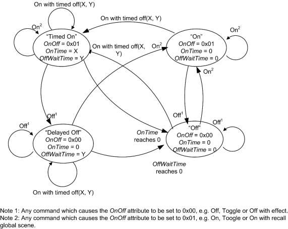
3.8.2.5 Commands Generated ¶
The server generates no commands.
3.8.2.6 Scene Table Extensions ¶
If the Scenes server cluster (11) is implemented, the following extension field is added to the Scenes table:
OnOff
3.8.2.7 Attribute Reporting ¶
This cluster SHALL support attribute reporting using the Report Attributes command and according to the minimum and maximum reporting interval settings described in Chapter 2, Foundation. The following attribute SHALL be reported:
OnOff
3.8.3 Client ¶
The client has no cluster specific attributes. The client generates the cluster specific commands received by the server (see 3.8.2.3) , as required by the application. No cluster specific commands are received by the client.
3.9 On/Off Switch Configuration ¶
3.9.1 Overview ¶
Please see Chapter 2 for a general cluster overview defining cluster architecture, revision, classification, identification, etc.
Attributes and commands for configuring On/Off switching devices.
3.9.1.1 Revision History ¶
The global ClusterRevision attribute value SHALL be the highest revision number in the table below.
| .Rev | Description |
|---|---|
| 1 | global mandatory ClusterRevision attribute added |
3.9.1.2 Classification ¶
| Hierarchy | Role | PICS Code | Primary Transaction |
|---|---|---|---|
| Base | Application | OOSC | Type 2 (server to client) |
3.9.1.3 Cluster Identifiers ¶
| Identifier | Name |
|---|---|
| 0x0007 | On /Off Switch Configuration |
3.9.2 Server ¶
3.9.2.1 Dependencies ¶
Any endpoint that implements this server cluster SHALL also implement the On/Off client cluster.
3.9.2.2 Attributes ¶
For convenience, the attributes defined in this specification are arranged into sets of related attributes; each set can contain up to 16 attributes. Attribute identifiers are encoded such that the most significant three nibbles specify the attribute set and the least significant nibble specifies the attribute within the set. The currently defined attribute sets are listed in Table 3-50.
Table 3-50. On/Off Switch Configuration Attribute Sets ¶
| Attribute Set Identifier | Description |
|---|---|
| 0x000 | Switch Information |
| 0x001 | Switch Settings |
3.9.2.2.1 Switch Information Attribute Set ¶
The switch information attribute set contains the attributes summarized in Table 3-51.
Table 3-51. Attributes of the Switch Information Attribute Set ¶
| Identifier | Name | Type | Range | Access | Default | M/O |
|---|---|---|---|---|---|---|
| 0x0000 | SwitchType | enum8 | 0x00 to 0x01 | R | - | M |
3.9.2.2.2 SwitchType Attribute ¶
The SwitchType attribute specifies the basic functionality of the On/Off switching device. This attribute SHALL be set to one of the nonreserved values listed in Table 3-52.
Table 3-52. Values of the SwitchType Attribute ¶
| Attribute Value | Description | Details |
|---|---|---|
| 0x00 | Toggle | A switch with two physical states. An action by the user (e.g., toggling a rocker switch) moves the switch from state 1 to state 2. The switch then remains in that state until another ac- tion from the user returns it to state 1. |
| 0x01 | Momentary | A switch with two physical states. An action by the user (e.g., pressing a button) moves the switch from state 1 to state 2. When the user ends his action (e.g., releases the button) the switch returns to state 1. |
| 0x02 | Multifunction | A switch that behaves differently depending on user input. Under some conditions it MAY send a toggle or in some other conditions a move command. The behavior of the switch is application-specific but the nature of the switch is clear: it is a multifunction switch. |
3.9.2.2.3 Switch Settings Attribute Set ¶
The switch settings attribute set contains the attributes summarized in Table 3-53.
Table 3-53. Attributes of the Switch Settings Attribute Set ¶
| Identifier | Name | Type | Range | Access | Default | M/O |
|---|---|---|---|---|---|---|
| 0x0010 | SwitchActions | enum8 | 0 to 2 | RW | 0 | M |
3.9.2.2.3.1 SwitchActions Attribute ¶
The SwitchActions attribute is 8 bits in length and specifies the commands of the On/Off cluster (see 3.8) to be generated when the switch moves between its two states, as detailed in Table 3-54.
Table 3-54. Values of the SwitchActions Attribute ¶
| Attribute Value | Command Generated When Arriving at State 2 From State 1 | Command Generated When Arriving at State 1 From State 2 |
| 0x00 | On | Off |
| 0x01 | Off | On |
| 0x02 | Toggle | Toggle |
3.9.2.3 Commands Received ¶
No commands are received by the server.
3.9.2.4 Commands Generated ¶
The server generates no commands.
3.9.3 Client ¶
The client has no cluster specific attributes. No cluster specific commands are generated or received by the client.
3.10 Level ¶
3.10.1 Overview ¶
Please see Chapter 2 for a general cluster overview defining cluster architecture, revision, classification, identification, etc.
This cluster provides an interface for controlling a characteristic of a device that can be set to a level, for example the brightness of a light, the degree of closure of a door, or the power output of a heater.
NOTE: This cluster specification is a base cluster for generic level control. Also, in this document, is the Level Control for Lighting cluster specification, formerly just Level Control. Level Control for Lighting is derived from this cluster specification, and has further requirements for the lighting application. Please see section 3.18 for the Level Control for Lighting.
3.10.1.1 Revision History ¶
The global ClusterRevision attribute value SHALL be the highest revision number in the table below.
| Rev | Description |
|---|---|
| 1 | global mandatory ClusterRevision attribute added |
| 2 | added Options attribute, state change table; ZLO 1.0; Base cluster (no change) CCB 2085 1775 2281 2147 |
| 3 | CCB 2574 2616 2659 2702 2814 2818 2819 2898 |
3.10.1.2 Classification ¶
| Hierarchy | Role | PICS Code | Primary Transaction |
|---|---|---|---|
| Base | Application | LVL | Type 1 (client to server) |
3.10.1.3 Cluster Identifiers ¶
Derived cluster specifications are defined elsewhere. This base cluster specification MAY be used for generic level control; however, it is recommended to derive another cluster to better define the application and domain requirements. If one of more derived cluster identifiers and the base identifier exists on a device endpoint, then they SHALL all represent a single instance of the device level control. See Chapter 2 – Instance Model for more information.
| Identifier | Hierarchy | Name |
|---|---|---|
| 0x0008 | Base | Level (this cluster specification) |
| 0x0008 | Derived | Level Control for Lighting (3.19) |
| 0x001c | Derived | Pulse Width Modulation (3.20) |
3.10.2 Server ¶
3.10.2.1 Dependencies ¶
For many applications, a close relationship between this cluster and the On/Off cluster is needed. This section describes the dependencies that are required when an endpoint that implements this server cluster and also implements the On/Off server cluster.
The OnOff attribute of the On/Off cluster and the CurrentLevel attribute of the Level Control cluster are intrinsically independent variables, as they are on different clusters. However, when both clusters are implemented on the same endpoint, dependencies MAY be introduced between them. Facilities are provided to introduce dependencies if required.
3.10.2.1.1 Effect of On/Off Commands on the CurrentLevel Attribute ¶
The attribute OnLevel (see 3.10.2.2.10) determines whether commands of the On/Off cluster have a permanent effect on the CurrentLevel attribute or not. If this attribute is defined (i.e., implemented and not 0xff) they do have a permanent effect, otherwise they do not. There is always a temporary effect, due to fading up / down.
The effect on the Level Control cluster on receipt of the various commands of the On/Off cluster are as detailed in Table 3-55. In this table, and throughout this cluster specification, 'level' means the value of the CurrentLevel attribute.
Table 3-55. Actions on Receipt for On/Off Commands, when Associated with Level Control ¶
| Command | Action On Receipt |
|---|---|
| On | Temporarily store CurrentLevel. Set CurrentLevel to the minimum level allowed for the device. Change CurrentLevel to OnLevel, or to the stored level if OnLevel is not defined, over the time period OnOffTransitionTime. |
| Off | Temporarily store CurrentLevel. Change CurrentLevel to the minimum level allowed for the device over the time period OnOffTransitionTime. If OnLevel is not defined, set the CurrentLevel to the stored level. |
| Toggle | If the OnOff attribute has the value Off, proceed as for the On command. Otherwise pro- ceed as for the Off command. |
Intention of the actions described in the table above is that CurrentLevel, which was in effect before any of the On, Off or Toggle commands were issued, shall be restored, after the transition is completed. If another of these commands is received, before the transition is completed, the originally stored CurrentLevel shall be preserved and restored.
3.10.2.1.2 Effect of Level Control Commands on the OnOff Attribute ¶
There are two sets of commands provided in the Level Control cluster. These are identical, except that the first set (Move to Level, Move and Step) SHALL NOT affect the OnOff attribute, whereas the second set ('with On/Off' variants) SHALL.
The first set is used to maintain independence between the CurrentLevel and OnOff attributes, so changing CurrentLevel has no effect on the OnOff attribute. As examples, this represents the behavior of a volume control with a mute button, or a 'turn to set level and press to turn on/off' light dimmer.
The second set is used to link the CurrentLevel and OnOff attributes. When the level is reduced to its minimum the OnOff attribute is automatically turned to Off, and when the level is increased above its minimum the OnOff attribute is automatically turned to On. As an example, this represents the behavior of a light dimmer with no independent on/off switch.
3.10.2.1.3 GlobalSceneControl and Commands with On/Off ¶
If a Move to Level (with On/off), Move (with on/Off) or Step (with On/Off) command is received that causes a change to the value of the OnOff attribute of the On/Off cluster, the value of the GlobalSceneControl attribute of the On/Off cluster SHALL be updated according to section 3.8.2.2.2.
3.10.2.2 Attributes ¶
The attributes of the Level Control server cluster are summarized in Table 3-56.
Table 3-56. Attributes of the Level Control Server Cluster ¶
| Id | Name | Type | Range | Acc | Default | M/O |
|---|---|---|---|---|---|---|
| 0x0000 | CurrentLevel | uint8 | MinLevel to MaxLevel | RPS | 0xff | M |
| 0x0001 | RemainingTime | uint16 | 0x0000 to 0xffff | R | 0 | O |
| 0x0002 | MinLevel | uint8 | 0 to MaxLevel | R | 0 | O |
| 0x0003 | MaxLevel | uint8 | MinLevel to 0xff | R | 0xff | O |
| 0x0004 | CurrentFrequency | uint16 | MinFrequency to MaxFrequency | RPS | 0 | O |
| 0x0005 | MinFrequency | uint16 | 0 to MaxFrequency | R | 0 | O |
| 0x0006 | MaxFrequency | uint16 | MinFrequency to 0xffff | R | 0 | O |
| 0x0010 | OnOffTransitionTime | uint16 | 0x0000 to 0xffff | RW | 0 | O |
| 0x0011 | OnLevel | uint8 | MinLevel to MaxLevel | RW | 0xff | O |
| 0x0012 | OnTransitionTime | uint16 | 0x0000 to 0xfffe | RW | 0xffff | O |
| 0x0013 | OffTransitionTime | uint16 | 0x0000 to 0xfffe | RW | 0xffff | O |
| 0x0014 | DefaultMoveRate | uint851 | 0x00 to 0xfe | RW | MS | O |
| 0x000F | Options | map8 | descr | RW | 0 | O |
| 0x4000 | StartUpCurrentLevel | uint8 | 0x00 to 0xff | RW | MS | O |
3.10.2.2.1 CurrentLevel Attribute ¶
The CurrentLevel attribute represents the current level of this device. The meaning of 'level' is device dependent.
3.10.2.2.2 RemainingTime Attribute ¶
The RemainingTime attribute represents the time remaining until the current command is complete - it is specified in 1/10ths of a second.
3.10.2.2.3 MinLevel Attribute ¶
The MinLevel attribute indicates the minimum value of CurrentLevel that is capable of being assigned.
51 CCB 2574 all other text and scripts treat as an unsigned 8-bit integer
3.10.2.2.4 MaxLevel Attribute ¶
The MaxLevel attribute indicates the maximum value of CurrentLevel that is capable of being assigned.
3.10.2.2.5 CurrentFrequency Attribute ¶
The CurrentFrequency attribute represents the frequency that the devices is at CurrentLevel. A CurrentFre-quency of 0 is unknown.
3.10.2.2.6 MinFrequency Attribute ¶
The MinFrequency attribute indicates the minimum value of CurrentFrequency that is capable of being assigned. MinFrequency shall be less than or equal to MaxFrequency. A value of 0 indicates undefined.
3.10.2.2.7 MaxFrequency Attribute ¶
The MaxFrequency attribute indicates the maximum value of CurrentFrequency that is capable of being assigned. MaxFrequency shall be greater than or equal to MinFrequency. A value of 0 indicates undefined.
3.10.2.2.8 Options Attribute ¶
The Options attribute is meant to be changed only during commissioning. The Options attribute is a bitmap that determines the default behavior of some cluster commands. Each command that is dependent on the Options attribute SHALL first construct a temporary Options bitmap that is in effect during the command processing. The temporary Options bitmap has the same format and meaning as the Options attribute, but includes any bits that may be overridden by command fields.
Below is the format and description of the Options attribute and temporary Options bitmap and the effect on dependent commands.
Table 3-57. Options Attribute ¶
| Bit | Name | Values & Summary |
|---|---|---|
| 0 | ExecuteIfOff | 0 – Do not execute command if OnOff is 0x00 (FALSE) 1 – Execute command if OnOff is 0x00 (FALSE) |
| 1 | Reserved for Derived Clusters | This bit has been defined in these derived clusters for a specific application: Level Control for Lighting |
3.10.2.2.8.1 ExecuteIfOff Options Bit ¶
Command execution SHALL NOT continue beyond the Options processing if all of these criteria are true:
- The command is one of the ‘without On/Off’ commands: Move, Move to Level, Stop, or Step.
- The On/Off cluster exists on the same endpoint as this cluster.
- The OnOff attribute of the On/Off cluster, on this endpoint, is 0x00 (FALSE).
- The value of the ExecuteIfOff bit is 0.
3.10.2.2.9 OnOffTransitionTime Attribute ¶
The OnOffTransitionTime attribute represents the time taken to move to or from the target level when On of Off commands are received by an On/Off cluster on the same endpoint. It is specified in 1/10ths of a second.
The actual time taken SHOULD be as close to OnOffTransitionTime as the device is able. N.B. If the device is not able to move at a variable rate, the OnOffTransitionTime attribute SHOULD NOT be implemented.
3.10.2.2.10 OnLevel Attribute ¶
The OnLevel attribute determines the value that the CurrentLevel attribute is set to when the OnOff attribute of an On/Off cluster on the same endpoint is set to On, as a result of processing an On/Off cluster command. If the OnLevel attribute is not implemented, or is set to the non-value, it has no effect. For more details see 3.10.2.1.1.
3.10.2.2.11 OnTransitionTime Attribute ¶
The OnTransitionTime attribute represents the time taken to move the current level from the minimum level to the maximum level when an On command is received by an On/Off cluster on the same endpoint. It is specified in 10ths of a second. If this command is not implemented, or contains a non-value, the On/OffTran-sitionTime will be used instead.
3.10.2.2.12 OffTransitionTime Attribute ¶
The OffTransitionTime attribute represents the time taken to move the current level from the maximum level to the minimum level when an Off command is received by an On/Off cluster on the same endpoint. It is specified in 10ths of a second. If this command is not implemented, or contains a non-value, the On/OffTran-sitionTime will be used instead.
3.10.2.2.13 DefaultMoveRate Attribute ¶
The DefaultMoveRate attribute determines the movement rate, in units per second, when a Move command is received with a non-value Rate parameter.
3.10.2.2.14 StartUpCurrentLevel Attribute ¶
The StartUpCurrentLevel attribute SHALL define the desired startup level for a device when it is supplied with power and this level SHALL be reflected in the CurrentLevel attribute. The values of the StartUpCur-rentLevel attribute are listed below:
Table 3-58. Values of the StartUpCurrentLevel attribute ¶
| Value | Action on power up |
|---|---|
| 0x00 | Set the CurrentLevel attribute to the minimum value permitted on the device |
| 0xff | Set the CurrentLevel attribute to its previous value |
| other values | Set the CurrentLevel attribute to this value |
3.10.2.3 Commands Received ¶
The command IDs for the Level Control cluster are listed below.
Table 3-59. Command IDs for the Level Control Cluster ¶
| ID | Description | M/O |
|---|---|---|
| 0x00 | Move to Level | M |
| 0x01 | Move | M |
| 0x02 | Step | M |
| 0x03 | Stop | M |
| 0x04 | Move to Level (with On/Off) | M |
| 0x05 | Move (with On/Off) | M |
| 0x06 | Step (with On/Off) | M |
| 0x07 | Stop | M |
| 0x08 | Move to Closest Frequency | M:CurrentFrequency attribute supported |
3.10.2.3.1 Move to Level Command ¶
3.10.2.3.1.1 Payload Format ¶
The Move to Level command payload SHALL be formatted as illustrated in Figure 3-40.
Figure 3-40. Format of the Move to Level Command Payload ¶
| Octets | 1 | 2 | 1 | 1 |
|---|---|---|---|---|
| Data Type | uint8 | uint16 | map8 | map8 |
| Field Name | Level | Transition time | OptionsMask | OptionsOverride |
| Default | n/a | n/a | 0 | 052 |
3.10.2.3.1.2 Effect on Receipt ¶
The OptionsMask & OptionsOverride fields SHALL both be present53. Default values are provided to interpret missing fields from legacy devices. A temporary Options bitmap SHALL be created from the Options attribute, using the OptionsMask & OptionsOverride fields. Each bit of the temporary Options bitmap SHALL be determined as follows:
Each bit in the Options attribute SHALL determine the corresponding bit in the temporary Options bitmap, unless the OptionsMask field is present and has the corresponding bit set to 1, in which case the corresponding bit in the OptionsOverride field SHALL determine the corresponding bit in the temporary Options bitmap.
52 CCB 2814 defaults for legacy devices 53 CCB 2814 fields are mandatory because fields may follow
The resulting temporary Options bitmap SHALL then be processed as defined in section 3.10.2.2.854.
On receipt of this command, a device SHALL move from its current level to the value given in the Level field. The meaning of ‘level’ is device dependent – e.g., for a light it MAY mean brightness level.
The movement SHALL be as continuous as technically practical, i.e., not a step function, and the time taken to move to the new level SHALL be equal to the value of the Transition time field, in tenths of a second, or as close to this as the device is able.
If the Transition time field takes the value 0xffff then the time taken to move to the new level SHALL instead be determined by the OnOffTransitionTime attribute. If OnOffTransitionTime, which is an optional attribute, is not present, the device SHALL move to its new level as fast as it is able.
If the device is not able to move at a variable rate, the Transition time field MAY be disregarded.
3.10.2.3.2 Move Command ¶
3.10.2.3.2.1 Payload Format ¶
The Move command payload SHALL be formatted as illustrated in Figure 3-41.
Figure 3-41. Format of the Move Command Payload ¶
| Octets | 1 | 1 | 1 | 1 |
|---|---|---|---|---|
| Data Type | enum8 | uint8 | map8 | map8 |
| Field Name | Move mode | Rate | OptionsMask | OptionsOverride |
| Default | n/a | n/a | 0 | 055 |
3.10.2.3.2.2 Move Mode Field ¶
The Move mode field SHALL be one of the non-reserved values in Table 3-60.
Table 3-60. Values of the Move Mode Field ¶
| Fade Mode Value | Description |
|---|---|
| 0x00 | Up |
| 0x01 | Down |
3.10.2.3.2.3 Rate Field ¶
The Rate field specifies the rate of movement in units per second. The actual rate of movement SHOULD be as close to this rate as the device is able. If the Rate field is 0xFF, then the value in DefaultMoveRate attribute SHALL be used. If the Rate field is 0xFF and the DefaultMoveRate attribute is not supported, then the device SHOULD move as fast as it is able. If the device is not able to move at a variable rate, this field MAY be disregarded.
3.10.2.3.2.4 Effect on Receipt ¶
54 CCB 2702 55 CCB 2814 defaults for legacy devices
On receipt of this command, a device SHALL first create and process a temporary Options bitmap as described in section 3.10.2.3.1.2.
On receipt of this command, a device SHALL move from its current level in an up or down direction in a continuous fashion, as detailed in Table 3-61.
Table 3-61. Actions on Receipt for Move Command ¶
| Fade Mode | Action on Receipt |
|---|---|
| Up | Increase the device’s level at the rate given in the Rate field. If the level reaches the maximum allowed for the device, stop. |
| Down | Decrease the device’s level at the rate given in the Rate field. If the level reaches the minimum allowed for the device, stop. |
3.10.2.3.3 Step Command ¶
3.10.2.3.3.1 Payload Format ¶
The Step command payload SHALL be formatted as illustrated in Figure 3-42.
Figure 3-42. Format of the Step Command Payload ¶
| Octets | 1 | 1 | 2 | 1 | 1 |
|---|---|---|---|---|---|
| Data Type | enum8 | uint8 | uint16 | map8 | map8 |
| Field Name | Step mode | Step size | Transition time | OptionsMask | OptionsOverride |
| Default | n/a | n/a | n/a | 0 | 056 |
The Step mode field SHALL be one of the non-reserved values in Table 3-62.
Table 3-62. Values of the Step Mode Field ¶
| Fade Mode Value | Description |
|---|---|
| 0x00 | Up |
| 0x01 | Down |
The Transition time field specifies the time that SHALL be taken to perform the step, in tenths of a second. A step is a change in the CurrentLevel of 'Step size' units. The actual time taken SHOULD be as close to this as the device is able. If the Transition time field is 0xffff the device SHOULD move as fast as it is able.
If the device is not able to move at a variable rate, the Transition time field MAY be disregarded.
3.10.2.3.3.2 Effect on Receipt ¶
On receipt of this command, a device SHALL first create and process a temporary Options bitmap as described in section 3.10.2.3.1.2.
56 CCB 2814 defaults for legacy devices
On receipt of this command, a device SHALL move from its current level in an up or down direction as detailed in Table 3-63.
Table 3-63. Actions on Receipt for Step Command ¶
| Fade Mode | Action on Receipt |
|---|---|
| Up | Increase CurrentLevel by 'Step size' units, or until it reaches the maximum level allowed for the device if this reached in the process. In the latter case, the transi- tion time SHALL be proportionally reduced. |
| Down | Decrease CurrentLevel by 'Step size' units, or until it reaches the minimum level allowed for the device if this reached in the process. In the latter case, the transi- tion time SHALL be proportionally reduced. |
3.10.2.3.4 Stop Command ¶
3.10.2.3.4.1 Payload Format ¶
The command payload SHALL be formatted as illustrated below.
Figure 3-43. Format of the Command Payload ¶
| Octets | 1 | 1 |
|---|---|---|
| Data Type | map8 | map8 |
| Field Name | OptionsMask | OptionsOverride |
| Default | 0 | 057 |
3.10.2.3.4.2 Effect of Receipt ¶
On receipt of this command, a device SHALL first create and process a temporary Options bitmap as described in section 3.10.2.3.1.2.
Upon receipt of this command, any Move to Level, Move or Step command (and their 'with On/Off' variants) currently in process SHALL be terminated. The value of CurrentLevel SHALL be left at its value upon receipt of the Stop command, and RemainingTime SHALL be set to zero.
This command has two entries in Table 3-5, one for the Move to Level, Move and Set commands, and one for their 'with On/Off' counterparts. This is solely for symmetry, to allow easy choice of one or other set of commands – the Stop commands are identical, because the dependency on On/Off is determined by the original command that is being stopped58.
3.10.2.3.5 Move to Closest Frequency Command ¶
This command shall be mandatory if the CurrentFrequency attribute is supported.
3.10.2.3.5.1 Payload Format ¶
57 CCB 2814 defaults for legacy devices 58 CCB 2819
The command payload SHALL be formatted as illustrated below.
Figure 3-44. Format of the Command Payload ¶
| Octets | 259 |
|---|---|
| Data Type | uint16 |
| Field Name | Frequency |
3.10.2.3.5.2 Effect of Receipt ¶
Upon receipt of this command, the device shall change its current frequency to the requested frequency, or to the closest frequency that it can generate. If the device cannot approximate the frequency, then it shall return a default response with an error code of INVALID_VALUE. Determining if a requested frequency can be approximated by a supported frequency is a manufacturer-specific decision.
3.10.2.3.6 'With On/Off' Commands ¶
The Move to Level (with On/Off), Move (with On/Off) and Step (with On/Off) commands have identical payloads to the Move to Level, Move and Step commands respectively60. They also have the same effects, except for the following additions.
Before commencing any command that has the effect of setting the CurrentLevel above the minimum level allowed by the device, the OnOff attribute of the On/Off cluster on the same endpoint, if implemented, SHALL be set to On.
If any command that has the effect of setting the CurrentLevel to the minimum level allowed by the device, the OnOff attribute of the On/Off cluster on the same endpoint, if implemented, SHALL be set to Off.
3.10.2.4 Commands Generated ¶
The server generates no commands.
3.10.2.5 Scene Table Extensions61 ¶
If the Scenes server cluster is implemented, the following extension field is added to the Scenes table:
CurrentLevel
3.10.3 Client ¶
The client has no cluster specific attributes. The client generates the cluster specific commands received by the server62, as required by the application. No cluster specific commands are received by the client.
59 CCB 2898 explain duplicate Stop command 60 CCB 2818 ‘with On/Off commands are the same, including Options processing 61 CCB 2659 62 CCB 2616
3.11 Alarms ¶
3.11.1 Overview ¶
Please see Chapter 2 for a general cluster overview defining cluster architecture, revision, classification, identification, etc.
Attributes and commands for sending alarm notifications and configuring alarm functionality.
Alarm conditions and their respective alarm codes are described in individual clusters, along with an alarm mask field. Alarm notifications are reported to subscribed targets using binding.
Where an alarm table is implemented, all alarms, masked or otherwise, are recorded and MAY be retrieved on demand.
Alarms MAY either reset automatically when the conditions that cause are no longer active, or MAY need to be explicitly reset.
3.11.1.1 Revision History ¶
The global ClusterRevision attribute value SHALL be the highest revision number in the table below.
| Rev | Description |
|---|---|
| 1 | global mandatory ClusterRevision attribute added |
3.11.1.2 Classification ¶
| Hierarchy | Role | PICS Code | Primary Transaction |
|---|---|---|---|
| Base | Application | ALM | Type 2 (server to client) |
3.11.1.3 Cluster Identifiers ¶
| Identifier | Name |
|---|---|
| 0x0009 | Alarms |
3.11.2 Server ¶
3.11.2.1 Dependencies ¶
Any endpoint which implements time stamping SHALL also implement the Time server cluster.
3.11.2.2 Attributes ¶
For convenience, the attributes defined in this specification are arranged into sets of related attributes; each set can contain up to 16 attributes. Attribute identifiers are encoded such that the most significant three nibbles specify the attribute set and the least significant nibble specifies the attribute within the set. The currently defined attribute sets are listed in Table 3-64.
Table 3-64. Alarms Cluster Attribute Sets ¶
| Attribute Set Identifier | Description |
|---|---|
| 0x000 | Alarm Information |
3.11.2.2.1 Alarm Information Attribute Set ¶
The Alarm Information attribute set contains the attributes summarized in Table 3-65.
Table 3-65. Attributes of the Alarm Information Attribute Set ¶
| Identifier | Name | Type | Range | Access | Default | M/O |
|---|---|---|---|---|---|---|
| 0x0000 | AlarmCount | uint16 | 0x00 to 0xff | R | 0 | O |
3.11.2.2.1.1 AlarmCount Attribute ¶
The AlarmCount attribute is 16 bits in length and specifies the number of entries currently in the alarm table.
If alarm logging is not implemented this attribute SHALL always take the value 0.
3.11.2.3 Alarm Table ¶
The alarm table is used to store details of alarms generated within the devices. Alarms are requested by clusters which have alarm functionality, e.g., when attributes take on values that are outside ‘safe’ ranges.
The maximum number of entries in the table is device dependent.
When an alarm is generated, a corresponding entry is placed in the table. If the table is full, the earliest entry is replaced by the new entry.
Once an alarm condition has been reported the corresponding entry in the table is removed.
3.11.2.3.1 Alarm Table Format ¶
The format of an alarm table entry is illustrated in Table 3-66Format of the Alarm Table.
Table 3-66. Format of the Alarm Table ¶
| Field | Type | Valid Range | Description |
|---|---|---|---|
| Alarm code | enum8 | 0x00 to 0xff | Identifying code for the cause of the alarm, as given in the specification of the cluster whose attribute generated this alarm. |
| Cluster iden- tifier | clusterId | 0x0000 to 0xffff | The identifier of the cluster whose attribute gener- ated this alarm. |
| Time stamp | uint32 | 0x00000000 to 0xffffffff | The time at which the alarm occurred or 0xffffffff if no time information is available. This time is taken from a Time server cluster, which must be present on the same endpoint. |
3.11.2.4 Commands Received ¶
The received command IDs for the Alarms cluster are listed in Table 3-67.
Table 3-67. Received Command IDs for the Alarms Cluster ¶
| Command Identifier Field Value | Description | M/O |
|---|---|---|
| 0x00 | Reset Alarm | M |
| 0x01 | Reset all alarms | M |
| 0x02 | Get Alarm | O |
| 0x03 | Reset alarm log | O |
3.11.2.4.1 Reset Alarm Command ¶
This command resets a specific alarm. This is needed for some alarms that do not reset automatically. If the alarm condition being reset was in fact still active then a new notification will be generated and, where implemented, a new record added to the alarm log.
3.11.2.4.1.1 Payload Format ¶
The Reset Alarm command payload SHALL be formatted as illustrated in Figure 3-45.
Figure 3-45. Format of the Reset Alarm Command Payload ¶
| Octets | 1 | 2 |
|---|---|---|
| Data Type | enum8 | clusterId |
| Field Name | Alarm code | Cluster identifier |
3.11.2.4.2 Reset All Alarms Command ¶
This command resets all alarms. Any alarm conditions that were in fact still active will cause a new notification to be generated and, where implemented, a new record added to the alarm log.
3.11.2.4.3 Get Alarm Command ¶
This command causes the alarm with the earliest generated alarm entry in the alarm table to be reported in a get alarm response command 3.11.2.5.2. This command enables the reading of logged alarm conditions from the alarm table. Once an alarm condition has been reported the corresponding entry in the table is removed.
This command does not have a payload.
3.11.2.4.4 Reset Alarm Log Command ¶
This command causes the alarm table to be cleared, and does not have a payload.
3.11.2.5 Commands Generated ¶
The generated command IDs for the Alarms cluster are listed in Table 3-68.
Table 3-68. Generated Command IDs for the Alarms Cluster ¶
| Command Identifier Field Value | Description | M/O |
|---|---|---|
| 0x00 | Alarm | M |
| 0x01 | Get alarm response | O |
3.11.2.5.1 Alarm Command ¶
The alarm command signals an alarm situation on the sending device.
An alarm command is generated when a cluster which has alarm functionality detects an alarm condition, e.g., an attribute has taken on a value that is outside a ‘safe’ range. The details are given by individual cluster specifications.
3.11.2.5.1.1 Payload Format ¶
The alarm command payload SHALL be formatted as illustrated in Figure 3-46.
Figure 3-46. Format of the Alarm Command Payload ¶
| Octets | 1 | 2 |
|---|---|---|
| Data Type | enum8 | clusterId |
| Field Name | Alarm code | Cluster identifier |
3.11.2.5.2 Get Alarm Response Command ¶
The get alarm response command returns the results of a request to retrieve information from the alarm log, along with a time stamp indicating when the alarm situation was detected.
3.11.2.5.2.1 Payload Format ¶
The get alarm response command payload SHALL be formatted as illustrated in Figure 3-47.
Figure 3-47. Format of the Get Alarm Response Command Payload ¶
| Octets | 1 | 0/1 | 0/2 | 0/4 |
|---|---|---|---|---|
| Data Type | enum8 | enum8 | clusterId | uint32 |
| Field Name | Status | Alarm code | Cluster identifier | Time stamp |
If there is at least one alarm record in the alarm table then the status field is set to SUCCESS. The alarm code, cluster identifier and time stamp fields SHALL all be present and SHALL take their values from the item in the alarm table that they are reporting.
If there are no more alarms logged in the alarm table then the status field is set to NOT_FOUND and the alarm code, cluster identifier and time stamp fields SHALL be omitted.
3.11.3 Client ¶
The client has no cluster specific attributes. The client generates the cluster specific commands received by the server (see 3.11.2.4), as required by the application. The client receives the cluster specific commands generated by the server (see 3.11.2.5).
3.12 Time ¶
3.12.1 Overview ¶
Please see Chapter 2 for a general cluster overview defining cluster architecture, revision, classification, identification, etc.
This cluster provides a basic interface to a real-time clock. The clock time MAY be read and also written, in order to synchronize the clock (as close as practical) to a time standard. This time standard is the number of seconds since 0 hrs 0 mins 0 sec on 1st January 2000 UTC (Universal Coordinated Time).
The cluster also includes basic functionality for local time zone and daylight saving time.
3.12.1.1 Revision History ¶
The global ClusterRevision attribute value SHALL be the highest revision number in the table below.
| Rev | Description |
|---|---|
| 1 | global mandatory ClusterRevision attribute added |
| 2 | CCB 2544 2983 |
3.12.1.2 Classification ¶
| Hierarchy | Role | PICS Code |
|---|---|---|
| Base | Application | T |
3.12.1.3 Cluster Identifiers ¶
| Identifier | Name |
|---|---|
| 0x000a | Time |
3.12.2 Server ¶
3.12.2.1 Dependencies ¶
None
3.12.2.2 Attributes ¶
The server supports the attributes shown in Table 3-69.
Table 3-69. Attributes of the Time Server Cluster ¶
| Identifier | Name | Type | Range | Access | Default | M/O |
|---|---|---|---|---|---|---|
| 0x0000 | Time | UTC | 0x00000000 to 0xfffffffe | R*W63 | 0xffffffff | M |
| 0x0001 | TimeStatus | map8 | desc | R*W | 0 | M |
| 0x0002 | TimeZone | int32 | -86400 to +86400 | RW | 0 | O |
| 0x0003 | DstStart | uint32 | 0x00000000 to 0xfffffffe | RW | 0xffffffff | O |
| 0x0004 | DstEnd | uint32 | 0x00000000 to 0xfffffffe | RW | 0xffffffff | O |
| 0x0005 | DstShift | int32 | -86400 to +86400 | RW | 0 | O |
| 0x0006 | StandardTime | uint32 | 0x00000000 to 0xfffffffe | R | 0xffffffff | O |
| 0x0007 | LocalTime | uint32 | 0x00000000 to 0xfffffffe | R | 0xffffffff | O |
| 0x0008 | LastSetTime | UTC | 0x00000000 to 0xffffffff | R | 0xffffffff | O |
| 0x0009 | ValidUntilTime | UTC | 0x00000000 to 0xffffffff | RW | 0xffffffff | O |
3.12.2.2.1 Time Attribute ¶
The Time attribute is 32 bits in length and holds the time value of a real time clock. This attribute has data type UTCTime, but note that it MAY not actually be synchronized to UTC - see discussion of the TimeStatus attribute.
If the Master bit of the TimeStatus attribute has a value of 0, writing to this attribute SHALL set the real time clock to the written value, otherwise it cannot be written. Attempting to write to this attribute while the master bit of the TimeStatus attribute is 1, SHOULD return a response of status READ_ONLY.64
The non-value indicates an invalid time.
3.12.2.2.2 TimeStatus Attribute ¶
The TimeStatus attribute holds a number of bit fields, as detailed in Table 3-70.
63 CCB 2544 Time & TimeStatus are not always writable 64 CCB 2893
Table 3-70. Bit Values of the TimeStatus Attribute ¶
| Attribute Bit Number | Meaning | Values |
|---|---|---|
| 0 | Master | 1 – master clock 0 – not master clock |
| 1 | Synchronized | 1 – synchronized 0 – not synchronized |
| 2 | MasterZoneDst | 1 – master for Time Zone and DST 0 – not master for Time Zone and DST |
| 3 | Superseding | 1 – time synchronization SHOULD be superseded 0 – time synchronization SHOULD not be superseded |
The Master and Synchronized bits together provide information on how closely the Time attribute conforms to the time standard.
The Master bit specifies whether the real time clock corresponding to the Time attribute is internally set to the time standard. This bit is not writeable – if a value is written to the TimeStatus attribute, this bit does not change.
The Synchronized bit specifies whether Time has been set over the network to synchronize it (as close as MAY be practical) to the time standard (see 3.12.1). This bit must be explicitly written to indicate this – i.e., it is not set automatically on writing to the Time attribute. If the Master bit is 1, the value of this bit is 0.
If both the Master and Synchronized bits are 0, the real time clock has no defined relationship to the time standard (e.g., it MAY record the number of seconds since the device was initialized).
The MasterZoneDst bit specifies whether the TimeZone, DstStart, DstEnd and DstShift attributes are set internally to correct values for the location of the clock. If not, these attributes need to be set over the network. This bit is not writeable – if a value is written to the TimeStatus attribute, this bit does not change.
Devices SHALL synchronize to a Time server with the highest rank according to the following rules, listed in order of precedence:
- A server with the Superseding bit set SHALL be chosen over a server without the bit set.
- A server with the Master bit SHALL be chosen over a server without the bit set.
- The server with the lower short address SHALL be chosen (note that this means a coordinator with the Superseding and Master bit set will always be chosen as the network time server).
- A Time server with neither the Master nor Synchronized bits set SHOULD not be chosen as the network time server.
3.12.2.2.3 TimeZone Attribute ¶
The TimeZone attribute indicates the local time zone, as a signed offset in seconds from the Time attribute value. The non-value indicates an invalid time zone.
The local Standard Time, i.e., the time adjusted for the time zone, but not adjusted for Daylight Saving Time (DST) is given by
Standard Time = Time + TimeZone
The range of this attribute is +/- one day. Note that the actual range of physical time zones on the globe is much smaller than this, so the manufacturer has the option to impose a smaller range.
If the MasterZoneDst bit of the TimeStatus attribute has a value of 1, this attribute cannot be written.
3.12.2.2.4 DstStart Attribute ¶
The DstStart attribute indicates the DST start time in seconds. The non-value indicates an invalid DST start time. For semantic purposes DstStart and DstEnd are actually type UTCTime.
The Local Time, i.e., the time adjusted for both the time zone and DST, is given by
Local Time = Standard Time + DstShift (if DstStart <= Time <= DstEnd)
Local Time = Standard Time (if Time < DstStart or Time > DstEnd)
Note that the three attributes DstStart, DstEnd and DstShift are optional, but if any one of them is implemented the other two must also be implemented.
Note that this attribute SHOULD be set to a new value once every year.
If the MasterZoneDst bit of the TimeStatus attribute has a value of 1, this attribute cannot be written.
3.12.2.2.5 DstEnd Attribute ¶
The DstEnd attribute indicates the DST end time in seconds. The non-value indicates an invalid DST end time. For semantic purposes DstStart and DstEnd are actually type UTCTime.
Note that this attribute SHOULD be set to a new value once every year, and SHOULD be written synchronously with the DstStart attribute.
If the MasterZoneDst bit of the TimeStatus attribute has a value of 1, this attribute cannot be written.
3.12.2.2.6 DstShift Attribute ¶
The DstShift attribute represents a signed offset in seconds from the standard time, to be applied between the times DstStart and DstEnd to calculate the Local Time (see 3.12.2.2.4). The non-value indicates an invalid DST shift.
The range of this attribute is +/- one day. Note that the actual range of DST values employed by countries is much smaller than this, so the manufacturer has the option to impose a smaller range.
If the MasterZoneDst bit of the TimeStatus attribute has a value of 1, this attribute cannot be written.
3.12.2.2.7 StandardTime Attribute ¶
The local Standard Time is given by the equation in 3.12.2.2.3. Another device on the network MAY calculate this time by reading the Time and TimeZone attributes and adding them together. If implemented however, the optional StandardTime attribute indicates this time directly. The non-value indicates an invalid Standard Time.
3.12.2.2.8 LocalTime Attribute ¶
The Local Time is given by the equation in 3.12.2.2.4. Another device on the network MAY calculate this time by reading the Time, TimeZone, DstStart, DstEnd and DstShift attributes and performing the calculation. If implemented however, the optional LocalTime attribute indicates this time directly. The non-value indicates an invalid Local Time.
3.12.2.2.9 LastSetTime Attribute ¶
The LastSetTime attribute indicates the most recent time that the Time attribute was set, either internally or over the network (thus it holds a copy of the last value that Time was set to). This attribute is set automatically, so is Read Only. The non-value indicates an invalid LastSetTime.
3.12.2.2.10 ValidUntilTime Attribute ¶
The ValidUntilTime attribute indicates a time, later than LastSetTime, up to which the Time attribute MAY be trusted. ‘Trusted’ means that the difference between the Time attribute and the true UTC time is less than an acceptable error. The acceptable error is not defined by this cluster specification, but MAY be defined by the application profile in which devices that use this cluster are specified.
Note: The value that the ValidUntilTime attribute SHOULD be set to depends both on the acceptable error and the drift characteristics of the real time clock in the device that implements this cluster, which must therefore be known by the application entity that sets this value.
The non-value indicates an invalid ValidUntilTime.
3.12.2.3 Commands Received ¶
The server receives no commands except those to read and write attributes.
3.12.2.4 Commands Generated ¶
The server generates no cluster specific commands.
3.12.3 Client ¶
The client has no cluster specific attributes. No cluster specific commands are generated or received by the client.
3.13 RSSI Location ¶
3.13.1 Overview ¶
Please see Chapter 2 for a general cluster overview defining cluster architecture, revision, classification, identification, etc.
This cluster provides a means for exchanging Received Signal Strength Indication (RSSI) information among one hop devices as well as messages to report RSSI data to a centralized device that collects all the RSSI data in the network. An example of the usage of RSSI location cluster is shown in Figure 3-48.
Figure 3-48. Example of Usage of RSSI Location Cluster ¶
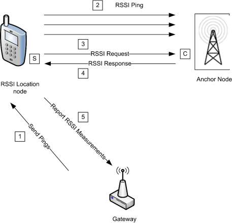
3.13.1.1 Revision History ¶
The global ClusterRevision attribute value SHALL be the highest revision number in the table below.
| Rev | Description |
|---|---|
| 1 | global mandatory ClusterRevision attribute added |
3.13.1.2 Classification ¶
| Hierarchy | Role | PICS Code |
|---|---|---|
| Base | Utility | RSSI |
3.13.1.3 Cluster Identifiers ¶
| Identifier | Name |
|---|---|
| 0x000b | RSSI |
3.13.2 Server ¶
3.13.2.1 Dependencies ¶
None
3.13.2.2 Attributes ¶
For convenience, the attributes defined in this specification are arranged into sets of related attributes; each set can contain up to 16 attributes. Attribute identifiers are encoded such that the most significant three nibbles specify the attribute set and the least significant nibble specifies the attribute within the set. The currently defined attribute sets are listed in Table 3-71.
Table 3-71. Location Attribute Sets ¶
| Attribute Set Identifier | Description |
|---|---|
| 0x000 | Location Information |
| 0x001 | Location Settings |
3.13.2.2.1 Location Information Attribute Set ¶
The Location Information attribute set contains the attributes summarized in Table 3-72.
Table 3-72. Attributes of the Location Information Attribute Set ¶
| Identifier | Name | Type | Range | Access | Def | M/O |
|---|---|---|---|---|---|---|
| 0x0000 | LocationType | data8 | desc | RW | - | M |
| 0x0001 | LocationMethod | enum8 | desc | RW | - | M |
| 0x0002 | LocationAge | uint16 | 0x0000 to 0xffff | R | - | O |
| 0x0003 | QualityMeasure | uint8 | 0x00 to 0x64 | R | - | O |
| 0x0004 | NumberOfDevices | uint8 | 0x00 to 0xff | R | - | O |
3.13.2.2.1.1 LocationType Attribute ¶
The LocationType attribute is 8 bits long and is divided into bit fields. The meanings of the individual bit fields are detailed in Table 3-73.
Table 3-73. Bit Values of the LocationType Attribute ¶
| Bit Field (Bit Numbers) | Meaning | Values |
|---|---|---|
| 0 | Absolute | 1 – Absolute location 0 – Measured location |
| 1 | 2-D | 1 – Two dimensional 0 – Three dimensional |
| 2-3 | Coordinate System | 0 – Rectangular (installation-specific origin and orientation) |
The Absolute bit field indicates whether the location is a known absolute location or is calculated.
The 2-D bit field indicates whether the location information is two- or three-dimensional. If the location information is two-dimensional, Coordinate 3 is unknown and SHALL be set to 0x8000.
The Coordinate System bit field indicates the geometry of the system used to express the location coordinates. If the field is set to zero, the location coordinates are expressed using the rectangular coordinate system. All other values are reserved.
3.13.2.2.1.2 LocationMethod Attribute ¶
The LocationMethod attribute SHALL be set to one of the non-reserved values in Table 3-74.
Table 3-74. Values of the LocationMethod Attribute ¶
| Value | Method | Description |
|---|---|---|
| 0x00 | Lateration | A method based on RSSI measurements from three or more sources. |
| 0x01 | Signposting | The location reported is the location of the neighboring device with the strongest received signal. |
| 0x02 | RF fingerprinting | RSSI signatures are collected into a database at commissioning time. The location reported is the location taken from the RSSI signature database that most closely matches the device’s own RSSI signature. |
| 0x03 | Out of band | The location is obtained by accessing an out-of-band device (that is, the device providing the location is not part of the network). |
| 0x04 | Centralized | The location is performed in a centralized way (e.g., by the GW) by a device on the network. Different from the above because the device performing the localization is part of the network. |
| 0x40 to 0xff | - | Reserved for manufacturer specific location methods. |
3.13.2.2.1.3 LocationAge Attribute ¶
The LocationAge attribute indicates the amount of time, measured in seconds, that has transpired since the location information was last calculated. This attribute is not valid if the Absolute bit of the LocationType attribute is set to one.
3.13.2.2.1.4 QualityMeasure Attribute ¶
The QualityMeasure attribute is a measure of confidence in the corresponding location information. The higher the value, the more confident the transmitting device is in the location information. A value of 0x64 indicates complete (100%) confidence and a value of 0x00 indicates zero confidence. (Note: no fixed confidence metric is mandated – the metric MAY be application and manufacturer dependent.)
This field is not valid if the Absolute bit of the LocationType attribute is set to one.
3.13.2.2.1.5 NumberOfDevices Attribute ¶
The NumberOfDevices attribute is the number of devices whose location data were used to calculate the last location value. This attribute is related to the QualityMeasure attribute.
3.13.2.2.2 Location Settings Attribute Set ¶
The Location Settings attribute set contains the attributes summarized in Table 3-75.
Table 3-75. Attributes of the Location Settings Attribute Set ¶
| Identifier | Name | Type | Range | Acc | Def | M |
|---|---|---|---|---|---|---|
| 0x0010 | Coordinate1 | int16 | 0x8000 to 0x7fff | RW | non | M |
| 0x0011 | Coordinate2 | int16 | 0x8000 to 0x7fff | RW | non | M |
| 0x0012 | Coordinate3 | int16 | 0x8000 to 0x7fff | RW | non | O |
| 0x0013 | Power | int16 | 0x8000 to 0x7fff | RW | non | M |
| 0x0014 | PathLossExponent | uint16 | 0x0000 to 0xffff | RW | non | M |
| 0x0015 | ReportingPeriod | uint16 | 0x0000 to 0xffff | RW | MS | O |
| 0x0016 | CalculationPeriod | uint16 | 0x0000 to 0xffff | RW | MS | O |
| 0x0017 | NumberRSSIMeasurements | uint8 | 0x01 to 0xff | RW | MS | M |
3.13.2.2.2.1 Coordinate 1,2,3 Attributes ¶
The Coordinate1, Coordinate2 and Coordinate3 attributes are signed 16-bit integers, and represent orthogonal linear coordinates x, y, z in meters as follows.
x = Coordinate1 / 10, y = Coordinate2 / 10, z = Coordinate3 / 10
The range of x is -3276.7 to 3276.7 meters, corresponding to Coordinate1 between 0x8001 and 0x7fff. The same range applies to y and z. A non-value for any of the coordinates indicates that the coordinate is unknown.
3.13.2.2.2.2 Power Attribute ¶
The Power attribute specifies the value of the average power P0, measured in dBm, received at a reference distance of one meter from the transmitter.
P0 = Power / 100
A value of 0x8000 indicates that Power is unknown.
3.13.2.2.2.3 PathLossExponent Attribute ¶
The PathLossExponent attribute specifies the value of the Path Loss Exponent n, an exponent that describes the rate at which the signal power decays with increasing distance from the transmitter.
n = PathLossExponent / 100
A non-value indicates that PathLossExponent is unknown.
The signal strength in dBm at a distance d meters from the transmitter is given by
P = P0 – 10n x log10(d)
where
P is the power in dBm at the receiving device.
P0 is the average power in dBm received at a reference distance of 1meter from the transmitter.
n is the path loss exponent.
d is the distance in meters between the transmitting device and the receiving device.
3.13.2.2.2.4 ReportingPeriod Attribute ¶
The ReportingPeriod attribute specifies the time in seconds between successive reports of the device's location by means of the Location Data Notification command. If ReportingPeriod is zero, the device does not automatically report its location. Note that location information can always be polled at any time.
3.13.2.2.2.5 CalculationPeriod Attribute ¶
The CalculationPeriod attribute specifies the time in milliseconds between successive calculations of the device's location. If CalculationPeriod is less than the physically possible minimum period that the calculation can be performed, the calculation will be repeated as frequently as possible. In case of centralized location (LocationMethod attribute equal to Centralized) the CalculationPeriod attribute specifies the period between successive RSSI ping commands.
3.13.2.2.2.6 NumberRSSIMeasurements Attribute ¶
The NumberRSSIMeasurements attribute specifies the number of RSSI measurements to be used to generate one location estimate. The measurements are averaged to improve accuracy. NumberRSSIMeasurements must be greater than or equal to 1. In the case of centralized location (LocationMethod attribute equal to Centralized) the NumberRSSIMeasurements attribute specifies the number of successive RSSI Ping commands to be sent by the server side of location cluster.
3.13.2.3 Commands Received ¶
The received command IDs for the Location cluster are listed in Table 3-76.
Table 3-76. Received Command IDs for the Location Cluster ¶
| Command Identifier Field Value | Description | M/O |
|---|---|---|
| 0x00 | Set Absolute Location | M |
| 0x01 | Set Device Configuration | M |
| 0x02 | Get Device Configuration | M |
| 0x03 | Get Location Data | M |
| 0x04 | RSSI Response | O |
| 0x05 | Send Pings | O |
| Command Identifier Field Value | Description | M/O |
|---|---|---|
| 0x06 | Anchor Node Announce | O |
3.13.2.3.1 Set Absolute Location Command ¶
This command is used to set a device’s absolute (known, not calculated) location and the channel parameters corresponding to that location.
3.13.2.3.1.1 Payload Format ¶
The Set Absolute Location command payload SHALL be formatted as illustrated in Figure 3-49.
Figure 3-49. Format of the Set Absolute Location Command Payload ¶
| Octets | 2 | 2 | 2 | 2 | 2 |
|---|---|---|---|---|---|
| Data Type | int16 | int16 | int16 | int16 | uint16 |
| Field Name | Coordinate 1 | Coordinate 2 | Coordinate 3 | Power | Path Loss Exponent |
The fields of the payload correspond directly to the attributes with the same names. For details of their meaning and ranges see the descriptions of the individual attributes.
The three coordinate fields SHALL contain the absolute location (known, not calculated) of the destination device. If any coordinate field(s) is not known, the value(s) SHALL be set to 0x8000.
3.13.2.3.1.2 Effect on Receipt ¶
On receipt of this command, the device SHALL update the attributes corresponding to (i.e., with the same names as) the payload fields.
3.13.2.3.2 Set Device Configuration Command ¶
This command is used to set a device’s location parameters, which will be used for calculating and reporting measured location. This command is invalid unless the Absolute bit of the LocationType attribute has a value of 0.
3.13.2.3.2.1 Payload Format ¶
The Set Device Configuration command payload SHALL be formatted as illustrated in Figure 3-50.
Figure 3-50. Format of the Set Device Configuration Payload ¶
| Octets | 2 | 2 | 2 | 1 | 2 |
|---|---|---|---|---|---|
| Data Type | int16 | uint16 | uint16 | uint8 | uint16 |
| Field Name | Power | Path Loss Exponent | Calculation Period | Number RSSI Measurements | Reporting Period |
The fields of the payload correspond directly to the attributes with the same names. For details of their meaning and ranges see the descriptions of the individual attributes.
3.13.2.3.2.2 Effect on Receipt ¶
On receipt of this command, the device SHALL update the attributes corresponding to (i.e., with the same names as) the payload fields.
3.13.2.3.3 Get Device Configuration Command ¶
This command is used to request the location parameters of a device. The location parameters are used for calculating and reporting measured location.
3.13.2.3.3.1 Payload Format ¶
The Get Device Configuration command payload SHALL be formatted as illustrated in Figure 3-51.
Figure 3-51. Format of the Get Device Configuration Payload ¶
| Octets | 8 |
|---|---|
| Data Type | EUI64 |
| Field Name | Target Address |
The Target Address field contains the 64-bit IEEE address of the device for which the location parameters are being requested. This field MAY contain the address of the sending device, the address of the receiving device or the address of a third device.
Note: one reason a device MAY request its own configuration is that there MAY be a designated device which holds the configurations of other devices for distribution at commissioning time. It is also possible that the device MAY lose its configuration settings for some other reason (loss of power, reset). In the case of a third device, that device MAY sleep a lot and not be easily accessible.
3.13.2.3.3.2 Effect on Receipt ¶
On receipt of this command, the device SHALL generate a Device Configuration Response command (3.13.2.4.1).
3.13.2.3.4 Get Location Data Command ¶
This command is used to request a device’s location information and channel parameters. It MAY be sent as a unicast, multicast or broadcast frame. When sent as a broadcast frame, care SHOULD be taken to minimize the risk of a broadcast 'storm' - in particular, it is recommended that the broadcast radius is set to 1.
(Note: devices MAY or MAY not acquire and store information on other devices' locations such that this information MAY be requested by another device. This is application dependent.)
3.13.2.3.4.1 Payload Format ¶
The Get Location Data command payload SHALL be formatted as illustrated in Figure 3-52.
Figure 3-52. Format of the Get Location Data Payload ¶
| Bits | 3 | 1 | 1 | 1 | 1 | 1 | 8 | 0 / 64 |
|---|---|---|---|---|---|---|---|---|
| Data Type | map8 | uint8 | EUI64 | |||||
| Field Name | Re- served | Compact Re- sponse | Broadcast Response | Broadcast Indicator | Recal- culate | Abso- lute Only | Number Responses | Target Ad- dress |
The highest 3 bits of the first octet are reserved and SHALL be set to zero.
The Absolute Only field (bit 0 of the first octet) specifies the type of location information being requested. If the Absolute Only field is set to one, the device is only requesting absolute location information (a device MAY want to gather absolute node locations for use in its own location calculations, and MAY not be interested in neighbors with calculated values). Otherwise, if the field is set to zero, the device is requesting all location information (absolute and calculated).
The Recalculate field (bit 1 of the first octet) indicates whether the device is requesting that a new location calculation be performed. If the field is set to zero, the device is requesting the currently stored location information. Otherwise, if the field is set to one, the device is requesting that a new calculation be performed. This field is only valid if the Absolute Only field is set to zero.
The Broadcast Indicator field (bit 2 of the first octet) indicates whether the command is being sent as a unicast, multicast or broadcast frame. If the field is set to one, the command is sent as a broadcast or multicast, else it is sent as a unicast.
The Broadcast Response field (bit 3 of the first octet) indicates whether subsequent responses after the first (where the Number Responses field is greater than one) SHALL be unicast or broadcast. Broadcast responses can be used as a 'location beacon'.
The Compact Response field (bit 4 of the first octet) indicates whether subsequent responses after the first (where the Number Responses field is greater than one) SHALL be sent using the Location Data Notification or the Compact Location Data Notification command.
The Number Responses field indicates the number of location responses to be returned. The information to be returned is evaluated this number of times, with a period equal to the value of the ReportingPeriod attribute, and a separate response is sent for each evaluation. This field SHALL have a minimum value of one. Values greater than one are typically used for situations where locations are changing.
The Target Address field contains the 64-bit IEEE address of the device for which the location information and channel parameters are being requested. If the Broadcast Indicator field is set to zero (i.e., the command is sent as a unicast) this field MAY contain the address of the receiving device, the address of the sending device or the address of any other device. If the Broadcast Indicator field is set to one (i.e., the command is sent as a broadcast or multicast) the target address is implicitly that of the receiving device, so this field SHALL be omitted.
3.13.2.3.4.2 Effect on Receipt ¶
On receipt of this command, if the Location Type field is set to zero, only a receiving device(s) that knows its absolute location SHALL respond by generating a Location Data Response command. If the Location Type field is set to one, all devices receiving this command SHALL respond by generating a Location Data Response command.
If the command is sent as a unicast, information for the device specified in the Target Address field SHALL be returned, if the receiving device has or can obtain the information for that device. If the information is not available, the Status field of the Location Data Response command SHALL be set to NOT_FOUND.
If the command is sent as a broadcast or multicast, receiving devices SHALL send back their own information (there is no IEEE target address in this case).
If the Number Responses field is greater than one, the subsequent location readings/calculations SHALL be sent using the Location Data Notification or the Compact Location Data Notification command, depending on the value of the Reduced Response field.
3.13.2.3.5 RSSI Response Command ¶
This command is sent by a device in response to an RSSI Request command.
3.13.2.3.5.1 Payload Format ¶
The command payload SHALL be formatted as illustrated in Figure 3-53.
Figure 3-53. Format of the RSSI Response Command Payload ¶
| Octets | 8 | 2 | 2 | 2 | 1 | 1 |
|---|---|---|---|---|---|---|
| Data Type | EUI64 | int16 | int16 | int16 | int8 | uint8 |
| Field Name | Replying Device | X | Y | Z | RSSI | NumberRSSIMeasurements |
The fields of the payload have the following meanings:
Replying Device: The IEEE address of the neighbor that replies to the RSSI request
X, Y, Z: The coordinates of the replying node
RSSI: The RSSI registered by the replying node that refers to the radio link, expressed in dBm, between itself and the neighbor that performed the RSSI request
NumberRSSIMeasurements: How many packets were considered to give the RSSI value (=1 meaning no mean is supported)
3.13.2.3.5.2 Effect on Receipt ¶
On receipt of this command, the server side of the location cluster will wait for CalculationPeriod time and generate a Report RSSI Measurement command.
3.13.2.3.6 Send Pings Command ¶
This command is used to alert a node to start sending multiple packets so that all its one-hop neighbors can calculate the mean RSSI value of the radio link.
3.13.2.3.6.1 Payload Format ¶
Send Pings command SHALL be formatted as illustrated in Figure 3-54. The address field contains the IEEE address of the node that have to perform the blasting (the destination node of this command) and the other fields of the payload correspond directly to the attributes with the same names. For details of their meaning and ranges see the descriptions of the individual attributes.
Figure 3-54. Format of the Send Pings Command Payload ¶
| Octets | 8 | 1 | 2 |
|---|---|---|---|
| Data Type | EUI64 | uint8 | uint16 |
| Field Name | Target Address | NumberRSSIMeasurements | CalculationPeriod |
The Target Address field contains the IEEE address of the intended target node. This is included because there can be cases when the sender does not definitely know the short address of the intended target (see below for effect on receipt). The other fields of the payload correspond directly to the attributes with the same names. For details of their meaning and ranges see the descriptions of the individual attributes.
3.13.2.3.6.2 Effect on Receipt ¶
On receipt of this command, the device SHALL update the attributes corresponding to (i.e., with the same names as) the payload fields and generate a number of RSSI Ping commands equal to NumberRSSIMeasure-ments waiting for CalculationPeriod time between successive transmission of pings.
3.13.2.3.7 Anchor Node Announce Command ¶
This command is sent by an anchor node when it joins the network, if it is already commissioned with the coordinates, to announce itself so that the central device knows the exact position of that device. This message SHOULD be either unicast to the central node or broadcast in the case that of unknown destination address.
3.13.2.3.7.1 Payload Format ¶
Into the payload there are both the short and long addresses of the joining node as well as the coordinates of the node itself. 0xffff SHOULD be used if coordinates are not known.
The command payload SHALL be formatted as in Figure 3-55.
Figure 3-55. Format of the Anchor Node Announce Command Payload ¶
| Octets | 8 | 2 | 2 | 2 |
|---|---|---|---|---|
| Data Type | EUI64 | int16 | int16 | int16 |
| Field Name | Anchor Node IEEE Ad- dress | X | Y | Z |
The Anchor Node Address field contains the IEEE address of the anchor node. The other fields of the payload correspond directly to the attributes with the same names. For details of their meaning and ranges see the descriptions of the individual attributes. If any coordinate is unknown, it SHOULD be set to 0x8000.
3.13.2.4 Commands Generated ¶
Table 3-77. Generated Command IDs for the RSSI Location Cluster ¶
| Command Identifier Field Value | Description | M/O |
|---|---|---|
| 0x00 | Device configuration response | M |
| 0x01 | Location data response | M |
| 0x02 | Location data notification | M |
| 0x03 | Compact location data notification | M |
| 0x04 | RSSI Ping | M |
| 0x05 | RSSI Request | O |
| 0x06 | Report RSSI Measurements | O |
| 0x07 | Request Own Location | O |
3.13.2.4.1 Device Configuration Response Command ¶
This command is sent by a device in response to a Get Device Configuration command (3.13.2.3.3).
3.13.2.4.1.1 Payload Format ¶
The Device Configuration Response command payload SHALL be formatted as illustrated in Figure 3-56. All payload fields are relevant to the device for which the location parameters have been requested.
Figure 3-56. Format of the Device Configuration Response Payload ¶
| Octets | 1 | 0 / 2 | 0 / 2 | 0 / 2 | 0 / 1 | 0 / 2 |
|---|---|---|---|---|---|---|
| Data Type | enum8 | int16 | uint16 | uint16 | uint8 | uint16 |
| Field Name | Status | Power | Path Loss Exponent | Calculation Period | Number RSSI Measurements | Reporting Period |
The fields of the payload (other than Status) correspond directly to the attributes with the same names. For details of their meaning and ranges see the descriptions of the individual attributes.
The Status field indicates whether the response to the request was successful or not. If the field is set to SUCCESS, the response was successful. If the field is set to NOT_FOUND, the receiving device was unable to provide the location parameters of the device for which the location parameters were requested. If the field is set to NOT_FOUND, all other payload fields SHALL NOT be sent.
3.13.2.4.2 Location Data Response Command ¶
This command is sent by a device in response to a request for location information and channel parameters.
3.13.2.4.2.1 Payload Format ¶
The Location Data Response command payload SHALL be formatted as illustrated in Figure 3-57. All payload fields are relevant to the device for which the location parameters have been requested.
Figure 3-57. Format of the Location Data Response Payload ¶
| Oc- tets | 1 | 0 / 1 | 0 / 2 | 0 / 2 | 0 / 2 | 0 / 2 | 0 / 2 | 0 / 1 | 0 / 1 | 0 / 2 |
|---|---|---|---|---|---|---|---|---|---|---|
| Data Type | enum8 | data8 | int16 | int16 | int16 | int16 | uint16 | enum8 | uint8 | uint16 |
| Field Name | Status | Loca- tion Type | Coordi- nate 1 | Coordi- nate 2 | Coordi- nate 3 | Power | Path Loss Exponent | Loca- tion Method | Qual- ity Mea- sure | Loca- tion Age |
The fields of the payload correspond directly to the attributes with the same names. For details of their meaning and ranges see the descriptions of the individual attributes.
If the Absolute bit of the Location Type field is set to 1, the Location Method, Quality Measure and Location Age fields are not applicable and SHALL NOT be sent.
If the 2-D bit of the Location Type field is set to 1, the Coordinate 3 field SHALL NOT be sent.
The Status field indicates whether the response to the request was successful or not. If the field is set to SUCCESS, the response was successful. If the field is set to NOT_FOUND, the receiving device was unable to provide the location parameters of the device for which the location parameters were requested. If the field is set to NOT_FOUND, all other payload fields SHALL NOT be sent.
3.13.2.4.3 Location Data Notification Command ¶
This command is sent periodically by a device to announce its location information and channel parameters. The period is equal to the value of the ReportingPeriod attribute.
The location data notification command MAY be sent as a unicast or as a broadcast frame. When sent as a broadcast frame, it is recommended that the broadcast radius is set to 1.
3.13.2.4.3.1 Payload Format ¶
The Location Data Notification command payload SHALL be formatted as illustrated in Figure 3-58.
Figure 3-58. Format of the Location Data Notification Payload ¶
| Octets | 1 | 2 | 2 | 0 / 2 | 2 | 2 | 0 / 1 | 0 / 1 | 0 / 2 |
|---|---|---|---|---|---|---|---|---|---|
| Data Type | data8 | int16 | int16 | int16 | int16 | uint16 | enum8 | uint8 | uint16 |
| Field Name | Loca- tion Type | Coordi- nate 1 | Coordi- nate 2 | Coordi- nate 3 | Power | Path Loss Exponent | Location Method | Quality Measure | Location Age |
The fields of the payload correspond directly to the attributes with the same names. For details of their meaning and ranges see the descriptions of the individual attributes.
If the 2-D bit of the Location Type field is set to 1, the Coordinate 3 field SHALL NOT be sent.
If the Absolute bit of the Location Type field is set to 1, the Location Method, Quality Measure and Location Age fields are not applicable and SHALL NOT be sent.
3.13.2.4.4 Compact Location Data Notification Command ¶
This command is identical in format and use to the Location Data Notification command, except that the Power, Path Loss Exponent and Location Method fields are not included.
3.13.2.4.5 RSSI Ping Command ¶
This command is sent periodically by a device to enable listening devices to measure the received signal strength in the absence of other transmissions from that device. The period is given by the ReportingPeriod attribute.
The RSSI Ping command MAY be sent as a unicast or as a broadcast frame. When sent as a broadcast frame, it is recommended that the broadcast radius is set to 1.
3.13.2.4.5.1 Payload Format ¶
The RSSI Ping command payload SHALL be formatted as illustrated in Figure 3-59.
Figure 3-59. Format of the RSSI Ping Command Payload ¶
| Octets | 1 |
|---|---|
| Data Type | data8 |
| Field Name | Location Type |
The Location Type field holds the value of the LocationType attribute.
3.13.2.4.6 RSSI Request Command ¶
A device uses this command to ask one, more, or all its one-hop neighbors for the (mean) RSSI value they hear from itself.
3.13.2.4.6.1 Payload Format ¶
The message is empty and MAY be used in broadcast (typical usage is broadcast with radius equal to one).
3.13.2.4.6.2 Effect on Receipt ¶
On receipt of this command, the device SHALL respond by generating an RSSI Response command back to the sender of this request.
3.13.2.4.7 Report RSSI Measurements Command ¶
This command is sent by a device to report its measurements of the link between itself and one or more neighbors. In a centralized location scenario, the device that sends this command is the device that needs to be localized.
3.13.2.4.7.1 Payload Format ¶
The Report RSSI measurement command SHALL be formatted as in Figure 3-60.
Figure 3-60. Format of the Report RSSI Measurements Command Payload ¶
| Octets | 8 | 1 | N |
|---|---|---|---|
| Data Type | EUI64 | uint8 | Variable [E1] |
| Field Name | Measuring De- vice | N Neighbors | NeighborsInfo |
NeighborsInfo structure is reported in Figure 3-61.
Figure 3-61. Neighbor Info Structure ¶
| Octets | 8 | 2 | 2 | 2 | 1 | 1 |
|---|---|---|---|---|---|---|
| Data Type | EUI64 | int16 | int16 | int16 | int8 | uint8 |
| Field Name | Neighbor | X | Y | Z | RSSI | NumberRSSI Measurements |
The fields in the payload have the following meanings:
N Neighbors: Numbers of one-hop neighbours that reported the RSSI; indicates how many NeighborsInfo fields are present in the message.
Measuring Device: IEEE address of the device that report the measurements (i.e., the one that started the blast procedure)
Neighbors information:
X,Y,Z: Coordinates (if present) of the neighbor
Neighbor: IEEE address of the neighbor used to identify it if coordinates are either not present or not valid
RSSI: RSSI value registered by the neighbor that refer to the radio link between itself and measuring device
NumberRSSIMeasurements: How many packets were considered to give the RSSI value (=1 meaning is that no mean is supported)
3.13.2.4.8 Request Own Location Command ¶
This command is sent by a node wishing to know its own location and it is sent to the device that performs the centralized localization algorithm.
3.13.2.4.8.1 Payload Format ¶
The Request Own Location command payload SHALL be formatted as illustrated in Figure 3-62. The only field in the payload contains the IEEE address of the blind node, i.e., the node that wishes to know about its own location.
Figure 3-62. Format of the Request Own Location Command Payload ¶
| Octets | 8 |
|---|---|
| Data Type | EUI64 |
| Field Name | IEEE Address of the Blind Node |
3.13.2.4.8.2 Effect On Receipt ¶
The node receiving the Request Own Location command will then reply with a Set Absolute Location command, telling the requesting entity its location.
3.13.3 Client ¶
The client has no cluster specific attributes. The client generates the cluster-specific commands received by the server (see 3.13.2.3), as required by the application. The client receives the cluster-specific commands generated by the server (see 3.13.2.4).
3.14 Input, Output and Value Clusters ¶
3.14.1 Overview ¶
Please see Chapter 2 for a general cluster overview defining cluster architecture, revision, classification, identification, etc.
This section specifies a number of clusters which are based on ‘Basic’ properties of the Input, Output and Value objects specified by BACnet (see [A1]).
The clusters specified herein are for use typically in Commercial Building applications, but MAY be used in any application domain.
3.14.2 Analog Input (Basic) ¶
The Analog Input (Basic) cluster provides an interface for reading the value of an analog measurement and accessing various characteristics of that measurement. The cluster is typically used to implement a sensor that measures an analog physical quantity.
3.14.2.1 Revision History ¶
The global ClusterRevision attribute value SHALL be the highest revision number in the table below.
| Rev | Description |
|---|---|
| 1 | mandatory global ClusterRevision attribute added |
3.14.2.2 Classification ¶
| Hierarchy | Role | PICS Code | Primary Transaction |
|---|---|---|---|
| Base | Application | AI | Type 2 (server to client) |
3.14.2.3 Cluster Identifiers ¶
| Identifier | Name |
|---|---|
| 0x000c | Analog Input |
3.14.2.4 Server ¶
3.14.2.4.1 Dependencies ¶
None
3.14.2.4.2 Attributes ¶
The attributes of this cluster are detailed in Table 3-78.
Table 3-78. Attributes of the Analog Input (Basic) Server Cluster ¶
| ID | Name | Type | Range | Ac- cess | Default | M/O |
|---|---|---|---|---|---|---|
| 0x001C | Description | string | - | R*W | Null string | O |
| 0x0041 | MaxPresentValue | single | - | R*W | - | O |
| 0x0045 | MinPresentValue | single | - | R*W | - | O |
| 0x0051 | OutOfService | bool | False (0) or True (1) | R*W | False (0) | M |
| 0x0055 | PresentValue | single | - | RWP | - | M |
| 0x0067 | Reliability | enum8 | - | R*W | 0x00 | O |
| ID | Name | Type | Range | Ac- cess | Default | M/O |
|---|---|---|---|---|---|---|
| 0x006A | Resolution | single | - | R*W | - | O |
| 0x006F | StatusFlags | map8 | 0x00 to 0x0f | RP | 0 | M |
| 0x0075 | EngineeringUnits | enum1 6 | See section 3.14.11.10 | R*W | - | O |
| 0x0100 | ApplicationType | uint32 | 0 to 0xffffffff | R | - | O |
For an explanation of the attributes, see section 3.14.11.
3.14.2.4.2.1 Commands ¶
No cluster specific commands are received or generated.
3.14.2.4.2.2 Attribute Reporting ¶
This cluster SHALL support attribute reporting using the Report Attributes and Configure Reporting commands, according to the minimum and maximum reporting interval, value and timeout settings.
The following attributes SHALL be reported: StatusFlags, PresentValue
3.14.2.4.3 Client ¶
The client has no dependencies and no cluster specific attributes. The client does not receive or generate any cluster specific commands.
3.14.3 Analog Output (Basic) ¶
The Analog Output (Basic) cluster provides an interface for setting the value of an analog output (typically to the environment) and accessing various characteristics of that value.
3.14.3.1 Revision History ¶
The global ClusterRevision attribute value SHALL be the highest revision number in the table below.
| Rev | Description |
|---|---|
| 1 | mandatory global ClusterRevision attribute added |
3.14.3.2 Classification ¶
| Hierarchy | Role | PICS Code | Primary Transaction |
|---|---|---|---|
| Base | Application | AO | Type 2 (server to client) |
3.14.3.3 Cluster Identifiers ¶
| Identifier | Name |
|---|---|
| 0x000d | Analog Output |
3.14.3.4 Server ¶
3.14.3.4.1 Dependencies ¶
None
3.14.3.4.2 Attributes ¶
The attributes of this cluster are detailed in Table 3-79.
Table 3-79. Attributes of the Analog Output (Basic) Server Cluster ¶
| Identifier | Name | Type | Range | Ac- cess | Default | M/O |
|---|---|---|---|---|---|---|
| 0x001C | Description | string | - | R*W | Null string | O |
| 0x0041 | MaxPresentValue | single | - | R*W | - | O |
| 0x0045 | MinPresentValue | single | - | R*W | - | O |
| 0x0051 | OutOfService | bool | False (0) or True (1) | R*W | False (0) | M |
| 0x0055 | PresentValue | single | - | RWP | - | M |
| 0x0057 | PriorityArray | Array of 16 structures of (bool, single) | - | RW | 16 x (0, 0.0) | O |
| 0x0067 | Reliability | enum8 | - | R*W | 0x00 | O |
| 0x0068 | RelinquishDefault | single | - | R*W | - | O |
| 0x006A | Resolution | single | - | R*W | - | O |
| 0x006F | StatusFlags | map8 | 0x00 to 0x0f | RP | 0 | M |
| 0x0075 | EngineeringUnits | enum16 | See section 3.14.11.10 | R*W | - | O |
| 0x0100 | ApplicationType | uint32 | 0 to 0xffffffff | R | - | O |
For an explanation of the attributes, see section 0.
3.14.3.4.3 Commands ¶
No cluster specific commands are received or generated.
3.14.3.4.4 Attribute Reporting ¶
This cluster SHALL support attribute reporting using the Report Attributes and Configure Reporting commands, according to the minimum and maximum reporting interval, value and timeout settings.
The following attributes SHALL be reported: StatusFlags, PresentValue
3.14.3.5 Client ¶
The client has no dependencies and no cluster specific attributes. The client does not receive or generate any cluster specific commands.
3.14.4 Analog Value (Basic) ¶
The Analog Value (Basic) cluster provides an interface for setting an analog value, typically used as a control system parameter, and accessing various characteristics of that value.
3.14.4.1 Revision History ¶
The global ClusterRevision attribute value SHALL be the highest revision number in the table below.
| Rev | Description |
|---|---|
| 1 | mandatory global ClusterRevision attribute added |
3.14.4.2 Classification ¶
| Hierarchy | Role | PICS Code | Primary Transaction |
|---|---|---|---|
| Base | Application | AV | Type 2 (server to client) |
3.14.4.3 Cluster Identifiers ¶
| Identifier | Name |
|---|---|
| 0x000e | Analog Value |
3.14.4.4 Server ¶
3.14.4.4.1 Dependencies ¶
None
3.14.4.4.2 Attributes ¶
The attributes of this cluster are detailed in Table 3-80.
Table 3-80. Attributes of the Analog Value (Basic) Server Cluster ¶
| Identifier | Name | Type | Range | Ac- cess | Default | M/O |
|---|---|---|---|---|---|---|
| 0x001C | Description | string | - | R*W | Null string | O |
| 0x0051 | OutOfService | bool | False (0) or True (1) | R*W | False (0) | M |
| 0x0055 | PresentValue | single | - | R/W | - | M |
| 0x0057 | PriorityArray | Array of 16 structures of (bool, single) | - | R/W | 16 x (0, 0.0) | O |
| 0x0067 | Reliability | enum8 | - | R*W | 0x00 | O |
| 0x0068 | RelinquishDe- fault | single | - | R*W | - | O |
| 0x006F | StatusFlags | map8 | 0x00 to 0x0f | R | 0 | M |
| 0x0075 | Engineer- ingUnits | enum16 | See section 3.14.11.10 | R*W | - | O |
| 0x0100 | ApplicationType | uint32 | 0 to 0xffffffff | R | - | O |
For an explanation of the attributes, see section 3.14.11.
3.14.4.4.3 Commands ¶
No cluster specific commands are received or generated.
3.14.4.4.4 Attribute Reporting ¶
This cluster SHALL support attribute reporting using the Report Attributes and Configure Reporting commands, according to the minimum and maximum reporting interval, value and timeout settings.
The following attributes SHALL be reported: StatusFlags, PresentValue
3.14.4.5 Client ¶
The client has no dependencies and no cluster specific attributes. The client does not receive or generate any cluster specific commands.
3.14.5 Binary Input (Basic) ¶
The Binary Input (Basic) cluster provides an interface for reading the value of a binary measurement and accessing various characteristics of that measurement. The cluster is typically used to implement a sensor that measures a two-state physical quantity.
3.14.5.1 Revision History ¶
The global ClusterRevision attribute value SHALL be the highest revision number in the table below.
| Rev | Description |
|---|---|
| 1 | mandatory global ClusterRevision attribute added |
3.14.5.2 Classification ¶
| Hierarchy | Role | PICS Code | Primary Transaction |
|---|---|---|---|
| Base | Application | BI | Type 2 (server to client) |
3.14.5.3 Cluster Identifiers ¶
| Identifier | Name |
|---|---|
| 0x000f | Binary Input |
3.14.5.4 Server ¶
3.14.5.4.1 Dependencies ¶
None
3.14.5.4.2 Attributes ¶
The attributes of this cluster are detailed in Table 3-81.
Table 3-81. Attributes of the Binary Input (Basic) Server Cluster ¶
| Identifier | Name | Type | Range | Access | Default | M/O |
|---|---|---|---|---|---|---|
| 0x0004 | ActiveText | string | - | R*W | Null string | O |
| 0x001C | Description | string | - | R*W | Null string | O |
| 0x002E | InactiveText | string | - | R*W | Null string | O |
| 0x0051 | OutOfService | bool | False (0) or True (1) | R*W | False (0) | M |
| 0x0054 | Polarity | enum8 | - | R | 0 | O |
| 0x0055 | PresentValue | bool | - | R*W | - | M |
| 0x0067 | Reliability | enum8 | - | R*W | 0x00 | O |
| 0x006F | StatusFlags | map8 | 0x00 to 0x0f | R | 0 | M |
| Identifier | Name | Type | Range | Access | Default | M/O |
|---|---|---|---|---|---|---|
| 0x0100 | Application- Type | uint32 | 0 to 0xffffffff | R | - | O |
For an explanation of the attributes, see section 3.14.11.
3.14.5.4.3 Commands ¶
No cluster specific commands are received or generated.
3.14.5.4.4 Attribute Reporting ¶
This cluster SHALL support attribute reporting using the Report Attributes and Configure Reporting commands, according to the minimum and maximum reporting interval, value and timeout settings.
The following attributes SHALL be reported: StatusFlags, PresentValue
3.14.5.5 Client ¶
The client has no dependencies and no cluster specific attributes. The client does not receive or generate any cluster specific commands.
3.14.6 Binary Output (Basic) ¶
The Binary Output (Basic) cluster provides an interface for setting the value of a binary output, and accessing various characteristics of that value.
3.14.6.1 Revision History ¶
The global ClusterRevision attribute value SHALL be the highest revision number in the table below.
| Rev | Description |
|---|---|
| 1 | mandatory global ClusterRevision attribute added |
3.14.6.2 Classification ¶
| Hierarchy | Role | PICS Code | Primary Transaction |
|---|---|---|---|
| Base | Application | BO | Type 2 (server to client) |
3.14.6.3 Cluster Identifiers ¶
| Identifier | Name |
|---|---|
| 0x0010 | Binary Output |
3.14.6.4 Server ¶
3.14.6.4.1 Dependencies ¶
None
3.14.6.4.2 Attributes ¶
The attributes of this cluster are detailed in Table 3-82.
Table 3-82. Attributes of the Binary Output (Basic) Server Cluster ¶
| ID | Name | Type | Range | Ac- cess | Default | MO |
|---|---|---|---|---|---|---|
| 0x0004 | ActiveText | string | - | R*W | Null string | O |
| 0x001C | Description | string | - | R*W | Null string | O |
| 0x002E | InactiveText | string | - | R*W | Null string | O |
| 0x0042 | MinimumOffTime | uint32 | - | R*W | 0xffffffff | O |
| 0x0043 | MinimumOnTime | uint32 | - | R*W | 0xffffffff | O |
| 0x0051 | OutOfService | bool | False (0) or True (1) | R*W | False (0) | M |
| 0x0054 | Polarity | enum8 | - | R | 0 | O |
| 0x0055 | PresentValue | bool | - | R*W | - | M |
| 0x0057 | PriorityArray | Array of 16 struc- tures of (bool, bool) | - | R/W | 16 x (0, 0) | O |
| 0x0067 | Reliability | enum8 | - | R*W | 0x00 | O |
| 0x0068 | RelinquishDefault | bool | - | R*W | - | O |
| 0x006F | StatusFlags | map8 | 0x00 to 0x0f | R | 0 | M |
| 0x0100 | ApplicationType | uint32 | 0 to 0xffffffff | R | - | O |
For an explanation of the attributes, see section 3.14.11.
3.14.6.4.3 Commands ¶
No cluster specific commands are received or generated.
3.14.6.4.4 Attribute Reporting ¶
This cluster SHALL support attribute reporting using the Report Attributes and Configure Reporting commands, according to the minimum and maximum reporting interval, value and timeout settings.
The following attributes SHALL be reported: StatusFlags, PresentValue
3.14.6.5 Client ¶
The client has no dependencies, no attributes, and receives or generates no cluster specific commands.
3.14.7 Binary Value (Basic) ¶
The Binary Value (Basic) cluster provides an interface for setting a binary value, typically used as a control system parameter, and accessing various characteristics of that value.
3.14.7.1 Revision History ¶
The global ClusterRevision attribute value SHALL be the highest revision number in the table below.
| Rev | Description |
|---|---|
| 1 | mandatory global ClusterRevision attribute added |
3.14.7.2 Classification ¶
| Hierarchy | Role | PICS Code | Primary Transaction |
|---|---|---|---|
| Base | Application | BV | Type 2 (server to client) |
3.14.7.3 Cluster Identifiers ¶
| Identifier | Name |
|---|---|
| 0x0011 | Binary Value |
3.14.7.4 Server ¶
3.14.7.4.1 Dependencies ¶
None
3.14.7.4.2 Attributes ¶
The attributes of this cluster are detailed in Table 3-83.
Table 3-83. Attributes of the Binary Value (Basic) Server Cluster ¶
| ID | Name | Type | Range | Ac- cess | Default | M/O |
|---|---|---|---|---|---|---|
| 0x0004 | ActiveText | string | - | R*W | Null string | O |
| 0x001C | Description | string | - | R*W | Null string | O |
| 0x002E | InactiveText | string | - | R*W | Null string | O |
| 0x0042 | MinimumOffTime | uint32 | - | R*W | 0xffffffff | O |
| 0x0043 | MinimumOnTime | uint32 | - | R*W | 0xffffffff | O |
| ID | Name | Type | Range | Ac- cess | Default | M/O |
|---|---|---|---|---|---|---|
| 0x0051 | OutOfService | bool | False (0) or True (1) | R*W | False (0) | M |
| 0x0055 | PresentValue | bool | - | R*W | - | M |
| 0x0057 | PriorityArray | Array of 16 structures of (bool, bool) | - | R/W | 16 x (0, 0) | O |
| 0x0067 | Reliability | enum8 | - | R*W | 0x00 | O |
| 0x0068 | RelinquishDefault | bool | - | R*W | - | O |
| 0x006F | StatusFlags | map8 | 0x00 to 0x0f | R | 0 | M |
| 0x0100 | ApplicationType | uint32 | 0 to 0xffffffff | R | - | O |
For an explanation of the attributes, see section 3.14.11.
3.14.7.4.3 Commands ¶
No cluster specific commands are received or generated.
3.14.7.4.4 Attribute Reporting ¶
This cluster SHALL support attribute reporting using the Report Attributes and Configure Reporting commands, according to the minimum and maximum reporting interval, value and timeout settings.
The following attributes SHALL be reported: StatusFlags, PresentValue
3.14.7.5 Client ¶
The client has no dependencies and no cluster specific attributes. The client does not receive or generate any cluster specific commands.
3.14.8 Multistate Input (Basic) ¶
The Multistate Input (Basic) cluster provides an interface for reading the value of a multistate measurement and accessing various characteristics of that measurement. The cluster is typically used to implement a sensor that measures a physical quantity that can take on one of a number of discrete states.
3.14.8.1 Revision History ¶
The global ClusterRevision attribute value SHALL be the highest revision number in the table below.
| Rev | Description |
|---|---|
| 1 | mandatory global ClusterRevision attribute added |
3.14.8.2 Classification ¶
| Hierarchy | Role | PICS Code | Primary Transaction |
|---|---|---|---|
| Base | Application | MI | Type 2 (server to client) |
3.14.8.3 Cluster Identifiers ¶
| Identifier | Name |
|---|---|
| 0x0012 | Multistate Input |
3.14.8.4 Server ¶
3.14.8.4.1 Dependencies ¶
None
3.14.8.4.2 Attributes ¶
The attributes of this cluster are detailed in Table 3-84.
Table 3-84. Attributes of the Multistate Input (Basic) Server Cluster ¶
| Identifier | Name | Type | Range | Acc | Default | MO |
|---|---|---|---|---|---|---|
| 0x000E | StateText | Array of character string | - | R*W | Null | O |
| 0x001C | Description | string | - | R*W | Null string | O |
| 0x004A | NumberOfStates | uint16 | 1 to 0xffff | R*W | 0 | M |
| 0x0051 | OutOfService | bool | False (0) or True (1) | R*W | False (0) | M |
| 0x0055 | PresentValue | uint16 | - | R*W | - | M |
| 0x0067 | Reliability | enum8 | - | R*W | 0x00 | O |
| 0x006F | StatusFlags | map8 | 0x00 to 0x0f | R | 0 | M |
| 0x0100 | ApplicationType | uint32 | 0 to 0xffffffff | R | - | O |
For an explanation of the attributes, see section 3.14.11.
3.14.8.4.3 Commands ¶
No cluster specific commands are received or generated.
3.14.8.4.4 Attribute Reporting ¶
This cluster SHALL support attribute reporting using the Report Attributes and Configure Reporting commands, according to the minimum and maximum reporting interval, value and timeout settings.
The following attributes SHALL be reported: StatusFlags, PresentValue
3.14.8.5 Client ¶
The client has no dependencies and no cluster specific attributes. The client does not receive or generate any cluster specific commands.
3.14.9 Multistate Output (Basic) ¶
The Multistate Output (Basic) cluster provides an interface for setting the value of an output that can take one of a number of discrete values, and accessing characteristics of that value.
3.14.9.1 Revision History ¶
The global ClusterRevision attribute value SHALL be the highest revision number in the table below.
| Rev | Description |
|---|---|
| 1 | mandatory global ClusterRevision attribute added |
3.14.9.2 Classification ¶
| Hierarchy | Role | PICS Code | Primary Transaction |
|---|---|---|---|
| Base | Application | MO | Type 2 (server to client) |
3.14.9.3 Cluster Identifiers ¶
| Identifier | Name |
|---|---|
| 0x0013 | Multistate Output |
3.14.9.4 Server ¶
3.14.9.4.1 Dependencies ¶
None
3.14.9.4.2 Attributes ¶
The attributes of this cluster are detailed in Table 3-85.
Table 3-85. Attributes of the Multistate Output (Basic) Server Cluster ¶
| Identifier | Name | Type | Range | Ac- cess | Default | M/O |
|---|---|---|---|---|---|---|
| 0x000E | StateText | Array of character string | - | R*W | Null | O |
| 0x001C | Description | string | - | R*W | Null string | O |
| 0x004A | NumberOfStates | uint16 | 1 to 0xffff | R*W | 0 | M |
| 0x0051 | OutOfService | bool | False (0) or True (1) | R*W | False (0) | M |
| 0x0055 | PresentValue | uint16 | - | R/W | - | M |
| 0x0057 | PriorityArray | Array of 16 struc- tures of (bool, uint16) | - | R/W | 16 x (0, 0) | O |
| 0x0067 | Reliability | enum8 | - | R*W | 0x00 | O |
| 0x0068 | RelinquishDe- fault | uint16 | - | R*W | - | O |
| 0x006F | StatusFlags | map8 | 0x00 to 0x0f | R | 0 | M |
| 0x0100 | ApplicationType | uint32 | 0 to 0xffffffff | R | - | O |
For an explanation of the attributes, see section 3.14.11.
3.14.9.4.3 Commands ¶
No cluster specific commands are received or generated.
3.14.9.4.4 Attribute Reporting ¶
This cluster SHALL support attribute reporting using the Report Attributes and Configure Reporting commands, according to the minimum and maximum reporting interval, value and timeout settings.
The following attributes SHALL be reported: StatusFlags, PresentValue
3.14.9.5 Client ¶
The client has no dependencies and no cluster specific attributes. The client does not receive or generate any cluster specific commands.
3.14.10 Multistate Value (Basic) ¶
The Multistate Value (Basic) cluster provides an interface for setting a multistate value, typically used as a control system parameter, and accessing characteristics of that value.
3.14.10.1 Revision History ¶
The global ClusterRevision attribute value SHALL be the highest revision number in the table below.
| Rev | Description |
|---|---|
| 1 | mandatory global ClusterRevision attribute added |
3.14.10.2 Classification ¶
| Hierarchy | Role | PICS Code | Primary Transaction |
|---|---|---|---|
| Base | Application | MV | Type 2 (server to client) |
3.14.10.3 Cluster Identifiers ¶
| Identifier | Name |
|---|---|
| 0x0014 | Multistate Value |
3.14.10.4 Server ¶
3.14.10.5 Dependencies ¶
None
3.14.10.5.1 Attributes ¶
The attributes of this cluster are detailed in Table 3-86.
Table 3-86. Attributes of the Multistate Value (Basic) Server Cluster ¶
| Identi- fier | Name | Type | Range | Ac- cess | Default | M/O |
|---|---|---|---|---|---|---|
| 0x000E | StateText | Array of char- acter string | - | R*W | Null | O |
| 0x001C | Description | string | - | R*W | Null string | O |
| 0x004A | NumberOfStates | uint16 | 1 to 0xffff | R*W | 0 | M |
| 0x0051 | OutOfService | bool | False (0) or True (1) | R*W | False (0) | M |
| 0x0055 | PresentValue | uint16 | - | R/W | - | M |
| 0x0057 | PriorityArray | Array of 16 structures of (bool, uint16) | - | R/W | 16 x (0, 0) | O |
| 0x0067 | Reliability | enum8 | - | R*W | 0x00 | O |
| 0x0068 | RelinquishDe- fault | uint16 | - | R*W | - | O |
| Identi- fier | Name | Type | Range | Ac- cess | Default | M/O |
|---|---|---|---|---|---|---|
| 0x006F | StatusFlags | map8 | 0x00 to 0x0f | R | 0 | M |
| 0x0100 | ApplicationType | uint32 | 0 to 0xffffffff | R | - | O |
For an explanation of the attributes, see section 3.14.11.
3.14.10.5.2 Commands ¶
No cluster specific commands are received or generated.
3.14.10.5.3 Attribute Reporting ¶
This cluster SHALL support attribute reporting using the Report Attributes and Configure Reporting commands, according to the minimum and maximum reporting interval, value and timeout settings.
The following attributes SHALL be reported: StatusFlags, PresentValue
3.14.10.6 Client ¶
The client has no dependencies and no cluster specific attributes. The client does not receive or generate any cluster specific commands.
3.14.11 Attribute Descriptions ¶
Note: These attributes are based on BACnet properties with the same names. For more information, refer to the BACnet reference manual [A1].
3.14.11.1 OutOfService Attribute ¶
The OutOfService attribute, of type Boolean, indicates whether (TRUE) or not (FALSE) the physical input, output or value that the cluster represents is not in service. For an Input cluster, when OutOfService is TRUE the PresentValue attribute is decoupled from the physical input and will not track changes to the physical input. For an Output cluster, when OutOfService is TRUE the PresentValue attribute is decoupled from the physical output, so changes to PresentValue will not affect the physical output. For a Value cluster, when OutOfService is TRUE the PresentValue attribute MAY be written to freely by software local to the device that the cluster resides on.
3.14.11.2 PresentValue Attribute ¶
The PresentValue attribute indicates the current value of the input, output or value, as appropriate for the cluster. For Analog clusters it is of type single precision, for Binary clusters it is of type Boolean, and for multistate clusters it is of type Unsigned 16-bit integer.
The PresentValue attribute of an input cluster SHALL be writable when OutOfService is TRUE.
When the PriorityArray attribute is implemented, writing to PresentValue SHALL be equivalent to writing to element 16 of PriorityArray, i.e., with a priority of 16.
3.14.11.3 StatusFlags Attribute ¶
This attribute, of type bitmap, represents four Boolean flags that indicate the general “health” of the analog sensor. Three of the flags are associated with the values of other optional attributes of this cluster. A more detailed status could be determined by reading the optional attributes (if supported) that are linked to these flags. The relationship between individual flags is not defined. The four flags are
Bit 0 = IN ALARM, Bit 1 = FAULT, Bit 2 = OVERRIDDEN, Bit 3 = OUT OF SERVICE
where:
IN ALARM - Logical FALSE (0) if the EventState attribute has a value of NORMAL, otherwise logical TRUE (1). This bit is always 0 unless the cluster implementing the EventState attribute is implemented on the same endpoint.
FAULT - Logical TRUE (1) if the Reliability attribute is present and does not have a value of NO FAULT DETECTED, otherwise logical FALSE (0).
OVERRIDDEN - Logical TRUE (1) if the cluster has been overridden by some mechanism local to the device. Otherwise, the value is logical FALSE (0).
In this context, for an input cluster, “overridden” is taken to mean that the PresentValue and Reliability (optional) attributes are no longer tracking changes to the physical input. For an Output cluster, “overridden” is taken to mean that the physical output is no longer tracking changes to the PresentValue attribute and the Reliability attribute is no longer a reflection of the physical output. For a Value cluster, “overridden” is taken to mean that the PresentValue attribute is not writeable.
OUT OF SERVICE - Logical TRUE (1) if the OutOfService attribute has a value of TRUE, otherwise logical FALSE (0).
3.14.11.4 Description Attribute ¶
The Description attribute, of type Character string, MAY be used to hold a description of the usage of the input, output or value, as appropriate to the cluster. The character set used SHALL be ASCII, and the attribute SHALL contain a maximum of 16 characters, which SHALL be printable but are otherwise unrestricted.
3.14.11.5 MaxPresentValue Attribute ¶
The MaxPresentValue attribute, of type Single precision, indicates the highest value that can be reliably obtained for the PresentValue attribute of an Analog Input cluster, or which can reliably be used for the PresentValue attribute of an Analog Output or Analog Value cluster.
3.14.11.6 PriorityArray Attribute ¶
The PriorityArray attribute is an array of 16 structures. The first element of each structure is a Boolean, and the second element is of the same type as the PresentValue attribute of the corresponding cluster.
PriorityArray holds potential values for the PresentValue attribute of the corresponding cluster, in order of decreasing priority. The first value in the array corresponds to priority 1 (highest), the second value corresponds to priority 2, and so on, to the sixteenth value that corresponds to priority 16 (lowest).
The Boolean value in each element of the array indicates whether (TRUE) or not (FALSE) there is a valid value at that priority. All entries within the priority table are continuously monitored in order to locate the entry with the highest priority valid value, and PresentValue is set to this value.
When PriorityArray is supported, PresentValue MAY be written to indirectly by writing to the PriorityArray, as described above. If PresentValue is written to directly, a default priority of 16 (the lowest priority) SHALL be assumed, and the value is entered into the 16th element of PriorityArray.
When a value at a given priority is marked as invalid, by writing FALSE to its corresponding Boolean value, it is said to be relinquished.
(Informative note: In BACnet, each element of PriorityArray consists of a single value, which MAY be either of the same type as PresentValue or MAY be of type NULL to indicate that a value is not present. An attribute cannot have a variable data type; thus, an extra Boolean value is associated with each element of the array to indicate whether or not it is null).
3.14.11.7 RelinquishDefault Attribute ¶
The RelinquishDefault attribute is the default value to be used for the PresentValue attribute when all elements of the PriorityArray attribute are marked as invalid.
3.14.11.8 MinPresentValue Attribute ¶
The MinPresentValue attribute, of type Single precision, indicates the lowest value that can be reliably obtained for the PresentValue attribute of an Analog Input cluster, or which can reliably be used for the PresentValue attribute of an Analog Output or Analog Value cluster.
3.14.11.9 Reliability Attribute ¶
The Reliability attribute, of type 8-bit enumeration, provides an indication of whether the PresentValue or the operation of the physical input, output or value in question (as appropriate for the cluster) is “reliable” as far as can be determined and, if not, why not. The Reliability attribute MAY have any of the following values:
NO-FAULT-DETECTED (0)
NO-SENSOR (1) - for input clusters only
OVER-RANGE (2)
UNDER-RANGE (3)
OPEN-LOOP (4)
SHORTED-LOOP (5)
NO-OUTPUT (6) - for input clusters only
UNRELIABLE-OTHER (7)
PROCESS-ERROR (8)
MULTI-STATE-FAULT (9) - for multistate clusters only
CONFIGURATION-ERROR (10)
3.14.11.10 EngineeringUnits Attribute ¶
The EngineeringUnits attribute indicates the physical units associated with the value of the PresentValue attribute of an Analog cluster.
Values 0x0000 to 0x00fe are reserved for the list of engineering units with corresponding values specified in Clause 21 of the BACnet standard [A1]. 0x00ff represents 'other'. Values 0x0100 to 0xffff are available for proprietary use.
If the ApplicationType attribute is implemented, and is set to a value with a defined physical unit, the physical unit defined in ApplicationType takes priority over EngineeringUnits.
This attribute is defined to be Read Only, but a vendor can decide to allow this to be written to if Applica-tionType is also supported. If this attribute is written to, how the device handles invalid units (e.g., changing Deg F to Cubic Feet per Minute), any local display or other vendor-specific operation (upon the change) is a local matter.
3.14.11.11 Resolution Attribute ¶
This attribute, of type Single precision, indicates the smallest recognizable change to PresentValue.
3.14.11.12 ActiveText Attribute ¶
This attribute, of type Character string, MAY be used to hold a human readable description of the ACTIVE state of a binary PresentValue. For example, for a Binary Input cluster, if the physical input is a switch contact, then the ActiveText attribute might be assigned a value such as “Fan 1 On”. If either the ActiveText attribute or the InactiveText attribute are present, then both of them SHALL be present.
The character set used SHALL be ASCII, and the attribute SHALL contain a maximum of 16 characters, which SHALL be printable but are otherwise unrestricted.
3.14.11.13 InactiveText Attribute ¶
This attribute, of type Character string, MAY be used to hold a human readable description of the INACTIVE state of a binary PresentValue. For example, for a Binary Input cluster, if the physical input is a switch contact, then the InactiveText attribute might be assigned a value such as “Fan 1 Off”. If either the InactiveT-ext attribute or the ActiveText attribute are present, then both of them SHALL be present.
The character set used SHALL be ASCII, and the attribute SHALL contain a maximum of 16 characters, which SHALL be printable but are otherwise unrestricted.
3.14.11.14 MinimumOffTime Attribute ¶
This property, of type 32-bit unsigned integer, represents the minimum number of seconds that a binary PresentValue SHALL remain in the INACTIVE (0) state after a write to PresentValue causes it to assume the INACTIVE state.
3.14.11.15 MinimumOnTime Attribute ¶
This property, of type 32-bit unsigned integer, represents the minimum number of seconds that a binary PresentValue SHALL remain in the ACTIVE (1) state after a write to PresentValue causes it to assume the ACTIVE state.
3.14.11.16 Polarity Attribute ¶
This attribute, of type enumeration, indicates the relationship between the physical state of the input (or output as appropriate for the cluster) and the logical state represented by a binary PresentValue attribute, when OutOfService is FALSE. If the Polarity attribute is NORMAL (0), then the ACTIVE (1) state of the PresentValue attribute is also the ACTIVE or ON state of the physical input (or output). If the Polarity attribute is REVERSE (1), then the ACTIVE (1) state of the PresentValue attribute is the INACTIVE or OFF state of the physical input (or output).
Thus, when OutOfService is FALSE, for a constant physical input state a change in the Polarity attribute SHALL produce a change in the PresentValue attribute. If OutOfService is TRUE, then the Polarity attribute SHALL have no effect on the PresentValue attribute.
3.14.11.17 NumberOfStates Attribute ¶
This attribute, of type Unsigned 16-bit integer, defines the number of states that a multistate PresentValue MAY have. The NumberOfStates property SHALL always have a value greater than zero. If the value of this property is changed, the size of the StateText array, if present, SHALL also be changed to the same value. The states are numbered consecutively, starting with 1.
3.14.11.18 StateText Attribute ¶
This attribute, of type Array of Character strings, holds descriptions of all possible states of a multistate PresentValue. The number of descriptions matches the number of states defined in the NumberOfStates property. The PresentValue, interpreted as an integer, serves as an index into the array. If the size of this array is changed, the NumberOfStates property SHALL also be changed to the same value.
The character set used SHALL be ASCII, and the attribute SHALL contain a maximum of 16 characters, which SHALL be printable but are otherwise unrestricted.
3.14.11.19 ApplicationType Attribute ¶
The ApplicationType attribute is an unsigned 32 bit integer that indicates the specific application usage for this cluster. (Note: This attribute has no BACnet equivalent.)
ApplicationType is subdivided into Group, Type and an Index number, as follows.
Group = Bits 24 to 31 An indication of the cluster this attribute is part of.
Type = Bits 16 to 23 For Analog clusters, the physical quantity that the Present Value attribute of the cluster represents. For Binary and Multistate clusters, the application usage domain.
Index = Bits 0 to 15 The specific application usage of the cluster.
3.14.11.19.1 Analog Input (AI) Types ¶
Group = 0x00.
The following sub-clauses describe the values when Type = 0x00 to 0x0E. Types 0x0F to 0xFE are reserved, Type = 0xFF indicates other.
3.14.11.19.1.1 Type = 0x00: Temperature in degrees C ¶
Table 3-87. AI Types, Type = 0x00: Temperature in Degrees C ¶
| Index | Application Usage |
|---|---|
| 0x0000 | 2 Pipe Entering Water Temperature AI |
| 0x0001 | 2 Pipe Leaving Water Temperature AI |
| 0x0002 | Boiler Entering Temperature AI |
| 0x0003 | Boiler Leaving Temperature AI |
| 0x0004 | Chiller Chilled Water Entering Temp AI |
| Index | Application Usage |
|---|---|
| 0x0005 | Chiller Chilled Water Leaving Temp AI |
| 0x0006 | Chiller Condenser Water Entering Temp AI |
| 0x0007 | Chiller Condenser Water Leaving Temp AI |
| 0x0008 | Cold Deck Temperature AI |
| 0x0009 | Cooling Coil Discharge Temperature AI |
| 0x000A | Cooling Entering Water Temperature AI |
| 0x000B | Cooling Leaving Water Temperature AI |
| 0x000C | Condenser Water Return Temperature AI |
| 0x000D | Condenser Water Supply Temperature AI |
| 0x000E | Decouple Loop Temperature AI |
| 0x000F | Building Load AI |
| 0x0010 | Decouple Loop Temperature AI |
| 0x0011 | Dew Point Temperature AI |
| 0x0012 | Discharge Air Temperature AI |
| 0x0013 | Discharge Temperature AI |
| 0x0014 | Exhaust Air Temperature After Heat Recovery AI |
| 0x0015 | Exhaust Air Temperature AI |
| 0x0016 | Glycol Temperature AI |
| 0x0017 | Heat Recovery Air Temperature AI |
| 0x0018 | Hot Deck Temperature AI |
| 0x0019 | Heat Exchanger Bypass Temp AI |
| 0x001A | Heat Exchanger Entering Temp AI |
| 0x001B | Heat Exchanger Leaving Temp AI |
| 0x001C | Mechanical Room Temperature AI |
| 0x001D | Mixed Air Temperature AI |
| 0x001E | Mixed Air Temperature AI |
| 0x001F | Outdoor Air Dewpoint Temp AI |
| Index | Application Usage |
|---|---|
| 0x0020 | Outdoor Air Temperature AI |
| 0x0021 | Preheat Air Temperature AI |
| 0x0022 | Preheat Entering Water Temperature AI |
| 0x0023 | Preheat Leaving Water Temperature AI |
| 0x0024 | Primary Chilled Water Return Temp AI |
| 0x0025 | Primary Chilled Water Supply Temp AI |
| 0x0026 | Primary Hot Water Return Temp AI |
| 0x0027 | Primary Hot Water Supply Temp AI |
| 0x0028 | Reheat Coil Discharge Temperature AI |
| 0x0029 | Reheat Entering Water Temperature AI |
| 0x002A | Reheat Leaving Water Temperature AI |
| 0x002B | Return Air Temperature AI |
| 0x002C | Secondary Chilled Water Return Temp AI |
| 0x002D | Secondary Chilled Water Supply Temp AI |
| 0x002E | Secondary HW Return Temp AI |
| 0x002F | Secondary HW Supply Temp AI |
| 0x0030 | Sideloop Reset Temperature AI |
| 0x0031 | Sideloop Temperature Setpoint AI |
| 0x0032 | Sideloop Temperature AI |
| 0x0033 | Source Temperature |
| 0x0034 | Supply Air Temperature AI |
| 0x0035 | Supply Low Limit Temperature AI |
| 0x0036 | Tower Basin Temp AI |
| 0x0037 | Two Pipe Leaving Water Temp AI |
| 0x0038 | Reserved |
| 0x0039 | Zone Dewpoint Temperature AI |
| 0x003A | Zone Sensor Setpoint AI |
| Index | Application Usage |
|---|---|
| 0x003B | Zone Sensor Setpoint Offset AI |
| 0x003C | Zone Temperature AI |
| 0x0200 to 0xFFFE | Vendor defined |
| 0xFFFF | Other |
3.14.11.19.1.2 Type = 0x01: Relative Humidity in % ¶
Table 3-88. AI Types, Type = 0x01: Relative Humidity in % ¶
| Index | Application Usage |
|---|---|
| 0x0000 | Discharge Humidity AI |
| 0x0001 | Exhaust Humidity AI |
| 0x0002 | Hot Deck Humidity AI |
| 0x0003 | Mixed Air Humidity AI |
| 0x0004 | Outdoor Air Humidity AI |
| 0x0005 | Return Humidity AI |
| 0x0006 | Sideloop Humidity AI |
| 0x0007 | Space Humidity AI |
| 0x0008 | Zone Humidity AI |
| 0x0200 to 0xFFFE | Vendor defined |
| 0xFFFF | Other |
3.14.11.19.1.3 Type = 0x02: Pressure in Pascal ¶
Table 3-89. AI Types, Type = 0x02: Pressure in Pascal ¶
| Index | Application Usage |
|---|---|
| 0x0000 | Boiler Pump Differential Pressure AI |
| 0x0001 | Building Static Pressure AI |
| 0x0002 | Cold Deck Differential Pressure Sensor AI |
| 0x0003 | Chilled Water Building Differential Pressure AI |
| 0x0004 | Cold Deck Differential Pressure AI |
| Index | Application Usage |
|---|---|
| 0x0005 | Cold Deck Static Pressure AI |
| 0x0006 | Condenser Water Pump Differential Pressure AI |
| 0x0007 | Discharge Differential Pressure AI |
| 0x0008 | Discharge Static Pressure 1 AI |
| 0x0009 | Discharge Static Pressure 2 AI |
| 0x000A | Exhaust Air Differential Pressure AI |
| 0x000B | Exhaust Air Static Pressure AI |
| 0x000C | Exhaust Differential Pressure AI |
| 0x000D | Exhaust Differential Pressure AI |
| 0x000E | Hot Deck Differential Pressure AI |
| 0x000F | Hot Deck Differential Pressure AI |
| 0x0010 | Hot Deck Static Pressure AI |
| 0x0011 | Hot Water Bldg Diff Pressure AI |
| 0x0012 | Heat Exchanger Steam Pressure AI |
| 0x0013 | Minimum Outdoor Air Differential Pressure AI |
| 0x0014 | Outdoor Air Differential Pressure AI |
| 0x0015 | Primary Chilled Water Pump Differential Pressure AI |
| 0x0016 | Primary Hot water Pump Differential Pressure AI |
| 0x0017 | Relief Differential Pressure AI |
| 0x0018 | Return Air Static Pressure AI |
| 0x0019 | Return Differential Pressure AI |
| 0x001A | Secondary Chilled Water Pump Differential Pressure AI |
| 0x001B | Secondary Hot water Pump Differential Pressure AI |
| 0x001C | Sideloop Pressure AI |
| 0x001D | Steam Pressure AI |
| 0x001E | Supply Differential Pressure Sensor AI |
| 0x0200 to 0xFFFE | Vendor defined |
| Index | Application Usage |
|---|---|
| 0xFFFF | Other |
3.14.11.19.1.4 Type = 0x03: Flow in Liters/Second ¶
Table 3-90. AI Types, Type = 0x03: Flow in Liters/Second ¶
| Index | Application Usage |
|---|---|
| 0x0000 | Chilled Water Flow AI |
| 0x0001 | Chiller Chilled Water Flow AI |
| 0x0002 | Chiller Condenser Water Flow AI |
| 0x0003 | Cold Deck Flow AI |
| 0x0004 | Decouple Loop Flow AI |
| 0x0005 | Discharge Flow AI |
| 0x0006 | Exhaust Fan Flow AI |
| 0x0007 | Exhaust Flow AI |
| 0x0008 | Fan Flow AI |
| 0x0009 | Hot Deck Flow AI |
| 0x000A | Hot Water Flow AI |
| 0x000B | Minimum Outdoor Air Fan Flow AI |
| 0x000C | Minimum Outdoor Air Flow AI |
| 0x000D | Outdoor Air Flow AI |
| 0x000E | Primary Chilled Water Flow AI |
| 0X000F | Relief Fan Flow AI |
| 0x0010 | Relief Flow AI |
| 0x0011 | Return Fan Flow AI |
| 0x0012 | Return Flow AI |
| 0x0013 | Secondary Chilled Water Flow AI |
| 0x0014 | Supply Fan Flow AI |
| 0x0015 | Tower Fan Flow AI |
| 0x0200 to 0xFFFE | Vendor defined |
| Index | Application Usage |
|---|---|
| 0xFFFF | Other |
3.14.11.19.1.5 Type = 0x04: Percentage % ¶
Table 3-91. AI Types, Type = 0x04: Percentage % ¶
| Index | Application Usage |
|---|---|
| 0x0000 | Chiller % Full Load Amperage AI |
| 0x0200 to 0xFFFE | Vendor defined |
| 0xFFFF | Other |
3.14.11.19.1.6 Type = 0x05: Parts per Million PPM ¶
Table 3-92. AI types, Type = 0x05: Parts per Million PPM ¶
| Index | Application Usage |
|---|---|
| 0x0000 | Return Carbon Dioxide AI |
| 0x0001 | Zone Carbon Dioxide AI |
| 0x0200 to 0xFFFE | Vendor defined |
| 0xFFFF | Other |
3.14.11.19.1.7 Type = 0x06: Rotational Speed in RPM ¶
Table 3-93. AI Types, Type = 0x06: Rotational Speed in RPM ¶
| Index | Application Usage |
|---|---|
| 0x0000 | Exhaust Fan Remote Speed AI |
| 0x0001 | Heat Recovery Wheel Remote Speed AI |
| 0x0002 | Min Outdoor Air Fan Remote Speed AI |
| 0x0003 | Relief Fan Remote Speed AI |
| 0x0004 | Return Fan Remote Speed AI |
| 0x0005 | Supply Fan Remote Speed AI |
| 0x0006 | Variable Speed Drive Motor Speed AI |
| 0x0007 | Variable Speed Drive Speed Setpoint AI |
| Index | Application Usage |
|---|---|
| 0x0200- 0xFFFE | Vendor defined |
| 0xFFFF | Other |
3.14.11.19.1.8 Type = 0x07: Current in Amps ¶
Table 3-94. AI Types, Type = 0x07: Current in Amps ¶
| Index | Application Usage |
|---|---|
| 0x0000 | Chiller Amps AI |
| 0x0200 to 0xFFFE | Vendor defined |
| 0xFFFF | Other |
3.14.11.19.1.9 Type = 0x08: Frequency in Hz ¶
Table 3-95. AI Types, Type = 0x08: Frequency in Hz ¶
| Index | Application Usage |
|---|---|
| 0x0000 | Variable Speed Drive Output Frequency AI |
| 0x0200- 0xFFFE | Vendor defined |
| 0xFFFF | Other |
3.14.11.19.1.10 Type = 0x09: Power in Watts
Table 3-96. AI Types, Type = 0x09: Power in Watts ¶
| Index | Application Usage |
|---|---|
| 0x0000 | Power Consumption AI |
| 0x0200- FFFE | Vendor defined |
| 0xFFFF | Other |
3.14.11.19.1.11 Type = 0x0A: Power in kW
Table 3-97. AI Types, Type = 0x0A: Power in kW ¶
| Index | Application Usage |
|---|---|
| 0x0000 | Absolute Power AI |
| Index | Application Usage |
|---|---|
| 0x0001 | Power Consumption AI |
| 0x0200 to 0xFFFE | Vendor defined |
| 0xFFFF | Other |
3.14.11.19.1.12 Type = 0x0B: Energy in kWH
Table 3-98. AI Types, Type = 0x0B: Energy in kWH ¶
| Index | Application Usage |
|---|---|
| 0x0000 | Variable Speed Drive Kilowatt Hours AI |
| 0x0200- FFFE | Vendor defined |
| 0xFFFF | Other |
3.14.11.19.1.13 Type = 0x0C: Count – Unitless
Table 3-99. AI Types, Type = 0x0C: Count - Unitless ¶
| Index | Application Usage |
|---|---|
| 0x0000 | Count |
| 0x0200 to 0xFFFE | Vendor defined |
| 0xFFFF | Other |
3.14.11.19.1.14 Type = 0x0D: Enthalpy in KJoules/Kg
Table 3-100. AI Types, Type = 0x0D: Enthalpy in KJoules/Kg ¶
| Index | Application Usage |
|---|---|
| 0x0000 | Outdoor Air Enthalpy AI |
| 0x0001 | Return Air Enthalpy AI |
| 0x0002 | Space Enthalpy |
| 0x0200 to 0xFFFE | Vendor defined |
| 0xFFFF | Other |
3.14.11.19.1.15 Type = 0x0E: Time in Seconds
Table 3-101. AI types, Type = 0x0E: Time in Seconds ¶
| Index | Application Usage |
|---|---|
| 0x0000 | Relative time AI |
| 0x0200 to 0xFFFE | Vendor defined |
| 0xFFFF | Other |
3.14.11.19.2 Analog Output (AO) types ¶
Group = 0x01.
The following sub-clauses describe the values when Type = 0x00 to 0x0E. Types 0x0F to 0xFE are reserved, Type = 0xFF indicates other.
3.14.11.19.2.1 Type = 0x00: Temperature in Degrees C ¶
Table 3-102. AO Types, Type = 0x00: Temperature in Degrees C ¶
| Index | Application Usage |
|---|---|
| 0x0000 | Boiler AO |
| 0x0001 | Boiler Setpoint AO |
| 0x0002 | Cold Deck AO |
| 0x0003 | Chiller Setpoint AO |
| 0x0004 | Chiller Setpoint AO |
| 0x0005 | Hot Deck AO |
| 0x0006 | Cooling Valve AO |
| 0x0007 | Zone Temperature Setpoint AO |
| 0x0008 | Setpoint Offset AO |
| 0x0009 | Setpoint Shift AO |
| 0x0200 to 0xFFFE | Vendor defined |
| 0xFFFF | Other |
3.14.11.19.2.2 Type = 0x01: Relative Humidity in % ¶
Table 3-103. AO Types, Type = 0x01: Relative Humidity in % ¶
| Index | Application Usage |
|---|---|
| 0x0000 | Humidification AO |
| 0x0001 | Zone Relative Humidity Setpoint AO |
| 0x0200 to 0xFFFE | Vendor defined |
| 0xFFFF | Other |
3.14.11.19.2.3 Type = 0x02: Pressure Pascal ¶
Table 3-104. AO Types, Type = 0x02: Pressure Pascal ¶
| Index | Application Usage |
|---|---|
| 0x0200 to 0xFFFE | Vendor defined |
| 0xFFFF | Other |
3.14.11.19.2.4 Type = 0x03: Flow in Liters/Second ¶
Table 3-105. AO Types, Type = 0x03: Flow in Liters/Second ¶
| Index | Application Usage |
|---|---|
| 0x0200 to 0xFFFE | Vendor defined |
| 0xFFFF | Other |
3.14.11.19.2.5 Type = 0x04: Percentage % ¶
Table 3-106. AO Types, Type = 0x04: Percentage % ¶
| Index | Application Usage |
|---|---|
| 0x0000 | Face & Bypass Damper AO |
| 0x0001 | Heat Recovery Valve AO |
| 0x0002 | Heat Recovery Wheel AO |
| 0x0003 | Heating Valve AO |
| 0x0004 | Hot Deck Damper AO |
| 0x0005 | 2 Pipe Damper AO |
| 0x0006 | 2 Pipe Valve AO |
| Index | Application Usage |
|---|---|
| 0x0007 | Boiler Mixing Valve AO |
| 0x0008 | Box Cooling Valve AO |
| 0x0009 | Box Heating Valve AO |
| 0x000A | Chilled Water Bypass Valve AO |
| 0x000B | Cold Deck Damper AO |
| 0x000C | Cooling Damper AO |
| 0x000D | Cooling Valve AO |
| 0x000E | Damper AO |
| 0x000F | Exhaust Air Damper AO |
| 0x0010 | Exhaust Damper AO |
| 0x0011 | Hot Water Bypass Valve AO |
| 0x0012 | Hot Water Mixing Valve AO |
| 0x0013 | Minimum Outside Air Damper AO |
| 0x0014 | Minimum Outside Air Fan AO |
| 0x0015 | Mixed Air Damper AO |
| 0x0016 | Mixing Valve AO |
| 0x0017 | Outside Air Damper AO |
| 0x0018 | Primary Chilled Water Pump AO |
| 0x0019 | Primary Hot Water Pump AO |
| 0x001A | Primary Heat Exchange Pump AO |
| 0x001B | Preheat Damper AO |
| 0x001C | Preheat Valve AO |
| 0x001D | Reheat Valve 1 AO |
| 0x001E | Reheat Valve AO |
| 0x001F | Return Air Damper AO |
| Index | Application Usage |
|---|---|
| 0x0020 | Secondary Chilled Water Pump AO |
| 0x0021 | Sequenced Valves AO |
| 0x0022 | Secondary Hot Water Pump AO |
| 0x0023 | Secondary Heat Exchange Pump AO |
| 0x0024 | Sideloop AO |
| 0x0025 | Supply Heating Valve AO |
| 0x0026 | Supply Damper AO |
| 0x0027 | Tower Bypass Valve AO |
| 0x0028 | Tower Fan AO |
| 0x0029 | Valve AO |
| 0x002A | Zone 1 Damper AO |
| 0x002B | Zone 1 Heating Valve AO |
| 0x002C | Heat Recovery Exhaust Bypass Damper AO |
| 0x002D | Heat Recovery Outside Air Bypass Damper AO |
| 0x0200 to 0xFFFE | Vendor defined |
| 0xFFFF | Other |
3.14.11.19.2.6 Type = 0x05: Parts per Million PPM ¶
Table 3-107. AO Types, Type = 0x05: Parts per Million PPM ¶
| Index | Application Usage |
|---|---|
| 0x0000 | Space Carbon Dioxide limit AO |
| 0x0200 to 0xFFFE | Vendor defined |
| 0xFFFF | Other |
3.14.11.19.2.7 Type = 0x06: Rotational Speed RPM ¶
Table 3-108. AO Types, Type = 0x06: Rotational Speed RPM ¶
| Index | Application Usage |
|---|---|
| 0x0000 | Exhaust Fan Speed AO |
| 0x0001 | Fan Speed AO |
| 0x0002 | Relief Fan Speed AO |
| 0x0003 | Return Fan Speed AO |
| 0x0004 | Supply Fan Speed AO |
| 0x0200- 0xFFFE | Vendor defined |
| 0xFFFF | Other |
3.14.11.19.2.8 Type = 0x07: Current in Amps ¶
Table 3-109. AO Types, Type = 0x07: Current in Amps ¶
| Index | Application Usage |
|---|---|
| 0x0200- 0xFFFE | Vendor defined |
| 0xFFFF | Other |
3.14.11.19.2.9 Type = 0x08: Frequency in Hz ¶
Table 3-110. AO Types, Type = 0x08: Frequency in Hz ¶
| Index | Application Usage |
|---|---|
| 0x0000 to 0x01FF | Reserved |
| 0x0200- 0xFFFE | Vendor defined |
| 0xFFFF | Other |
3.14.11.19.2.10 Type = 0x09: Power in Watts
Table 3-111. AO Types, Type = 0x09: Power in Watts ¶
| Index | Application Usage |
|---|---|
| 0x0200- 0xFFFE | Vendor defined |
| 0xFFFF | Other |
3.14.11.19.2.11 Type = 0x0A: Power in kW
Table 3-112. AO Types, Type = 0x0A: Power in kW ¶
| Index | Application Usage |
|---|---|
| 0x0200- 0xFFFE | Vendor defined |
| 0xFFFF | Other |
3.14.11.19.2.12 Type = 0x0B: Energy in kWh
Table 3-113. AO Types, Type = 0x0B: Energy in kWh ¶
| Index | Application Usage |
|---|---|
| 0x0200- 0xFFFE | Vendor defined |
| 0xFFFF | Other |
3.14.11.19.2.13 Type = 0x0C: Count – Unitless
Table 3-114. AO Types, Type = 0x0C: Count - Unitless ¶
| Index | Application Us- age |
|---|---|
| 0x0200- 0xFFFE | Vendor defined |
| 0xFFFF | Other |
3.14.11.19.2.14 Type = 0x0D: Enthalpy in KJoules/Kg
Table 3-115. AO Types, Type = 0x0D: Enthalpy in KJoules/Kg ¶
| Index | Application Us- age |
|---|---|
| 0x0200- 0xFFFE | Vendor defined |
| 0xFFFF | Other |
3.14.11.19.2.15 Type = 0x0E: Time in Seconds
Table 3-116. AO Types, Type = 0x0E: Time in Seconds ¶
| Index | Application Us- age |
|---|---|
| 0x0000 | Relative time AO |
| 0x0200- 0xFFFE | Vendor defined |
| 0xFFFF | Other |
3.14.11.19.3 Analog Value (AV) Types ¶
Group = 0x02.
The following sub-clauses describe the values when Type = 0x00 to 0x03. Types 0x04 to 0xFE are reserved, Type = 0xFF indicates other.
3.14.11.19.3.1 Type = 0x00: Temperature in Degrees C ¶
Table 3-117. AV Types, Type = 0x00: Temperature in Degrees C ¶
| Index | Application Usage |
|---|---|
| 0x0000 | Setpoint Offset AV |
| 0x0001 | Temp Deadband AV |
| 0x0002 | Occupied Heating Setpoint AV |
| 0x0003 | Unoccupied Heating Setpoint AV |
| 0x0004 | Occupied Cooling Setpoint AV |
| 0x0005 | Unoccupied Cooling Setpoint AV |
| 0x0006 | Standby Heat Setpoint AV |
| 0x0007 | Standby Cooling Setpoint AV |
| 0x0008 | Effective Occupied Heating Setpoint AV |
| 0x0009 | Effective Unoccupied Heating Setpoint AV |
| 0x000a | Effective Occupied Cooling Setpoint AV |
| 0x000b | Effective Unoccupied Cooling Setpoint AV |
| 0x000c | Effective Standby Heat Setpoint AV |
| 0x000d | Effective Standby Cooling Setpoint AV |
| 0x000e | Setpoint Offset AV |
| 0x000f | Setpoint Shift AV |
| 0x0200 to fffe | Vendor defined |
| 0xffff | Other |
3.14.11.19.3.2 Type = 0x01: Area in Square Metres ¶
Table 3-118. AV Types, Type = 0x01: Area in Square Metres ¶
| Index | Application Us- age |
|---|---|
| 0x0000 | Duct Area AV |
| 0x0200- 0xFFFE | Vendor defined |
| 0xFFFF | Other |
3.14.11.19.3.3 Type = 0x02: Multiplier - Number ¶
Table 3-119. AV Types, Type = 0x02: Multiplier - Number ¶
| Index | Application Usage |
|---|---|
| 0x0000 | Gain multiplier AV |
| 0x0200 to 0xfffe | Vendor defined |
| 0xffff | Other |
3.14.11.19.3.4 Type 0x03: Flow in Litres/Second ¶
Table 3-120. AV Types, Type = 0x03: Flow in Litres/Second ¶
| Index | Application Usage |
|---|---|
| 0x0000 | Minimum Air Flow AV |
| 0x0001 | Maximum Air Flow AV |
| 0x0002 | Heating Minimum Air Flow AV |
| 0x0003 | Heating Maximum Air Flow AV |
| 0x0004 | Standby Minimum Air Flow AV |
| 0x0005 | Standby Maximum Air Flow AV |
| 0x0200 to 0xfffe | Vendor defined |
| 0xffff | Other |
3.14.11.19.4 Binary Inputs (BI) Types ¶
Group = 0x03.
The following sub-clauses describe the values when Type = 0x00 to 0x01. Types 0x02 to 0xFE are reserved, Type = 0xFF indicates other.
Present Value = 0 represents False, Off, Normal
Present Value = 1 represents True, On, Alarm
3.14.11.19.4.1 Type = 0x00: Application Domain HVAC ¶
Table 3-121. BI Types, Type = 0x00: Application Domain HVAC ¶
| Index | Application Usage |
|---|---|
| 0x0000 | 2 Pipe Pump Status BI |
| 0x0001 | Air Proving Switch BI |
| 0x0002 | Alarm Reset BI |
| 0x0003 | Boiler Status BI |
| 0x0004 | Boiler Flow Status BI |
| 0x0005 | Boiler General Alarm BI |
| 0x0006 | Boiler High Temperature Alarm BI |
| 0x0007 | Boiler Isolation Valve Status BI |
| 0x0008 | Boiler Maintenance Switch BI |
| 0x0009 | Boiler Pump Overload BI |
| 0x000A | Boiler Pump Status BI |
| 0x000B | Boiler Status BI |
| 0x000C | Box Heating Alarm BI |
| 0x000D | Chiller Alarm BI |
| 0x000E | Chiller Chilled Water Flow Status BI |
| 0x000F | Chiller Chilled Water Isolation Valve Status BI |
| 0x0010 | Chiller Condenser Water Flow Status BI |
| 0x0011 | Chiller Condenser Water Isolation Valve Status BI |
| 0x0012 | Chiller Maintenance Switch BI |
| 0x0013 | Chiller Status BI |
| 0x0014 | Chilled Water Expansion Tank Alarm BI |
| 0x0015 | Chilled Water Expansion Tank High Pressure Alarm BI |
| 0x0016 | Chilled Water Expansion Tank Low Pressure Alarm BI |
| Index | Application Usage |
|---|---|
| 0x0017 | Chilled Water Expansion Tank Status BI |
| 0x0018 | Combustion Damper Status BI |
| 0x0019 | Cooling Alarm BI |
| 0x001A | Cooling Pump Maintenance Switch BI |
| 0x001B | Cooling Pump Overload BI |
| 0x001C | Cooling Pump Status BI |
| 0x001D | Condenser Water Expansion Tank Alarm BI |
| 0x001E | Condenser Water Expansion Tank High Pressure Alarm BI |
| 0x001F | Condenser Water Expansion Tank Low Pressure Alarm BI |
| 0x0020 | Condenser Water Expansion Tank Status BI |
| 0x0021 | Condenser Water Pump Maintenance Switch BI |
| 0x0022 | Condenser Water Pump Overload BI |
| 0x0023 | Condenser Water Pump Status BI |
| 0x0024 | Decouple Loop Flow Direction BI |
| 0x0025 | Discharge Smoke BI |
| 0x0026 | Door Status BI |
| 0x0027 | Economizer Command BI |
| 0x0028 | Emergency Shutdown BI |
| 0x0029 | Equipment Tamper BI |
| 0x002A | Energy Hold Off BI |
| 0x002B | Exhaust Fan Maintenance Switch BI |
| 0x002C | Exhaust Fan Overload BI |
| 0x002D | Exhaust Fan Status BI |
| 0x002E | Exhaust Filter Status BI |
| 0x002F | Exhaust Smoke BI |
| Index | Application Usage |
|---|---|
| 0x0030 | Expansion Tank Alarm BI |
| 0x0031 | Expansion Tank High Pressure Alarm BI |
| 0x0032 | Expansion Tank Low Pressure Alarm BI |
| 0x0033 | Expansion Tank Status BI |
| 0x0034 | Fan Control By Others BI |
| 0x0035 | Fan Overload BI |
| 0x0036 | Filter Monitoring BI |
| 0x0037 | Final Filter Status BI |
| 0x0038 | Free Cooling Availability BI |
| 0x0039 | Heat Recovery Pump Status BI |
| 0x003A | Heat Recovery Wheel Alarm BI |
| 0x003B | Heat Recovery Wheel Maintenance Switch BI |
| 0x003C | Heat Recovery Wheel Overload BI |
| 0x003D | Heat Recovery Wheel Status BI |
| 0x003E | Heating Alarm BI |
| 0x003F | Heating/Cooling Pump Maintenance Switch BI |
| 0x0040 | Heating/Cooling Pump Overload BI |
| 0x0041 | High Humidity Limit BI |
| 0x0042 | High Static Pressure Fault BI |
| 0x0043 | High Temperature Limit Fault BI |
| 0x0044 | Humidifier Alarm BI |
| 0x0045 | Humidifier Maintenance Switch BI |
| 0x0046 | Humidifier Overload BI |
| 0x0047 | Humidifier Status BI |
| 0x0048 | Heat Exchanger Alarm BI |
| Index | Application Usage |
|---|---|
| 0x0049 | Heat Exchanger Isolation Valve Status BI |
| 0x004A | Heat Exchanger Maintenance Switch BI |
| 0x004B | Lighting Status BI |
| 0x004C | Low Static Pressure Fault BI |
| 0x004D | Low Temperature Limit Fault BI |
| 0x004E | Minimum Outdoor Air Damper End Switch BI |
| 0x004F | Minimum Outdoor Air Fan Maintenance Switch BI |
| 0x0050 | Minimum Outdoor Air Fan Overload BI |
| 0x0051 | Minimum Outdoor Air Fan Status BI |
| 0x0052 | Minimum Outdoor Air Fan Variable Frequency Drive Fault BI |
| 0x0053 | Occupancy BI |
| 0x0054 | Occupancy Sensor BI |
| 0x0055 | Primary Chilled Water Pump Maintenance Switch BI |
| 0x0056 | Primary Chilled Water Pump Overload BI |
| 0x0057 | Primary Chilled Water Pump Status BI |
| 0x0058 | Primary Chilled Water Pump Maintenance Switch BI |
| 0x0059 | Primary Chilled Water Pump Overload BI |
| 0x005A | Primary Chilled Water Pump Status BI |
| 0x005B | Pre-Filter Status BI |
| 0x005C | Preheat Alarm BI |
| 0x005D | Preheat Bonnet Switch BI |
| 0x005E | Preheat Pump Maintenance Switch BI |
| 0x005F | Preheat Pump Overload BI |
| 0x0060 | Preheat Pump Status BI |
| 0x0061 | Refrigerant Alarm BI |
| Index | Application Usage |
|---|---|
| 0x0062 | Reheat Alarm BI |
| 0x0063 | Reheat Bonnet Switch BI |
| 0x0064 | Reheat Pump Maintenance Switch BI |
| 0x0065 | Reheat Pump Overload BI |
| 0x0066 | Reheat Pump Status BI |
| 0x0067 | Relief Fan Maintenance Switch BI |
| 0x0068 | Relief Fan Overload BI |
| 0x0069 | Relief Fan Status BI |
| 0x006A | Relief Fan Variable Frequency Drive Fault BI |
| 0x006B | Return Air Smoke BI |
| 0x006C | Return Fan Maintenance Switch BI |
| 0x006D | Return Fan Overload BI |
| 0x006E | Return Fan Status BI |
| 0x006F | Return Fan VFD Fault BI |
| 0x0070 | Return Smoke BI |
| 0x0071 | Secondary Chilled Water Pump 1 Maintenance Switch BI |
| 0x0072 | Secondary Chilled Water Pump 1 Overload BI |
| 0x0073 | Secondary Chilled Water Pump 1 Status BI |
| 0x0074 | Secondary Chilled Water Pump 1 Maintenance Switch BI |
| 0x0075 | Secondary Chilled Water Pump 1 Overload BI |
| 0x0076 | Secondary Chilled Water Pump 1 Status BI |
| 0x0077 | Sideloop BI |
| 0x0078 | Generic Status BI |
| 0x0079 | Summer Winter BI |
| 0x007A | Supplemental Heating Alarm BI |
| Index | Application Usage |
|---|---|
| 0x007B | Supplemental Heating Pump Maintenance Switch BI |
| 0x007C | Supplemental Heating Pump Overload BI |
| 0x007D | Supplemental Heating Pump Status BI |
| 0x007E | Supply Fan Maintenance Switch BI |
| 0x007F | Supply Fan Overload BI |
| 0x0080 | Supply Fan Status BI |
| 0x0081 | Supply Fan Variable Frequency Drive Fault BI |
| 0x0082 | Temporary Occupancy BI |
| 0x0083 | Tower Level Alarm BI |
| 0x0084 | Tower Level Status BI |
| 0x0085 | Tower Temp BI |
| 0x0086 | Tower Vibration Alarm Status BI |
| 0x0087 | Tower Level Alarm BI |
| 0x0088 | Tower Level Switch BI |
| 0x0089 | Tower Temp Switch BI |
| 0x008A | Tower Fan Isolation Valve Status BI |
| 0x008B | Tower Fan Maintenance Switch BI |
| 0x008C | Tower Fan Overload BI |
| 0x008D | Tower Fan Status BI |
| 0x008E | Unit Enable BI |
| 0x008F | Unit Reset BI |
| 0x0090 | Window Status BI |
| 0x0091 | Zone Sensor Temporary Occupancy BI |
| 0x0092 | Air Proving Switch BI |
| 0x0093 | Primary Heating Status BI |
| Index | Application Usage |
|---|---|
| 0x0094 | Primary Cooling Status BI |
| 0x0200 to 0xFFFE | Vendor defined |
| 0xFFFF | Other |
3.14.11.19.4.2 Type = 0x01: Application Domain Security ¶
Table 3-122. BI Types, Type = 0x01: Application Domain Security ¶
| Index | Application Usage |
|---|---|
| 0x0000 | Glass Breakage Detection |
| 0x0001 | Intrusion Detection |
| 0x0002 | Motion Detection |
| 0x0003 | Glass Breakage Detection |
| 0x0004 | Zone Armed |
| 0x0005 | Glass Breakage Detection |
| 0x0006 | Smoke Detection |
| 0x0007 | Carbon Dioxide Detection |
| 0x0008 | Heat Detection |
| 0x0200 to 0xFFFE | Vendor defined |
| 0xFFFF | Other |
3.14.11.19.5 Binary Output (BO) Types ¶
Group = 0x04.
The following sub-clauses describe the values when Type = 0x00 to 0x01. Types 0x02 to 0xFE are reserved, Type = 0xFF indicates other.
Present Value = 0 represents False, Off, Normal
Present Value = 1 represents True, On, Alarm
3.14.11.19.5.1 Type = 0x00: Application Domain HVAC ¶
Table 3-123. BO Types, Type = 0x00: Application Domain HVAC ¶
| Index | Application Usage |
|---|---|
| 0x0000 | 2 Pipe Circulation Pump BO |
| 0x0001 | 2 Pipe Valve BO |
| 0x0002 | 2 Pipe Valve Command BO |
| 0x0003 | Boiler BO |
| 0x0004 | Boiler Isolation Valve BO |
| 0x0005 | Boiler Pump BO |
| 0x0006 | Box Cooling 2 Position BO |
| 0x0007 | Box Heating 2 Position BO |
| 0x0008 | Box Heating Enable BO |
| 0x0009 | Box Heating Stage 1 BO |
| 0x000A | Box Heating Stage 2 BO |
| 0x000B | Box Heating Stage 3 BO |
| 0x000C | Chiller 1 Isolation Valve BO |
| 0x000D | Chiller BO |
| 0x000E | Chiller Chilled Water Isolation Valve BO |
| 0x000F | Chiller Condenser Water Isolation Valve BO |
| 0x0010 | Combustion Damper BO |
| 0x0011 | Compressor Stage 1 BO |
| 0x0012 | Compressor Stage 2 BO |
| 0x0013 | Cooling Circulation Pump BO |
| 0x0014 | Cooling Stage 1 BO |
| 0x0015 | Cooling Stage 2 BO |
| 0x0016 | Cooling Stage 3 BO |
| 0x0017 | Cooling Stage 4 BO |
| Index | Application Usage |
|---|---|
| 0x0018 | Cooling Stage 5 BO |
| 0x0019 | Cooling Stage 6 BO |
| 0x001A | Cooling Stage 7 BO |
| 0x001B | Cooling Stage 8 BO |
| 0x001C | Cooling Valve BO |
| 0x001D | Cooling Valve Command BO |
| 0x001E | Chilled Water Pump BO |
| 0x001F | Economizer Enable BO |
| 0x0020 | Exhaust Air Damper BO |
| 0x0021 | Exhaust Fan BO |
| 0x0022 | Fan BO |
| 0x0023 | Fan Speed 1 BO |
| 0x0024 | Fan Speed 2 BO |
| 0x0025 | Fan Speed 3 BO |
| 0x0026 | Heat Recovery Pump BO |
| 0x0027 | Heat Recovery Valve BO |
| 0x0028 | Heat Recovery Wheel BO |
| 0x0029 | Heating Stage 1 BO |
| 0x002A | Heating Stage 2 BO |
| 0x002B | Heating Stage 3 BO |
| 0x002C | Heating Valve BO |
| 0x002D | Heating Valve Command BO |
| 0x002E | Hot Gas Bypass Valve BO |
| 0x002F | Humidification Stage 1 BO |
| 0x0030 | Humidification Stage 2 BO |
| Index | Application Usage |
|---|---|
| 0x0031 | Humidification Stage 3 BO |
| 0x0032 | Humidification Stage 4 BO |
| 0x0033 | Humidifier Enable BO |
| 0x0034 | Heat Exchanger Isolation Valve BO |
| 0x0035 | Lighting BO |
| 0x0036 | Minimum Outside Air Damper BO |
| 0x0037 | Minimum Outside Air Fan BO |
| 0x0038 | Outside Air Damper BO |
| 0x0039 | Primary Chilled Water Pump 1 BO |
| 0x003A | Plate-and-Frame Heat Exchanger Isolation Valve BO |
| 0x003B | Primary Hot Water Pump BO |
| 0x003C | Primary Heat Exchange Pump BO |
| 0x003D | Preheat Circulation Pump BO |
| 0x003E | Preheat Enable BO |
| 0x003F | Preheat Stage 1 BO |
| 0x0040 | Preheat Stage 2 BO |
| 0x0041 | Preheat Stage 3 BO |
| 0x0042 | Preheat Stage 4 BO |
| 0x0043 | Preheat Stage 5 BO |
| 0x0044 | Preheat Stage 6 BO |
| 0x0045 | Preheat Stage 7 BO |
| 0x0046 | Preheat Stage 8 BO |
| 0x0047 | Preheat Valve BO |
| 0x0048 | Reheat Circulation Pump BO |
| 0x0049 | Reheat Enable BO |
| Index | Application Usage |
|---|---|
| 0x004A | Reheat Stage 1 BO |
| 0x004B | Reheat Stage 2 BO |
| 0x004C | Reheat Stage 3 BO |
| 0x004D | Reheat Stage 4 BO |
| 0x004E | Reheat Stage 5 BO |
| 0x004F | Reheat Stage 6 BO |
| 0x0050 | Reheat Stage 7 BO |
| 0x0051 | Reheat Stage 8 BO |
| 0x0052 | Relief Fan BO |
| 0x0053 | Return Fan BO |
| 0x0054 | Reversing Valve 1 BO |
| 0x0055 | Reversing Valve 2 BO |
| 0x0056 | Secondary Chilled Water Pump BO |
| 0x0057 | Secondary Hot Water Pump BO |
| 0x0058 | Secondary Heat Exchange Pump BO |
| 0x0059 | Sideloop BO |
| 0x005A | Sideloop Stage 1 BO |
| 0x005B | Sideloop Stage 2 BO |
| 0x005C | Sideloop Stage 3 BO |
| 0x005D | Sideloop Stage 4 BO |
| 0x005E | Sideloop Stage 5 BO |
| 0x005F | Sideloop Stage 6 BO |
| 0x0060 | Sideloop Stage 7 BO |
| 0x0061 | Sideloop Stage 8 BO |
| 0x0062 | Steam Isolation Valve BO |
| Index | Application Usage |
|---|---|
| 0x0063 | Supplemental Heating 2 Position BO |
| 0x0064 | Supplemental Heating Stage 1 BO |
| 0x0065 | Supplemental Heating Valve BO |
| 0x0066 | Supplemental Heating Enable BO |
| 0x0067 | Supplemental Heating Pump BO |
| 0x0068 | Supply Fan BO |
| 0x0069 | Tower Basin Heater BO |
| 0x006A | Tower Basin Makeup BO |
| 0x006B | Tower Basin Heater BO |
| 0x006C | Tower Basin Makeup BO |
| 0x006D | Tower Isolation Valve BO |
| 0x006E | Tower Fan BO |
| 0x006F | Tower Fan Speed 1 BO |
| 0x0070 | Tower Fan Speed 2 BO |
| 0x0071 | Tower Fan Speed 3 BO |
| 0x0072 | Zone Heating Stage 1 BO |
| 0x0073 | Zone Heating Stage 2 BO |
| 0x0074 | Zone Heating Stage 3 BO |
| 0x0075 | Zone Heating Valve BO |
| 0x0076 | 2 Pipe Circulation Pump BO |
| 0x0200 to 0xFFFE | Vendor defined |
| 0xFFFF | Other |
3.14.11.19.5.2 Type = 0x02: Application Domain Security ¶
Table 3-124. BO Types, Type = 0x02: Application Domain Security ¶
| Index | Application Usage |
|---|---|
| 0x0000 | Arm Disarm Command BO |
| 0x0001 | Occupancy Control BO |
| 0x0002 | Enable Control BO |
| 0x0003 | Access Control BO |
| 0x0200 to 0xFFFE | Vendor defined |
| 0xFFFF | Other |
3.14.11.19.6 Binary Value (BV) Types ¶
Group = 0x05.
The following sub-clauses describe the values when Type = 0x00. Types 0x01 to 0xFE are reserved, Type = 0xFF indicates other.
Present Value = 0 represents False, Off, Normal
Present Value = 1 represents True, On, Alarm
3.14.11.19.6.1 Type = 0x00 ¶
Table 3-125. BV Types, Type = 0x00 ¶
| Index | Application Usage |
|---|---|
| 0x0200- 0xFFFE | Vendor defined |
| 0xFFFF | Other |
3.14.11.19.7 Multistate Input (MI) Types ¶
Group = 0x0D.
The following sub-clauses describe the values when Type = 0x00. Types 0x01 to 0xFE are reserved, Type = 0xFF indicates other.
3.14.11.19.7.1 Type = 0x00: Application Domain HVAC ¶
Table 3-126. MI Types, Type = 0x00: Application Domain HVAC ¶
| Index | Application Usage [Number of States] States |
|---|---|
| 0x0000 | [3] Off, On, Auto |
| 0x0001 | [4] Off, Low, Medium, High |
| Index | Application Usage [Number of States] States |
|---|---|
| 0x0002 | [7] Auto, Heat, Cool, Off, Emergency Heat, Fan Only, Max Heat |
| 0x0003 | [4] Occupied, Unoccupied, Standby, Bypass |
| 0x0004 | [3] Inactive, Active, Hold |
| 0x0005 | [8] Auto, Warm-up, Water Flush, Autocalibration, Shutdown Open, Shut- down Closed, Low Limit, Test and Balance |
| 0x0006 | [6] Off, Auto, Heat Cool, Heat Only, Cool Only, Fan Only |
| 0x0007 | [3] High, Normal, Low |
| 0x0008 | [4] Occupied, Unoccupied, Startup, Shutdown |
| 0x0009 | [3] Night, Day, Hold |
| 0x000A | [5] Off, Cool, Heat, Auto, Emergency Heat |
| 0x000B | [7] Shutdown Closed, Shutdown Open, Satisfied, Mixing, Cooling, Heating, Supplemental Heat |
| 0x0200- 0xFFFE | Vendor defined |
| 0xFFFF | Other |
3.14.11.19.8 Multistate Output (MO) Types ¶
Group = 0x0E.
The following sub-clauses describe the values when Type = 0x00. Types 0x01 to 0xFE are reserved, Type = 0xFF indicates other.
3.14.11.19.8.1 Type = 0x00: Application Domain HVAC ¶
Table 3-127. MO Types, Type = 0x00: Application Domain HVAC ¶
| Index | Application Usage [Number of States] States |
|---|---|
| 0x0000 | [3] Off, On, Auto |
| 0x0001 | [4] Off, Low, Medium, High |
| 0x0002 | [7] Auto, Heat, Cool, Off, Emerg Heat, Fan Only, Max Heat |
| Index | Application Usage [Number of States] States |
|---|---|
| 0x0003 | [4] Occupied, Unoccupied, Standby, Bypass |
| 0x0004 | [3] Inactive, Active, Hold |
| 0x0005 | [8] Auto, Warm-up, Water Flush, Autocalibration, Shutdown Open, Shut- down Closed, Low Limit, Test and Balance |
| 0x0006 | [6] Off, Auto, Heat Cool, Heat Only, Cool Only, Fan Only |
| 0x0007 | [3] High, Normal, Low |
| 0x0008 | [4] Occupied, Unoccupied, Startup, Shutdown |
| 0x0009 | [3] Night, Day, Hold |
| 0x000A | [5] Off, Cool, Heat, Auto, Emergency Heat |
| 0x000B | [7] Shutdown Closed, Shutdown Open, Satisfied, Mixing, Cooling, Heating, Suppl Heat |
| 0x0200- 0xFFFE | Vendor defined |
| 0xFFFF | Other |
3.14.11.19.9 Multistate Value (MV) Types ¶
Group = 0x13.
The following sub-clauses describe the values when Type = 0x00. Types 0x01 to 0xFE are reserved, Type = 0xFF indicates other.
3.14.11.19.9.1 Type = 0x00: Application Domain HVAC ¶
Table 3-128. MV Types, Type = 0x00: Application Domain HVAC ¶
| Index | Application Usage [Number of States] States |
|---|---|
| 0x0000 | [3] Off, On, Auto |
| 0x0001 | [4] Off, Low, Medium, High |
| 0x0002 | [7] Auto, Heat, Cool, Off, Emerg Heat, Fan Only, Max Heat |
| 0x0003 | [4] Occupied, Unoccupied, Standby, Bypass |
| Index | Application Usage [Number of States] States |
|---|---|
| 0x0004 | [3] Inactive, Active, Hold |
| 0x0005 | [8] Auto, Warm-up, Water Flush, Autocalibration, Shutdown Open, Shut- down Closed, Low Limit, Test and Balance |
| 0x0006 | [6] Off, Auto, Heat Cool, Heat Only, Cool Only, Fan Only |
| 0x0007 | [3] High, Normal, Low |
| 0x0008 | [4] Occupied, Unoccupied, Startup, Shutdown |
| 0x0009 | [3] Night, Day, Hold |
| 0x000A | [5] Off, Cool, Heat, Auto, Emergency Heat |
| 0x000B | [7] Shutdown Closed, Shutdown Open, Satisfied, Mixing, Cooling, Heating, Suppl Heat |
| 0x0200- 0xFFFE | Vendor defined |
| 0xFFFF | Other |
All other group values are currently reserved
3.15 Diagnostics ¶
3.15.1 Overview ¶
Please see Chapter 2 for a general cluster overview defining cluster architecture, revision, classification, identification, etc.
The diagnostics cluster provides access to information regarding the operation of the stack over time. This information is useful to installers and other network administrators who wish to know how a particular device is functioning on the network.
The Diagnostics Cluster needs to understand the performance of the network over time in order to isolate network routing issues.
While it is not absolutely essential, it is recommended that server attributes be stored in persistent memory. This especially makes sense if for instance some stack behavior were causing a device to reset. Without storing the associated server attributes in persistent memory there would be no way to analyze what was causing the reset behavior.
3.15.1.1 Revision History ¶
The global ClusterRevision attribute value SHALL be the highest revision number in the table below.
| Rev | Description |
|---|---|
| 1 | global mandatory ClusterRevision attribute added |
| 2 | CCB 2309 2212 2333 |
| 3 | CCB 2425 2520 2521 |
3.15.1.2 Classification ¶
| Hierarchy | Role | PICS Code |
|---|---|---|
| Base | Utility | DIAG |
3.15.1.3 Cluster Identifiers ¶
| Identifier | Name |
|---|---|
| 0x0b05 | Diagnostics |
3.15.2 Server ¶
3.15.2.1 Dependencies ¶
3.15.2.2 Attributes ¶
The server attributes in the diagnostics cluster are broken up into several attribute sets listed in Table 3-129.
Table 3-129. Server Attribute Sets of the Diagnostics Cluster ¶
| Attribute Set Identifier | Description |
|---|---|
| 0x0000 | Hardware Information |
| 0x0100 | Stack/Network Information |
3.15.2.2.1 Hardware Information Attribute Set ¶
Table 3-130. Hardware Information Attribute Set ¶
| Identifier | Name | Type | Range | Access | Default | M/O |
|---|---|---|---|---|---|---|
| 0x0000 | NumberOfResets | uint16 | 0x0000 to 0xffff | R | 0x00000000 | O |
| 0x0001 | PersistentMemoryWrites | uint16 | 0x0000 to 0xffff | R | 0x00000000 | O |
3.15.2.2.1.1 NumberOfResets Attribute ¶
An attribute that is incremented each time the device resets. A reset is defined as any time the device restarts. This is not the same as a reset to factory defaults, which SHOULD clear this and all values.
3.15.2.2.1.2 PersistentMemoryWrites Attribute ¶
This attribute keeps track of the number of writes to persistent memory. Each time that the device stores a token in persistent memory it will increment this value.
3.15.2.2.2 Stack / Network Information Attribute Set ¶
Note that many of the counters in this attribute set (Table 3-131) will wrap quickly. They SHOULD be read frequently during periods of network interrogation in order to avoid missing points where the counters roll over.
Table 3-131. Stack / Network Information Attribute Set ¶
| Id | Name | Type | Range | Acc | Def | MO |
|---|---|---|---|---|---|---|
| 0x0100 | MacRxBcast | uint32 | 0x00000000 to 0xffffffff | R | 0 | O |
| 0x0101 | MacTxBcast | uint32 | 0x00000000 to 0xffffffff | R | 0 | O |
| 0x0102 | MacRxUcast | uint32 | 0x00000000 to 0xffffffff | R | 0 | O |
| 0x0103 | MacTxUcast | uint32 | 0x00000000 to 0xffffffff | R | 0 | O |
| 0x0104 | MacTxUcastRetry | uint16 | 0x0000 to 0xffff | R | 0 | O |
| 0x0105 | MacTxUcastFail | uint16 | 0x0000 to 0xffff | R | 0 | O |
| 0x0106 | APSRxBcast | uint16 | 0x0000 to 0xffff | R | 0 | O |
| 0x0107 | APSTxBcast | uint16 | 0x0000 to 0xffff | R | 0 | O |
| 0x0108 | APSRxUcast | uint16 | 0x0000 to 0xffff | R | 0 | O |
| 0x0109 | APSTxUcastSuccess | uint16 | 0x0000 to 0xffff | R | 0 | O |
| 0x010A | APSTxUcastRetry | uint16 | 0x0000 to 0xffff | R | 0 | O |
| 0x010B | APSTxUcastFail | uint16 | 0x0000 to 0xffff | R | 0 | O |
| 0x010C | RouteDiscInitiated | uint16 | 0x0000 to 0xffff | R | 0 | O |
| 0x010D | NeighborAdded | uint16 | 0x0000 to 0xffff | R | 0 | O |
| 0x010E | NeighborRemoved | uint16 | 0x0000 to 0xffff | R | 0 | O |
| 0x010F | NeighborStale | uint16 | 0x0000 to 0xffff | R | 0 | O |
| 0x0110 | JoinIndication | uint16 | 0x0000 to 0xffff | R | 0 | O |
| 0x0111 | ChildMoved | uint16 | 0x0000 to 0xffff | R | 0 | O |
| 0x0112 | NWKFCFailure | uint16 | 0x0000 to 0xffff | R | 0 | O |
| 0x0113 | APSFCFailure | uint16 | 0x0000 to 0xffff | R | 0 | O |
| 0x0114 | APSUnauthorizedKey | uint16 | 0x0000 to 0xffff | R | 0 | O |
| 0x0115 | NWKDecryptFailures | uint16 | 0x0000 to 0xffff | R | 0 | O |
| 0x0116 | APSDecryptFailures | uint16 | 0x0000 to 0xffff | R | 0 | O |
| 0x0117 | PacketBufferAllocateFailures | uint16 | 0x0000 to 0xffff | R | 0 | O |
| 0x0118 | RelayedUcast | uint16 | 0x0000 to 0xffff | R | 0 | O |
| 0x0119 | PhytoMACqueuelimitreached | uint16 | 0x0000 to 0xffff | R | 0 | O |
| 0x011A | PacketValidatedropcount | uint16 | 0x0000 to 0xffff | R | 0 | O |
| 0x011B | AverageMACRetry- PerAPSMessageSent | uint16 | 0x0000 to 0xffff | R | 0 | O |
| 0x011C | LastMessageLQI | uint8 | 0x00 to 0xff | R | 0 | O |
|---|---|---|---|---|---|---|
| 0x011D | LastMessageRSSI | int8 | -127 to 127 | R | 0 | O |
3.15.2.2.2.1 MacRxBcast Attribute ¶
A counter that is incremented each time the MAC layer receives a broadcast.
3.15.2.2.2.2 MacTxBcast Attribute ¶
A counter that is incremented each time the MAC layer transmits a broadcast.
3.15.2.2.2.3 MacRxUcast Attribute ¶
A counter that is incremented each time the MAC layer receives a unicast.
3.15.2.2.2.4 MacTxUcast Attribute ¶
A counter that is incremented each time the MAC layer transmits a unicast.
3.15.2.2.2.5 MacTxUcastRetry Attribute ¶
A counter that is incremented each time the MAC layer retries a unicast.
3.15.2.2.2.6 MacTxUcastFail Attribute ¶
A counter that is incremented each time the MAC layer fails to send a unicast.
3.15.2.2.2.7 APSRxBcast Attribute ¶
A counter that is incremented each time the APS layer receives a broadcast.
3.15.2.2.2.8 APSTxBcast Attribute ¶
A counter that is incremented each time the APS layer transmits a broadcast.
3.15.2.2.2.9 APSRxUcast Attribute ¶
A counter that is incremented each time the APS layer receives a unicast.
3.15.2.2.2.10 APSTxUcastSuccess Attribute ¶
A counter that is incremented each time the APS layer successfully transmits a unicast.
3.15.2.2.2.11 APSTxUcastRetry Attribute ¶
A counter that is incremented each time the APS layer retries the sending of a unicast.
3.15.2.2.2.12 APSTxUcastFail Attribute ¶
A counter that is incremented each time the APS layer fails to send a unicast.
3.15.2.2.2.13 RouteDiscInitiated Attribute ¶
A counter that is incremented each time a route request is initiated.
3.15.2.2.2.14 NeighborAdded Attribute ¶
A counter that is incremented each time an entry is added to the neighbor table.
3.15.2.2.2.15 NeighborRemoved Attribute ¶
A counter that is incremented each time an entry is removed from the neighbor table.
3.15.2.2.2.16 NeighborStale Attribute ¶
A counter that is incremented each time a neighbor table entry becomes stale because the neighbor has not been heard from.
3.15.2.2.2.17 JoinIndication Attribute ¶
A counter that is incremented each time a node joins or rejoins the network via this node.
3.15.2.2.2.18 ChildMoved Attribute ¶
A counter that is incremented each time an entry is removed from the child table.
3.15.2.2.2.19 NWKFCFailure Attribute ¶
A counter that is incremented each time a message is dropped at the network layer because the network security65 frame counter was not higher than the last message seen from that source.
3.15.2.2.2.20 APSFCFailure Attribute ¶
A counter that is incremented each time a message is dropped at the APS layer because the APS frame counter was not higher than the last message seen from that source.
3.15.2.2.2.21 APSUnauthorizedKey Attribute ¶
A counter that is incremented each time a message is dropped at the APS layer because it had APS encryption but the key associated with the sender has not been authenticated, and thus the key is not authorized for use in APS data messages.
3.15.2.2.2.22 NWKDecryptFailures Attribute ¶
A counter that is incremented each time a NWK encrypted message was received but dropped because decryption failed.
3.15.2.2.2.23 APSDecryptFailures Attribute ¶
A counter that is incremented each time an APS encrypted message was received but dropped because decryption failed.
3.15.2.2.2.24 PacketBufferAllocateFailures Attribute ¶
A counter that is incremented each time the stack failed to allocate a packet buffers. This doesn't necessarily mean that the packet buffer count was 0 at the time, but that the number requested was greater than the number free.
3.15.2.2.2.25 RelayedUcast Attribute ¶
A counter that is incremented each time a unicast packet is relayed.
3.15.2.2.2.26 PacketValidateDropCount Attribute ¶
A counter that is incremented each time a packet is dropped because the PHY to MAC queue was exhausted.66
3.15.2.2.2.27 PacketValidateDropCount Attribute ¶
A counter that is incremented each time a packet was dropped due to a packet validation error. This could be due to length or other formatting problems in the packet.
65 CCB 2521 66 CCB 2425 2520
3.15.2.2.2.28 AverageMACRetryPerAPSMessageSent Attribute ¶
A counter that is equal to the average number of MAC retries needed to send an APS message.
3.15.2.2.2.29 LastMessageLQI Attribute ¶
This is the Link Quality Indicator for the last message received. There is no current agreed upon standard for calculating the LQI. For some implementations LQI is related directly to RSSI for others it is a function of the number of errors received over a fixed number of bytes in a given message. The one thing that has been agreed is that the Link Quality Indicator is a value between 0 and 255 where 0 indicates the worst possible link and 255 indicates the best possible link. Note that for a device reading the Last Message LQI the returned value SHALL be the LQI for the read attribute message used to read the attribute itself.
3.15.2.2.2.30 LastMessageRSSI Attribute ¶
This is the receive signal strength indication for the last message received. As with Last Message LQI, a device reading the Last Message RSSI, the returned value SHALL be the RSSI of the read attribute message used to read the attribute itself.
3.15.2.3 Commands ¶
There are no commands received by the server side of the diagnostics cluster.
3.15.3 Client ¶
The client has no dependencies and no cluster specific attributes. The client does not receive or generate any cluster specific commands.
3.16 Poll Control ¶
3.16.1 Overview ¶
Please see Chapter 2 for a general cluster overview defining cluster architecture, revision, classification, identification, etc.
This cluster provides a mechanism for the management of an end device’s MAC Data Request rate. For the purposes of this cluster, the term “poll” always refers to the sending of a MAC Data Request from the end device to the end device’s parent.
This cluster can be used for instance by a configuration device to make an end device responsive for a certain period of time so that the device can be managed by the controller.
This cluster is composed of a client and server. The end device implements the server side of this cluster. The server side contains several attributes related to the MAC Data Request rate for the device. The client side implements commands used to manage the poll rate for the device.
The end device which implements the server side of this cluster sends a query to the client on a predetermined interval to see if the client would like to manage the poll period of the end device in question. When the client side of the cluster hears from the server it has the opportunity to respond with configuration data to either put the end device in a short poll mode or let the end device continue to function normally.
3.16.1.1 Revision History ¶
The global ClusterRevision attribute value SHALL be the highest revision number in the table below.
| Rev | Description |
|---|---|
| 1 | global mandatory ClusterRevision attribute added;CCB 1815 1822 1833 |
| 2 | CCB 2319 2329 |
| 3 | CCB 2477 Status Code cleanup |
3.16.1.2 Classification ¶
| Hierarchy | Role | PICS Code |
|---|---|---|
| Base | Utility | POLL |
3.16.1.3 Cluster Identifiers ¶
| Identifier | Name |
|---|---|
| 0x0020 | Poll Control |
3.16.2 Terminology ¶
MAC Data Request Rate: The MAC Data Request rate or simply “poll rate” is the frequency with which an end device sends a MAC Data Request to its parent. A parent device is only required to store a single message for its child for 7.68 seconds. Therefore if an end device wants to retrieve messages from its parent, it must send a MAC Data Request every 7.68 seconds.
Generally, end devices have two different rates at which they send MAC Data Polls to their parents. A slower rate for when the device is not expecting data (Long Poll Interval) and a faster rate (Short Poll Interval) for when the device is expecting data.
End devices only know that they are expecting data when they have initiated some sort of transaction. This cluster provides a mechanism for forcing this state to make the end device responsive to asynchronous messaging.
Long Poll Interval: The amount of time between MAC Data Requests when the device is in its normal operating state and not expecting any messages.
Short Poll Interval: The amount of time between MAC Data Requests when the device is either expecting data or has been put into “Fast Poll Mode” by the controlling device.
Fast Poll Mode: When the device is polling frequently to retrieve data from its parent we say that the device is in “Fast Poll Mode”. The entire purpose of this cluster is to provide a means of managing when an end device goes into and out of Fast Poll Mode so that it can be made responsive for a controlling device.
3.16.3 Commissioning Process ¶
Poll Control Cluster Clients SHALL configure bindings on the device implementing the Poll Control Cluster Server so that they will receive the regular check-in command on the configured Check-In Interval. This can be done during the configuration period on the end device implementing the Poll Control Cluster Server during which it is in fast poll mode. The device that implements the Poll Control Cluster Server SHALL check its bindings on the configured check-in Interval. If it has any bindings related to any endpoint and the Poll Control Cluster, it will send a check-in command out on that binding.
3.16.4 Server ¶
3.16.4.1 Attributes ¶
The server side of this cluster contains certain attributes (Table 3-132) associated with the poll period. CheckInIntervalMin, LongPollIntervalMin, FastPollTimeoutMaximum attributes are optional; however, if they are not supported, you could end up with a lot of chatter on the network as clients and servers attempt to negotiate the poll period. It is therefore recommended that these attributes be supported.
Table 3-132. Server Attributes ¶
| Identi- fier | Name | Type | Range | Acc | Default | M/O |
|---|---|---|---|---|---|---|
| 0x0000 | Check-inInterval | uint32 | 0x0 to 0x6E0000 | RW | 0x3840 (1 hr.) | M |
| 0x0001 | LongPoll Interval | uint32 | 0x04 to 0x6E0000 | R | 0x14 (5 sec) | M |
| 0x0002 | ShortPollInterval | uint16 | 0x01 to 0xffff | R | 0x02 (2 qs) | M |
| 0x0003 | FastPollTimeout | uint16 | 0x01 to 0xffff | RW | 0x28 (10 sec.) | M |
| 0x0004 | Check-inIntervalMin | uint32 | - | R | 0 | O |
| 0x0005 | LongPollIntervalMin | uint32 | - | R | 0 | O |
| 0x0006 | FastPollTimeoutMax | uint16 | - | R | 0 | O |
3.16.4.1.1 Check-inInterval Attribute ¶
The Poll Control server is responsible for checking in with the poll control client periodically to see if the poll control client wants to modify the poll rate of the poll control server. This is due to the fact that the Poll Control server is implemented on an end device that MAY have an unpredictable sleep-wake cycle.
The Check-inInterval represents the default amount of time between check-ins by the poll control server with the poll control client. The Check-inInterval is measured in quarterseconds. A value of 0 indicates that the Poll Control Server is turned off and the poll control server will not check-in with the poll control client.
The Poll Control Server checks in with the Poll Control Client by sending a Check-in command to the Client. This value SHOULD be longer than the LongPoll Interval attribute. If the Client writes an invalid attribute value (Example: Out of Range as defined in Table 3-132 or a value smaller than the optional Check-inInter-valMin attribute value or a value smaller than the LongPollInterval attribute value), the Server SHOULD return Write Attributes Response with an error status not equal to SUCCESS(0x00).
The Poll Control Client will hold onto the actions or messages for the Poll Control Server at the application level until the Poll Control Server checks in with the Poll Control Client.
3.16.4.1.2 LongPollInterval Attribute ¶
An end device that implements the Poll Control server MAY optionally expose a LongPollInterval attribute. The Long Poll Interval represents the maximum amount of time in quarterseconds between MAC Data Requests from the end device to its parent.
The LongPollInterval defines the frequency of polling that an end device does when it is NOT in fast poll mode. The LongPollInterval SHOULD be longer than the ShortPollInterval attribute but shorter than the Check-inInterval attribute.
A value of 0xffffffff is reserved to indicate that the device does not have or does not know its long poll interval.
3.16.4.1.3 ShortPollInterval Attribute ¶
An end device that implements the Poll Control server MAY optionally expose the ShortPollInterval attribute. The ShortPollInterval represents the number of quarterseconds that an end device waits between MAC Data Requests to its parent when it is expecting data (i.e., in fast poll mode).
3.16.4.1.4 FastPollTimeout Attribute ¶
The FastPollTimeout attribute represents the number of quarterseconds that an end device will stay in fast poll mode by default. It is suggested that the FastPollTimeout attribute value be greater than 7.68 seconds (see Zigbee Specification [R1]).
The Poll Control Cluster Client MAY override this value by indicating a different value in the Fast Poll Duration argument in the Check-in Response command. If the Client writes a value out of range as defined in Table 3-132 or greater than the optional FastPollTimeoutMax attribute value if supported, the Server SHOULD return a Write Attributes Response with a status of INVALID_VALUE. An end device that implements the Poll Control server can be put into a fast poll mode during which it will send MAC Data Requests to its parent at the frequency of its configured ShortPollInterval attribute. During this period of time, fast polling is considered active. When the device goes into fast poll mode, it is required to send MAC Data Requests to its parent at an accelerated rate and is thus more responsive on the network and can receive data asynchronously from the device implementing the Poll Control Cluster Client.
3.16.4.1.5 Check-inIntervalMin Attribute ¶
The Poll Control Server MAY optionally provide its own minimum value for the Check-inInterval to protect against the Check-inInterval being set too low and draining the battery on the end device implementing the Poll Control Server.
3.16.4.1.6 LongPollIntervalMin Attribute ¶
The Poll Control Server MAY optionally provide its own minimum value for the LongPollInterval to protect against another device setting the value to too short a time resulting in an inadvertent power drain on the device.
3.16.4.1.7 FastPollTimeoutMax Attribute ¶
The Poll Control Server MAY optionally provide its own maximum value for the FastPollTimeout to avoid it being set to too high a value resulting in an inadvertent power drain on the device.
3.16.4.2 Attribute Settings and Battery Life Considerations ¶
The Poll Control Cluster is used on end devices that MAY be battery powered. In order to conserve battery life, it is important that the Poll Control Server maintain certain boundaries for the setting of the Check-inInterval, LongPollInterval and the ShortPollInterval. Therefore, while these attributes are all Readable and Writeable, it is possible that a battery-powered device might maintain its own boundary for the min and max of each of these attributes. The end device implementing the Poll Control Cluster Server MAY define its own boundaries for these attributes in order to protect itself against a power drain due to improper configuration.
For instance, a battery powered device MAY not allow another device to set its Check-inInterval to too short a value or its FastPollTimeout to too long an interval because it might cause the device to send too frequent check-in messages on the network and stay in fast poll mode for too long a time resulting in a drain on the battery.
The Check-inInterval, LongPollInterval and ShortPollInterval SHOULD be set such that:
Check-in Interval >= Long Poll Interval >= Short Poll Interval
The default values chosen for this cluster are:
Check-in Interval = 1 hour = 0x3840 quarterseconds
Long Poll Interval = 5 seconds = 0x14 quarterseconds
Short Poll Interval = 2 quarterseconds = 0x02 quarterseconds
Fast Poll Timeout = 10 seconds = 0x28 quarterseconds
Note that for the Check-in Interval, 0 is a special value and does not apply to this equation.
3.16.4.3 Commands ¶
Table 3-133. Commands Generated by the Poll Control Server ¶
| Command ID | Description | Mandatory/Optional |
|---|---|---|
| 0x00 | Check-in | M |
3.16.4.4 Check-in Command ¶
The Poll Control Cluster server sends out a Check-in command to the devices to which it is paired based on the server’s Check-inInterval attribute. It does this to find out if any of the Poll Control Cluster Clients with which it is paired are interested in having it enter fast poll mode so that it can be managed. This request is sent out based on either the Check-inInterval, or the next Check-in value in the Fast Poll Stop Request generated by the Poll Control Cluster Client.
The Check-in command expects a Check-in Response command to be sent back from the Poll Control Client. If the Poll Control Server does not receive a Check-in response back from the Poll Control Client up to7.68 seconds it is free to return to polling according to the LongPollInterval.
3.16.4.4.1 Payload Format ¶
There is no payload for this command.
3.16.4.4.2 Effect on Receipt ¶
Upon receipt of the Check-in command, the Poll Control Cluster client will respond with a Check-in Response command indicating that the server SHOULD or SHOULD not begin fast poll mode.
3.16.5 Client ¶
3.16.5.1 Attributes ¶
There are no attributes on the client side of the Poll Control Cluster.
3.16.5.2 Commands ¶
Table 3-134. Commands Generated by the Poll Control Client ¶
| Command ID | Description | Mandatory/Optional |
|---|---|---|
| 0x00 | Check-in Response | M |
| 0x01 | Fast Poll Stop | M |
| 0x02 | Set Long Poll Interval | O |
| 0x03 | Set Short Poll Interval | O |
3.16.5.3 Check-in Response Command ¶
The Check-in Response is sent in response to the receipt of a Check-in command. The Check-in Response is used by the Poll Control Client to indicate whether it would like the device implementing the Poll Control Cluster Server to go into a fast poll mode and for how long. If the Poll Control Cluster Client indicates that it would like the device to go into a fast poll mode, it is responsible for telling the device to stop fast polling when it is done sending messages to the fast polling device.
If the Poll Control Server receives a Check-In Response from a client for which there is no binding (unbound), it SHOULD respond with a Default Response with a status value indicating FAILURE67.
If the Poll Control Server receives a Check-In Response from a client for which there is a binding (bound) with an invalid fast poll timeout, it SHOULD respond with a Default Response with status INVA- LID_VALUE.
If the Poll Control Server receives a Check-In Response from a bound client after temporary fast poll mode is completed it SHOULD respond with a Default Response with a status value indicating FAILURE68.
In all of the above cases, the Server SHALL respond with a Default Response not equal to SUCCESS.
67 CCB 2477 status code cleanup 68 CCB 2477 status code cleanup
3.16.5.3.1 Payload Format ¶
Figure 3-63. Format of the Check-in Response Payload ¶
| Octets | 1 | 2 |
|---|---|---|
| Data Type | bool | uint16 |
| Field Name | Start Fast Polling | Fast Poll Timeout |
3.16.5.3.1.1 Start Fast Polling ¶
This Boolean value indicates whether or not the Poll Control Server device SHOULD begin fast polling or not. If the Start Fast Polling value is true, the server device is EXPECTED to begin fast polling until the Fast Poll Timeout has expired. If the Start Fast Polling argument is false, the Poll Control Server MAY continue in normal operation and is not required to go into fast poll mode.
3.16.5.3.1.2 Fast Poll Timeout ¶
The Fast Poll Timeout value indicates the number of quarterseconds during which the device SHOULD continue fast polling. If the Fast Poll Timeout value is 0, the device is EXPECTED to continue fast polling until the amount of time indicated it the FastPollTimeout attribute has elapsed or it receives a Fast Poll Stop command. If the Start Fast Polling argument is false, the Poll Control Server MAY ignore the Fast Poll Timeout argument.
The Fast Poll Timeout argument temporarily overrides the FastPollTimeout attribute on the Poll Control Cluster Server for the fast poll mode induced by the Check-in Response command. This value is not EX- PECTED to overwrite the stored value in the FastPollTimeout attribute.
If the FastPollTimeout parameter in the CheckInResponse command is greater than the FastPollTimeoutMax attribute value, the Server Device SHALL respond with a default response of error status not equal to SUC- CESS. It is suggested to use the Error Status of ZCL_INVALID_FIELD (0x85).
3.16.5.4 Fast Poll Stop Command ¶
The Fast Poll Stop command is used to stop the fast poll mode initiated by the Check-in response. The Fast Poll Stop command has no payload.
If the Poll Control Server receives a Fast Poll Stop from an unbound client it SHOULD send back a DefaultResponse with a value field indicating FAILURE69. The Server SHALL respond with a DefaultResponse not equal to SUCCESS.
If the Poll Control Server receives a Fast Poll Stop command from a bound client but it is unable to stop fast polling due to the fact that there is another bound client which has requested that polling continue it SHOULD respond with a Default Response with a status of FAILURE70.
If a Poll Control Server receives a Fast Poll Stop command from a bound client but it is not FastPolling it SHOULD respond with a Default Response with a status of FAILURE71.
3.16.5.5 Set Long Poll Interval Command ¶
The Set Long Poll Interval command is used to set the Read Only LongPollInterval attribute.
69 CCB 2477 status code cleanup 70 CCB 2477 status code cleanup 71 CCB 2477 status code cleanup
When the Poll Control Server receives the Set Long Poll Interval Command, it SHOULD check its internal minimal limit and the attributes relationship defined in 3.16.4.2 if the new Long Poll Interval is acceptable. If the new value is acceptable, the new value SHALL be saved to the LongPollInterval attribute. If the new value is not acceptable, the Poll Control Server SHALL send a default response of INVALID_VALUE (0x87) and the LongPollInterval attribute value is not updated.
3.16.5.5.1 Payload Format ¶
Figure 3-64. Format of the Set Long Poll Interval Command Payload ¶
| Octets | 4 |
|---|---|
| Data Type | uint32 |
| Field Name | NewLongPollInterval |
3.16.5.6 Set Short Poll Interval Command ¶
The Set Short Poll Interval command is used to set the Read Only ShortPollInterval attribute.
When the Poll Control Server receives the Set Short Poll Interval Command, it SHOULD check its internal minimal limit and the attributes relationship defined in 3.16.4.2 if the new Short Poll Interval is acceptable. If the new value is acceptable, the new value SHALL be saved to the ShortPollInterval attribute. If the new value is not acceptable, the Poll Control Server SHALL send a default response of INVALID_VALUE (0x87) and the ShortPollInterval attribute value is not updated.
3.16.5.6.1 Payload Format ¶
Figure 3-65. Format of the Set Short Poll Interval Command Payload ¶
| Octets | 2 |
|---|---|
| Data Type | uint16 |
| Field Name | New Short Poll Interval |
3.16.6 Poll Control Cluster Sequence Diagram ¶
What follows is a typical sequence interaction between the client and server sides of the Poll Control Cluster.
Figure 3-66. Poll Control Cluster Sequence Diagram ¶
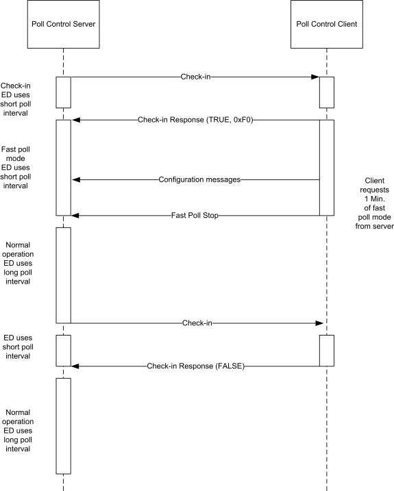
3.16.6.1 Guaranteed Consistent Check-In Interval ¶
Provided that the Check-inInterval attribute value stays constant, the interval between two Check In commands is guaranteed. The Check-inInterval SHOULD be kept independent regardless of when the Check-In Response or Fast Poll Stop command is received.
3.16.6.2 Multiple Poll Control Client ¶
When the Check-inInterval expires, the Server SHOULD send parallel Check-In commands to all paired client devices.
The server SHOULD then enter a temporary Fast Poll Mode, with a fixed manufacturer-specific predefined check in timeout duration (t1), to wait for the Check-In Response Messages from all paired device.
Once the server received all the Check-In Response or if the temporary Fast Poll Mode timeout (t1), the server SHOULD then gather the information from all Check-In Response messages and determine the longest Fast Poll Timeout (t2) duration.
The Server device SHALL stay in the Fast Poll Mode for the longest Fast Poll Timeout (t2) duration. The server device MAY end fast poll mode before the longest fast poll timeout if it is able to determine that every start request from the paired device has been stopped explicitly by the Fast Poll Stop command or implicitly by a timeout.
For example:
Device A implements a poll control server, devices B and C implement poll control clients. Device A sends a check-in command to both B and C. Both B and C respond with check-in response command requesting a fast poll start. Assume B requests fast polling for 5 minutes and C requests fast polling for 10 minutes. If C sends a fast poll stop command after 7 minutes, device A MAY immediately end fast polling upon receipt of this command since the fast poll period requested by B would have expired after only 5 minutes (before the command from C was received).
3.16.6.3 Check-in Interval Attribute Changed ¶
When the Check-inInterval attribute is changed (provided that the new value is valid and within acceptable range), the device SHOULD reset the internal check-in interval timer and send a check-in command according to the new Check-inInterval value.
3.17 Power Profile ¶
This section describes the Power Profile cluster.
3.17.1 Overview ¶
Please see Chapter 2 for a general cluster overview defining cluster architecture, revision, classification, identification, etc.
This cluster provides an interface for transferring power profile information from a device (e.g., White Goods) to a controller (e.g., the Home Gateway). The Power Profile can be solicited by client side (request command) or can be notified directly from the device (server side). The Power Profile represents a forecast of the energy that a device is able to predict. It is split in multiple energy phases with a specific set of parameters representing the estimated “energy footprint” of an appliance. The data carried in the Power Profile can be updated during the different states of a Power Profile; since it represents a forecast of energy, duration and peak power of energy phases, it SHALL be considered as an estimation and not derived by measurements.
The Power Profile MAY also be used by an energy management system, together with other specific interfaces supported by the device, in order to schedule and control the device operation and to perform energy management within a home network. For more informative examples on how the Power Profile cluster might be used, see Chapter 15 Appliance Management, section 3.
Figure 3-67. Typical Usage of the Power Profile Cluster ¶
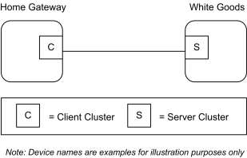
3.17.1.1 Revision History ¶
The global ClusterRevision attribute value SHALL be the highest revision number in the table below.
| Rev | Description |
|---|---|
| 1 | global mandatory ClusterRevision attribute added |
3.17.1.2 Classification ¶
| Hierarchy | Role | PICS Code |
|---|---|---|
| Base | Utility | PWR |
3.17.1.3 Cluster Identifiers ¶
| Identifier | Name |
|---|---|
| 0x001a | Power Profile |
3.17.2 References ¶
The following standards and specifications contain provisions, which through reference in this document constitute provisions of this specification. All the standards and specifications listed are normative references. At the time of publication, the editions indicated were valid. All standards and specifications are subject to revision, and parties to agreements based on this specification are encouraged to investigate the possibility of applying the most recent editions of the standards and specifications indicated below.
3.17.3 General Description ¶
3.17.3.1 Dependencies ¶
The Power Profile Cluster is dependent upon the Appliance Control Cluster for the parts regarding the status notification and power management commands. Other specific clusters for actuation for devices different than Smart Appliances. Due to the possible length of the Power Profile commands, the devices supporting the Power Profile cluster MAY leverage on Partitioning if required by the application.
3.17.4 Server Attributes ¶
. The following attributes represent the parameters for each Power Profile’s phases.
Table 3-135. Attributes of the Power Profile Cluster ¶
| Id | Name | Type | Range | Acc | Default | M |
|---|---|---|---|---|---|---|
| 0x0000 | TotalProfileNum | uint8 | 1 to FE | R | 1 | M |
| 0x0001 | MultipleScheduling | bool | 0 or 1 | R | 0 | M |
| 0x0002 | EnergyFormatting | map8 | desc | R | 1* | M |
| 0x0003 | EnergyRemote | bool | 0 or 1 | R | 0 | M |
| 0x0004 | ScheduleMode | map8 | desc | RWP | 0x00 | M |
* 1/10 of Watt Hours represented
3.17.4.1 TotalProfileNum Attribute ¶
The TotalProfileNum attribute represents the total number of profiles supported by the device. The minimum value for this attribute SHALL be 1.
3.17.4.2 MultipleScheduling Attribute ¶
The MultipleScheduling attribute specifies if the server side of the Power Profile cluster supports the scheduling of multiple Energy Phases or it does support the scheduling of a single energy phase of the Power Profile at a time. If more than a single energy phases MAY be scheduled simultaneously the MultipleSched-uling attribute SHALL be set to TRUE. In this case the device supporting the Power Profile server SHALL be able to process and manage scheduling commands carrying the schedule of more than one energy phase.
If the MultipleScheduling attribute is FALSE the device supporting the Power Profile client (e.g., EMS) SHALL be allowed to schedule just a single energy phase.
3.17.4.3 EnergyFormatting Attribute ¶
The EnergyFormatting attribute provides a method to properly decipher the number of digits and the decimal location of the values found in the Energy Fields carried by the Power Profile Notification and Power Profile Response commands. This attribute is to be decoded as follows:
- Bits 0 to 2: Number of Digits to the right of the Decimal Point.
- Bits 3 to 6: Number of Digits to the left of the Decimal Point.
- Bit 7: If set, suppress leading zeros.
This attribute SHALL be used against the Energy fields.
3.17.4.4 EnergyRemote Attribute ¶
The EnergyRemote attribute indicates whether the power profile server (e.g., appliance) is configured for remote control (e.g., by an energy management system).This refers to the selection chosen by the user on the remote control feature of the device. If the value is FALSE, the remote energy management is disabled, otherwise it is enabled. If the EnergyRemote is equal to FALSE all the supported PowerProfile SHALL set the Power Profile Remote Control field in the PowerProfile record equal to FALSE.
If the EnergyRemote attribute value is equal to TRUE, at least one PowerProfile SHALL be remotely controllable setting the Power Profile Remote Control field in the PowerProfile record to TRUE.
Table 3-136. EnergyRemote Attribute ¶
| Energy Remote Value | Description |
|---|---|
| 0x00 | FALSE = Remote Energy Management disabled |
| 0x01 | TRUE = Remote Energy Management enabled |
3.17.4.5 ScheduleMode Attribute ¶
The ScheduleMode attribute describes the criteria that SHOULD be used by the Power Profile cluster client side (e.g., energy management system) to schedule the power profiles.
3.17.4.5.1 Schedule Mode Field BitMap ¶
Table 3-137. ScheduleMode Attribute ¶
| Bit | Description |
|---|---|
| bit0 | bit0=1 : Schedule Mode Cheapest |
| bit1 | bit1 =1: Schedule Mode Greenest |
| bit2 to bit7 | Reserved |
If the ScheduleMode attribute is set to the value 0x00, the scheduling criteria is demanded to the Power Profile cluster client side, which means that no specific preferences on the schedule mode are requested by the device supporting the server side of the power Profile cluster.
If “Schedule Mode Cheapest” is selected then the energy management system SHALL try to schedule the Power Profile to minimize the user’s energy bill.
If “Schedule Mode Greenest” is selected then the energy management system SHALL try to schedule the Power Profile to provide the highest availability of renewable energy sources.
Please note that how the energy management system MAY obtain “cheapest” or “greenest” information and estimate scheduling times is out of scope of this specification.
If more than a single bit is selected in the ScheduleMode bitmask, the Power Profile client SHALL try to calculate the schedule following all the selected criteria.
If all the bits are set to zero not specific optimization metrics preferences are requested by the device supporting the Power Profile server.
3.17.5 Server Commands Received ¶
The command IDs for the commands received by the server side of the Power Profile Cluster are listed in
Table 3-138. ¶
Table 3-138. Cluster-Specific Commands Received by the Server ¶
| Command Identifier Field Value | Description | M/O |
|---|---|---|
| 0x00 | PowerProfileRequest | M |
| Command Identifier Field Value | Description | M/O |
|---|---|---|
| 0x01 | PowerProfileStateRequest | M |
| 0x02 | GetPowerProfilePriceResponse | M |
| 0x03 | GetOverallSchedulePriceResponse | M |
| 0x04 | EnergyPhasesScheduleNotification | M |
| 0x05 | EnergyPhasesScheduleResponse | M |
| 0x06 | PowerProfileScheduleConstraintsRequest | M |
| 0x07 | EnergyPhasesScheduleStateRequest | M |
| 0x08 | GetPowerProfilePriceExtendedResponse | M |
3.17.5.1 PowerProfileRequest Command ¶
The PowerProfileRequest Command is generated by a device supporting the client side of the Power Profile cluster in order to request the Power Profile of a server device. It is possible to request all profiles (without knowing how many Power Profiles the server has) or to request a specific PowerProfileID.
In the case of multiple profiles the server SHOULD send multiple messages, one for each Power Profile.
Although the profile is in a Power Profile running state (see PowerProfileState), the Power Profile Response transmitted as a reply to a PowerProfileRequest command SHALL carry all the energy phases of the estimated Power Profile, including the previous energy phases and the current energy phase which is running. The parameters of the Power Profile (e.g., the ExpectedDuration or the Energy fields of all the energy phases) MAY be updated for the same Power Profile due to a tuning in the forecast.
3.17.5.1.1 Payload Format ¶
The PowerProfileRequest Command payload SHALL be formatted as illustrated in Figure 3-68.
Figure 3-68. Format of the PowerProfileRequest Command Payload ¶
| Octets | 1 |
|---|---|
| Data Type | uint8 |
| Field Name | PowerProfileID |
3.17.5.1.1.1 Payload Details ¶
The payload of the PowerProfileRequest command carries the fields defined in Figure 3-68.
The PowerProfileID field specifies which profile (in the range 1 to TotalProfileNum) is requested. The special value 0x00 of this field does not refer to a particular profile; if 0x00 value is received the device SHOULD send details related to all the available profiles.
The PowerProfileID field SHALL NOT be greater than TotalProfileNum.
3.17.5.1.2 When Generated ¶
This command is generated when the client side of the Power Profile cluster (e.g., a Home gateway device), needs to request the power profile to a device supporting the Power Profile cluster server side (e.g., White Good).
3.17.5.1.3 Effect on Receipt ¶
The device that receives the Power Profile Request command SHALL reply with a PowerProfileResponse if supported. If the command is not supported the device SHALL reply with a standard ZCL Default response with status UNSUP_COMMAND72.
If the requested profile data are not available, the device SHALL reply with a standard ZCL response NOT_FOUND.
3.17.5.2 PowerProfileStateRequest Command ¶
The PowerProfileStateRequest command is generated in order to retrieve the identifiers of current Power Profiles. This command does not have a payload.
3.17.5.2.1 Effect on Receipt ¶
On receipt of this command, the device SHALL generate a PowerProfileStateResponse command.
3.17.5.3 GetPowerProfilePriceResponse Command ¶
The GetPowerProfilePriceResponse command allows a device (client) to communicate the cost associated with a defined Power Profile to another device (server) requesting it. If the Price information requested related to the Power Profile is not available yet the response SHALL be a ZCL default response with "NOT FOUND" Status.
3.17.5.3.1 Payload Format ¶
The GetPowerProfilePriceResponse command payload SHALL be formatted as illustrated in Figure 3-69.
Figure 3-69. Format of the GetPowerProfilePriceResponse Command ¶
| Octets | 1 | 2 | 4 | 1 |
|---|---|---|---|---|
| Data Type | uint8 | uint16 | uint32 | uint8 |
| Field Name | Power Profile ID | Currency | Price | Price Trailing Digit |
3.17.5.3.1.1 Payload Details ¶
PowerProfileID
The PowerProfileID field represents the identifier of the specific profile described by the Power Profile.
72 CCB 2477 status code cleanup
This is typically a sequential and contiguous number ranging from 1 to TotalProfileNum.
Currency
The Currency field identifies the local unit of currency used in the price field. This field is thought to be useful for displaying the appropriate symbol for a currency (i.e., $, €). The value of the currency field SHOULD match the values defined by ISO 4217.
Price
The Price field contains the price of the energy of a specific Power Profile measured in base unit of Currency per Unit of Measure (as described in the Metering Cluster, see SE specification) with the decimal point located as indicated by the PriceTrailingDigit field when the energy is delivered to the premise.
Price Trailing Digit
The PriceTrailingDigit field determines where the decimal point is located in the price field. The PriceTrailingDigit indicates the number of digits to the right of the decimal point.
3.17.5.3.2 When Generated ¶
This command is generated when the command Get Power Profile Price is received. Please refer to Get Power Profile Price command description.
3.17.5.3.3 Effect on Receipt ¶
On receipt of this command, the originator (server) is notified of the associated cost of the requested Power Profile, calculated by the client side of the Power Profile (see 9.7.10.1 for sequence diagrams and examples).
3.17.5.4 GetOverallSchedulePriceResponse Command ¶
The GetOverallSchedulePriceResponse command allows a client to communicate the overall cost associated to all Power Profiles scheduled to a server requesting it. If the Price information requested is not available the response SHALL be a ZCL default response with “NOT FOUND” Status. The overall cost provided by the Power Profile Client side (e.g., energy management system) is intended as the cost of all the scheduled power profiles. This information MAY be helpful to assess the overall benefit provided by the scheduler, since a change in the scheduling of a specific device might -in some cases-increase its associated Power Profile cost. In fact in that case the schedule SHALL provide a global optimization by reducing the overall cost of all the scheduled power profiles, then reducing the energy bill for the user.
3.17.5.4.1 Payload Format ¶
The Get Overall Schedule Price Response command payload SHALL be formatted as illustrated in Figure 3-70.
Figure 3-70. Format of the GetOverallSchedulePriceResponse Command ¶
| Octets | 2 | 4 | 1 |
|---|---|---|---|
| Data Type | uint16 | uint32 | uint8 |
| Field Name | Currency | Price | Price Trailing Digit |
3.17.5.4.2 Payload Details ¶
See GetPowerProfilePriceResponse command payload details.
3.17.5.4.3 When Generated ¶
This command is generated when the command GetOverallSchedulePriceRequest is received.
3.17.5.4.4 Effect on Receipt ¶
On receipt of this command, the originator is notified of the overall cost of the scheduled Power Profiles, calculated by the Power Profile cluster client side. This information MAY be used to assess the overall benefit provided by the scheduler, which might be dependent on the schedule constraints. For more information, see Chapter 15 Appliance Management, section 3.
3.17.5.5 Energy Phases Schedule Notification Command ¶
The Energy Phases Schedule Notification command is generated by a device supporting the client side of the Power Profile cluster in order to schedule the start of a Power Profile and its energy phases (they MAY be more than one in case of MultipleScheduling attribute equal to TRUE) on a the device supporting the server side of the Power Profile cluster, which did not solicit the schedule (“un-solicited” schedule). That happens when the Power Profile State carries a PowerProfileRemoteControl field equal to TRUE and the Energy Phase has a MaxActivationDelay different than 0x0000 (please note that changes on an already scheduled energy phase or power profile are possible but SHOULD be applied just in case of sensible advantages). The mechanisms designed to find the proper schedule are not part of the description of this command.
Please consider that, in case the MultipleScheduling attribute is FALSE (which means that the server side of the Power Profile cluster SHALL support the schedule of only a single energy phase at once), the Energy Phases Schedule Notification command SHOULD also be used to set a pause between two energy phases (energy pause behavior). In this case the Power Profile State MAY have any values but the command SHALL be issued only if the PowerProfileRemoteControl is set to TRUE and the Energy Phase has a MaxActiva-tionDelay different than 0x0000.
3.17.5.5.1 Payload Format ¶
The Energy Phases Schedule Notification command payload SHALL be formatted as illustrated in Figure 3-71.
Figure 3-71. Format of the EnergyPhasesScheduleNotification Command Payload ¶
| Octets | 1 | 1 | 1 | 2 | … | 1 | 2 |
|---|---|---|---|---|---|---|---|
| Data Type | uint8 | uint8 | uint8 | uint16 | … | uint8 | uint16 |
| Field Name | Power ProfileID | Num of Scheduled Phases | Energy PhaseID n | Scheduled Time n | … | Energy PhaseID n | Scheduled Time n |
3.17.5.5.1.1 Payload Details ¶
The payload of the EnergyPhasesScheduleNotification command carries the fields defined in Figure 3-71. Each EnergyPhasesScheduleNotification message SHALL include only one Power Profile and the energy phases of that Power Profile that needs to be scheduled. In case this command needs to be sent to a device supporting the server side of the power Profile Cluster with the MultipleScheduling attribute set to false, the payload of EnergyPhasesScheduleNotification command SHALL carry just one phase and the Scheduled Time field SHALL indicate the time scheduled for the whole Power Profile to start (in case the Power Profile is not started yet). If the Power Profile is in ENERGY_PHASE_RUNNING state and the server side of the cluster has the MultipleScheduling attribute set to false, the EnergyPhasesScheduleNotification command SHALL carry the scheduled time of the next energy phase.
PowerProfileID
See definition in PowerProfileNotification command.
Num of Scheduled Phases
The Num of Scheduled Phases field represents the total number of the energy phases of the Power Profile that need to be scheduled by this command.
The Energy phases that are not required to be scheduled SHALL NOT be counted in Num of Scheduled Phases field. The Num of Scheduled Phases SHALL be equal to 1 in case the MultipleScheduling attribute set to FALSE (only one energy phase SHALL be scheduled at a time). The Num of Scheduled Phases MAY be greater than 1in case the MultipleScheduling attribute set to TRUE (scheduling of multiple energy phases at the same time).
EnergyPhaseID
See definition in PowerProfileNotification command.
Scheduled Time
The Scheduled Time field represents the relative time scheduled in respect to the end of the previous energy phase. The unit is the minute. The Scheduled Time for the first Energy phase represents the scheduled time (expressed in relative encoding in respect to the current time) for the start of the Power Profile. The Scheduled Time fields for the subsequent Energy phases represent the relative time in minutes in respect to the previous scheduled Energy phase. The Energy phases that are not required to be scheduled will not be included in the commands and not be counted in Num of Scheduled Phases field. Only the Power Profile carrying a Power Profile Remote Control field equal to TRUE (as indicated in Power Profile State Notification command) and the Energy Phases supporting MaxActivationDelay different than 0x0000 SHALL be schedulable (as indicated in Power Profile Notification command).
3.17.5.5.2 When Generated ¶
This command is generated when the client side of the Power Profile cluster (e.g., a Home gateway device), has calculated a specific schedule for a Power Profile and needs to send the schedule (i.e., “unsolicited” schedule) to a device supporting the Power Profile cluster server side (e.g., White Goods). This command SHALL be generated only if the recipient devices support schedulable Power Profiles (i.e., only if the Power Profile carries the first Energy Phase with a MaxActivationDelay different than 0x0000).
3.17.5.5.3 Effect on Receipt ¶
The device that receives the EnergyPhasesScheduleNotification command SHALL reply with a standard Default response only if requested in the ZCL header of the EnergyPhasesScheduleNotification command or there is an error (as from ZCL specification).
If the device that receives the EnergyPhasesScheduleNotification command cannot schedule the energy phases because the activation delay of any of carried phases is equal to zero, it SHALL reply with a standard Default response with the error code NOT_AUTHORIZED (0x7e).
In case the scheduling state of the recipient entity changes after the reception of this command, the recipient will issue an Energy Phases Schedule State Notification.
3.17.5.6 EnergyPhasesScheduleResponse Command ¶
This command is generated by the client side of Power Profile cluster as a reply to the EnergyPhasesSched-uleRequest command.
3.17.5.6.1 Payload Format ¶
The EnergyPhasesScheduleResponse command payload SHALL have the same payload as EnergyPhasesS-cheduleNotification command (EnergyPhasesScheduleNotification command, but “solicited” schedule because it is triggered by the EnergyPhasesScheduleRequest command). For more information, see Chapter 15, Appliance Management, section 3.
3.17.5.6.1.1 Payload Details ¶
The payload of the EnergyPhasesScheduleResponse command carries the same fields as the EnergyPhasesS-cheduleNotification command. (EnergyPhasesScheduleNotification command, but “solicited” schedule because it is triggered by the EnergyPhasesScheduleRequest command)
3.17.5.6.2 When Generated ¶
This command is generated when the server side of the Power Profile cluster (e.g., a White Goods device), has requested, using the EnergyPhasesScheduleRequest, the schedule of a specific power profile to a device supporting the Power Profile cluster client side (e.g., Home gateway) which SHALL calculate the schedules (“solicited” schedule) and reply with the EnergyPhasesScheduleResponse.
3.17.5.6.3 Effect on Receipt ¶
The device that receives the EnergyPhasesScheduleResponse command SHALL reply with a standard Default response only if requested in the ZCL header of the EnergyPhasesScheduleResponse command. If the reception of EnergyPhasesScheduleResponse command is not supported the device SHALL reply with a standard ZCL Default response with status UNSUP_COMMAND73.
In case the scheduling state of the recipient entity changes after the reception of this command, the recipient will issue an EnergyPhasesScheduleStateNotification.
3.17.5.7 PowerProfileScheduleConstraintsRequest Command ¶
The PowerProfileScheduleConstraintsRequest command is generated by client side of the Power Profile cluster in order to request the constraints of the Power Profile of a server, in order to set the proper boundaries for the scheduling when calculating the schedules.
3.17.5.7.1 Payload Format ¶
The PowerProfileScheduleConstraintsRequest command payload is the same as the one used for PowerPro-fileRequest command. For more information, see Chapter 15, Appliance Management, section 3.
3.17.5.7.1.1 Payload Details ¶
The payload of the PowerProfileScheduleConstraintsRequest command carries the fields defined in Power- ProfileRequest command.
The Power Profile ID field specifies which profile (among TotalProfileNum total profiles number) the constraints are referring to.
73 CCB 2477 status code cleanup
3.17.5.7.2 When Generated ¶
This command is generated when the client side of the Power Profile cluster (e.g., a Home gateway device), needs to request the constraints of the power profile to a device supporting the Power Profile cluster server side (e.g., Whitegood).
3.17.5.7.3 Effect on Receipt ¶
The device that receives the Power Profile Schedule Constraints Request command SHALL reply with a Power Profile Schedule Constraints Response if supported. If the command is not supported, the device SHALL reply with a standard ZCL Default response with status UNSUP_COMMAND74.
If the requested profile data are not available, the device SHALL reply with a standard ZCL response NOT_FOUND.
3.17.5.8 EnergyPhasesScheduleStateRequest Command ¶
The EnergyPhasesScheduleStateRequest command is generated by a device supporting the client side of the Power Profile cluster to check the states of the scheduling of a power profile, which is supported in the device implementing the server side of Power Profile cluster. This command can be used to re-align the schedules between server and client (e.g., after a client reset).
3.17.5.8.1 Payload Format ¶
The EnergyPhasesScheduleStateRequest command payload is the same as the one used for PowerProfile- Request command. For more information, see Chapter 15, Appliance Management, section 3.
3.17.5.8.1.1 Payload Details ¶
The payload of the EnergyPhasesScheduleStateRequest command carries the same fields defined in the Pow-erProfileRequest command. For more information, see Chapter 15, Appliance Management, section 3.
The Power Profile ID field specifies which profile (among TotalProfileNum total profiles number) the constraints are referring to.
3.17.5.8.2 When Generated ¶
This command is generated when the client side of the Power Profile cluster (e.g., a Home gateway device), needs to check the schedules of the Power Profile to a device supporting the Power Profile cluster server side (e.g., White Good).
3.17.5.8.3 Effect on Receipt ¶
The server that receives the EnergyPhasesScheduleStateRequest command SHALL reply to the client with an EnergyPhasesScheduleStateResponse, if supported. If the command is not supported, the servers SHALL reply with a standard ZCL Default response with status UNSUP_COMMAND75.
If the requested profile data are not available (e.g., invalid Power Profile ID), the server SHALL reply with a standard ZCL response NOT_FOUND.
If the server does not have any schedules set, it SHALL reply with a EnergyPhasesScheduleStateResponse carrying NumofScheduledPhases equal to zero (see Format of the EnergyPhasesScheduleStateResponse in case of no scheduled phases).
74 CCB 2477 status code cleanup 75 CCB 2477 status code cleanup
3.17.5.9 GetPowerProfilePriceExtendedResponse Command ¶
The GetPowerProfilePriceExtendedResponse command allows a device (client) to communicate the cost associated to all Power Profiles scheduled to another device (server) requesting it according to the specific options contained in the EnergyPhasesScheduleStateResponse. If the Price information requested is not available, the response SHALL be a ZCL default response with "NOT FOUND" Status.
3.17.5.9.1 Payload Format ¶
The EnergyPhasesScheduleStateResponse command payload SHALL be formatted as the GetPowerProfile- PriceResponse command.
3.17.5.9.2 Payload Details ¶
See GetPowerProfilePriceResponse command payload details.
3.17.5.9.3 When Generated ¶
This command is generated when the command GetPowerProfilePriceExtendedResponse is received.
3.17.5.9.4 Effect on Receipt ¶
On receipt of this command, the originator is notified of cost of the scheduled Power Profiles, calculated by the Power Profile cluster server side according to the specific option transmitted in the EnergyPhasesSched-uleStateResponse command (e.g., cost at specific PowerProfileStartTime). For more information, see Chapter 15, Appliance Management, section 3.
3.17.6 Server Commands Generated ¶
Cluster-specific commands are generated by the server, as shown in Table 3-139.
Table 3-139. Cluster-Specific Commands Sent by the Server ¶
| Command Identifier Field Value | Description | M/O |
|---|---|---|
| 0x00 | PowerProfileNotification | M |
| 0x01 | PowerProfileResponse | M |
| 0x02 | PowerProfileStateResponse | M |
| 0x03 | GetPowerProfilePrice | O |
| 0x04 | PowerProfilesStateNotification | M |
| 0x05 | GetOverallSchedulePrice | O |
| 0x06 | EnergyPhasesScheduleRequest | M |
| 0x07 | EnergyPhasesScheduleStateResponse | M |
| 0x08 | EnergyPhasesScheduleStateNotification | M |
| 0x09 | PowerProfileScheduleConstraintsNotification | M |
| 0x0A | PowerProfileScheduleConstraintsResponse | M |
| Command Identifier Field Value | Description | M/O |
|---|---|---|
| 0x0B | GetPowerProfilePriceExtended | O |
3.17.6.1 PowerProfileNotification Command ¶
The PowerProfileNotification command is generated by a device supporting the server side of the Power Profile cluster in order to send the information of the specific parameters (such as Peak power and others) belonging to each phase.
3.17.6.1.1 Payload Format ¶
The PowerProfileNotification command payload SHALL be formatted as illustrated in Figure 3-72.
Figure 3-72. Format of the PowerProfileNotification Command Payload (1 of 2) ¶
| Octets | 1 | 1 | 1 | 1 | 1 | 2 | 2 | 2 |
|---|---|---|---|---|---|---|---|---|
| Data Type | uint8 | uint8 | uint8 | uint8 | uint8 | uint16 | uint16 | uint16 |
| Field Name | Total Profile Num | Power Pro- fileID | Num of Trans- ferred Phases | Energy PhaseID 1 | Macro PhaseID 1 | Expected- Duration 1 | Peak Power 1 | Energy 1 |
| Octets | 2 | … | 1 | 1 | 2 | 2 | 2 | 2 |
|---|---|---|---|---|---|---|---|---|
| Data Type | uint16 | … | uint8 | uint8 | uint16 | uint16 | uint16 | uint16 |
| Field Name | MaxActi- vationDe- lay 1 | … | Energy PhaseID n | Macro PhaseID n | Expected Duration n | Peak Power n | Energy n | MaxActiva- tionDelay n |
3.17.6.1.1.1 Payload Details ¶
The payload of the PowerProfileNotification command carries the fields defined in Figure 3-72. Each Pow-erProfileNotification message SHALL include only one Power Profile.
If multiple phases are transferred within a single PowerProfileNotification command (i.e., Number of Trans-ferred Phases greater than 1), the parameters of the other phases (PhaseID, ExpectedDuration, etc.) SHOULD be carried in the payload. Each phase has a fixed number of parameters and the total length is 10 octets, so that the total length of the payload could be calculated with the following formula:
Total Payload Length = 1 + 1 + 1 + (Num of Transferred Phases * 10)
TotalProfileNum
For more information, see Chapter 15, Appliance Management, section 3.
PowerProfileID
The PowerProfileID field represents the identifier of the specific profile described by the Power Profile.
This field contains a sequential and contiguous number ranging from 1 to TotalProfileNum.
Num of Transferred Phases
This field represents the number of the energy phases of the Power Profile.
MacroPhaseID
The MacroPhaseID field represents the identifier of the specific phase (operational-displayed) described by the Power Profile.
This reference could be used in conjunction with a table of ASCII strings, describing the label of the functional phase. This table is not described in the contest of the Power Profile because it MAY be not functionally linked with energy management.
EnergyPhaseID
The EnergyPhaseID field indicates the identifier of the specific energy phase described by the Power Profile.
This is a sequential and contiguous number ranging from 1 to the maximum number of phases belonging to the Power Profile.
The value 0xFF SHALL be used to specify invalid energy phase (e.g., for a Power Profile in IDLE state).
ExpectedDuration
The ExpectedDuration field represents the estimated duration of the specific phase. Each unit is a minute.
PeakPower
The PeakPower field represents the estimated power for the specific phase. Each unit is a Watt.
Energy
The Energy field represents the estimated energy consumption for the accounted phase. Each unit is Watt per hours, according to the formatting specified in the EnergyFormatting attribute. For more information, see Chapter 15, Appliance Management, section 3. The Energy value fulfills the following equation:
Energy ≤ PeakPower(Watt) * ExpectedDuration(sec)
MaxActivationDelay
The MaxActivationDelay field indicates the maximum interruption time between the end of the previous phase and the beginning of the specific phase. Each unit is a minute.
The special value 0x0000 means that it is not possible to insert a pause between the two consecutive phases.
The MaxActivationDelay field of the first energy phase of a Power Profile SHALL be set to the value 0xFFFF.
3.17.6.1.2 When Generated ¶
This command is generated when the server side of the Power Profile cluster (e.g., a White Good device), need to send the representation of its power profile to a controller device supporting the Power Profile cluster client side (e.g., Home Gateway).
3.17.6.1.3 Effect on Receipt ¶
The device that receives the PowerProfileNotification command SHALL reply with a standard Default response if requested in the ZCL header of the PowerProfileNotification command.
3.17.6.2 PowerProfileResponse Command ¶
This command is generated by the server side of Power Profile cluster as a reply to the PowerProfileRequest command. If the reception of PowerProfileRequest command is not supported the device SHALL reply with a standard ZCL Default response with status UNSUP_COMMAND76.
If the profile data requested are not available, the device SHALL reply with a standard ZCL response INVA- LID_VALUE.
3.17.6.2.1 Payload Format ¶
The PowerProfileResponse Command payload SHALL be formatted as illustrated in Figure 3-72 (same as PowerProfileNotification command).
3.17.6.2.1.1 Payload Details ¶
The payload of the PowerProfileResponse command carries the fields defined in Figure 3-72 (the same as PowerProfileNotification command).
3.17.6.2.2 When Generated ¶
This command is generated by the server side of Power Profile cluster (e.g., White Good) as a reply to the PowerProfileRequest command sent by the client side (e.g., a Home gateway device).
3.17.6.2.3 Effect on Receipt ¶
The device that receives the PowerProfileResponse command SHALL reply with a standard Default response if requested in the ZCL header of the PowerProfileResponse command.
The device that receives the PowerProfileResponse command SHALL reply with a standard ZCL Default response with status UNSUP_COMMAND77 if the reception of this command is not supported.
If the profile data requested are not available, the device SHALL reply with a standard ZCL response INVA- LID_VALUE.
3.17.6.3 PowerProfileStateResponse Command ¶
The PowerProfileStateResponse command allows a device (server) to communicate its current Power Profile(s) to another device (client) that previously requested them.
3.17.6.3.1 Payload Format ¶
The PowerProfileStateResponse command payload SHALL be formatted as illustrated in Figure 3-73.
Figure 3-73. Format of the PowerProfileStateResponse Command Frame ¶
| Octets | 1 | 4 | 4 | ... | 4 |
|---|---|---|---|---|---|
| Field Name | Power Profile Count | Power Profile Record 1 | Power Profile Record 2 | ... | Power Profile Record n |
76 CCB 2477 status code cleanup 77 CCB 2477 status code cleanup
Each Power Profile record SHALL be formatted as illustrated in Figure 3-74.
Figure 3-74. Format of the Power Profile Record Field ¶
| Octets | 1 | 1 | 1 | 1 |
|---|---|---|---|---|
| Data Type | uint8 | uint8 | bool | enum8 |
| Field Name | Power Profile ID | Energy Phase ID | PowerProfile RemoteControl | PowerProfile State |
3.17.6.3.1.1 Payload Details ¶
Power Profile Count
The Power Profile Count is the number of Power Profile Records that follow in the message.
Power Profile Record
The Power Profile record supports the following fields:
- Power Profile ID: The identifier of the Power Profile as requested.
- Energy Phase ID: The current Energy Phase ID of the specific Profile ID; this value SHALL be set to invalid 0xFF when PowerProfileState indicates a Power Profile in POWER_PROFILE_IDLE state.
- PowerProfileRemoteControl: It indicates if the PowerProfile is currently remotely controllable or not; if the Power Profile is not remotely controllable it cannot be scheduled by a Power Profile client.
- PowerProfileState: An enumeration field representing the current state of the Power Profile (see Table 3-140).
Table 3-140. PowerProfileState Enumeration Field ¶
| Enumeration | Value | Description |
|---|---|---|
| POWER PROFILE IDLE | 0x00 | The PP is not defined in its parameters. |
| POWER PROFILE PROGRAMMED | 0x01 | The PP is defined in its parameters but without a scheduled time reference |
| ENERGY PHASE RUNNING | 0x03 | An energy phase is running |
| ENERGY PHASE PAUSED | 0x04 | The current energy phase is paused |
| ENERGY PHASE WAIT- ING TO START | 0x05 | The Power Profile is in between two energy phases (one ended, the other not yet started). If the first Energy Phase is considered, this state in- dicates that the whole power profile is not yet started, but it has been already programmed to start |
| ENERGY PHASE WAITING PAUSED | 0x06 | The Power Profile is set to Pause when being in the ENERGY PHASE WAITING TO START state. |
| POWER PROFILE ENDED | 0x07 | The whole Power Profile is terminated |
Figure 3-75. Power Profile States ¶
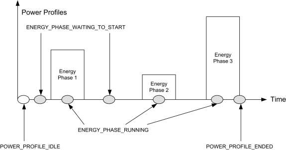
Figure 3-76. Power Profile State Diagram ¶
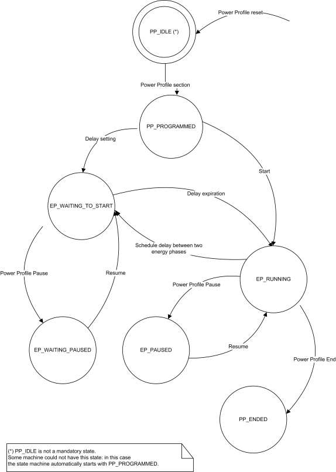
3.17.6.3.2 When Generated ¶
This command is generated when the command PowerProfileStateRequest is received. For more information, see Chapter 15, Appliance Management, section 3.
3.17.6.3.3 Effect on Receipt ¶
On receipt of this command, the originator is notified of the results of its Read Current Power Profiles attempt (i.e., receives the Power Profiles currently running in the server device).
3.17.6.4 GetPowerProfilePrice Command ¶
The GetPowerProfilePrice command is generated by the server (e.g., White Goods) in order to retrieve the cost associated to a specific Power Profile. This command has the same payload as the Power Profile Request command. For more information, see Chapter 15, Appliance Management, section 3.
3.17.6.4.1 Effect on Receipt ¶
On receipt of this command, the recipient device SHALL generate a GetPowerProfilePriceResponse command. For more information, see Chapter 15, Appliance Management, section 3.
3.17.6.5 PowerProfileStateNotification Command ¶
The PowerProfileStateNotification command is generated by the server (e.g., White Goods) in order to update the state of the power profile and the current energy phase. It has the same payload as the PowerPro-fileStateResponse command but it is an unsolicited command.
3.17.6.5.1 Effect on Receipt ¶
On receipt of this command, the recipient device will update its information related to the PowerProfile of the device (e.g., it will update the forecasts of the durations of the Power Profile’s energy phases with the actual data).
3.17.6.6 GetOverallSchedulePrice Command ¶
The GetOverallSchedulePrice command is generated by the server (e.g., White Goods) in order to retrieve the overall cost associated to all the Power Profiles scheduled by the scheduler (the device supporting the Power Profile cluster client side) for the next 24 hours. This command has no payload.
3.17.6.6.1 Effect on Receipt ¶
On receipt of this command, the recipient device SHALL generate a GetOverallSchedulePriceResponse command. For more information, see Chapter 15, Appliance Management, section 3.
3.17.6.7 EnergyPhasesScheduleRequest Command ¶
The EnergyPhasesScheduleRequest Command is generated by the server (e.g., White Goods) in order to retrieve from the scheduler (e.g., Home Gateway) the schedule (if available) associated to the specific Power Profile carried in the payload. This command has the same payload as the Power Profile Request. For more information, see Chapter 15, Appliance Management, section 3.
3.17.6.7.1 Effect on Receipt ¶
On receipt of this command, the recipient device SHALL generate an EnergyPhasesScheduleResponse command in order to notify the proper scheduling to the server side of the Power Profile cluster (“solicited” schedule). For more information, see Chapter 15, Appliance Management, section 3. If the schedule is accepted by the PowerProfile server side (e.g., the appliance) the PowerProfile SHALL have the state EN- ERGY_PHASE_WAITING_TO_START (delay start set for the first energy phase of the power profile). If the device receiving the EnergyPhasesScheduleResponse command cannot accept the schedule of the energy phases because the activation delay related to any of carried phases is equal to zero, it SHALL reply with a standard Default response with the error code NOT_AUTHORIZED (0x7e).
3.17.6.8 EnergyPhasesScheduleStateResponse Command ¶
The EnergyPhasesScheduleStateResponse command is generated by the server (e.g., White Goods) in order to reply to an EnergyPhasesScheduleStateRequest command about the scheduling states that are set in the server side. For more information, see Chapter 15, Appliance Management, section 3. The payload of this command is the same as EnergyPhasesScheduleNotification. In case of no scheduled energy phases, the payload shown in Figure 3-77 SHALL be used.
Figure 3-77. Format of EnergyPhasesScheduleStateResponse in Case of No Scheduled Phases ¶
| Octets | 1 | 1 |
|---|---|---|
| Data Type | uint8 | uint8 |
| Field Name | PowerProfileID | Num of Scheduled Energy Phases=0x00 |
3.17.6.8.1 Effect on Receipt ¶
On receipt of this command, the recipient device will be notified about the scheduling activity of the server side of the Power Profile Cluster.
Please note that the schedules MAY be set by the scheduling commands listed in this cluster or by the users (e.g., delay start of an appliance).
3.17.6.9 EnergyPhasesScheduleStateNotification Command ¶
The EnergyPhasesScheduleStateNotification command is generated by the server (e.g., White Goods) in order to notify (un-solicited command) a client side about the scheduling states that are set in the server side. The payload of this command is the same as EnergyPhasesScheduleStateResponse.
3.17.6.9.1 Effect on Receipt ¶
On receipt of this command, the recipient devices will be notified about the scheduling activity of the server side of the Power Profile Cluster.
3.17.6.10 PowerProfileScheduleConstraintsNotification Command ¶
The PowerProfileScheduleConstraintsNotification command is generated by a device supporting the server side of the Power Profile cluster to notify the client side of this cluster about the imposed constraints and let the scheduler (i.e., the entity supporting the Power Profile cluster client side) to set the proper boundaries for the scheduling.
3.17.6.10.1 Payload Format ¶
The PowerProfileScheduleConstraintsNotification command payload is reported in Figure 3-78.
Figure 3-78. Format of the PowerProfileScheduleConstraintsNotification Command Frame ¶
| Octets | 1 | 2 | 2 |
|---|---|---|---|
| Data Type | uint8 | uint16 | uint16 |
| Field Name | PowerProfileID | Start After | Stop Before |
3.17.6.10.1.1 Payload Details ¶
The payload of the PowerProfileScheduleConstraintsNotification command carries the following fields:
- The Power Profile ID field specifies which profile (among TotalProfileNum total profiles number) the constraints are referring to.
- The StartAfter parameter represents the relative time in minutes (in respect to the time of the reception of this command), that limits the start of the Power Profile; it means that the Power Profile SHOULD be scheduled to start after a period of time equal to StartAfter; if this value is not specified by the device the value SHALL be 0x0000;
- The StopBefore parameter represents the relative time in minutes (in respect to the time of the reception of this command), that limits the end of the Power Profile; it means that the Power Profile SHOULD be scheduled to end before a period of time equal to StopBefore; if this value is not specified by the device the value SHALL be 0xFFFF.
3.17.6.10.2 When Generated ¶
This command is generated when the server side of the Power Profile cluster (e.g., a White Goods device), needs to notify a change in the constraints of the Power Profile (e.g., the user selected boundaries for the specific behavior of the device).
3.17.6.10.3 Effect on Receipt ¶
The device that receives the PowerProfileScheduleConstraintsNotification command SHALL use the information carried in the payload of this command to refine the proper schedule of the specific Power Profile indicated in the Power Profile ID field in order to meet the constraints.
3.17.6.11 PowerProfileScheduleConstraintsResponse Command ¶
The PowerProfileScheduleConstraintsResponse command is generated by a device supporting the server side of the Power Profile cluster to reply to a client side of this cluster which sent a PowerProfileScheduleCon-straintsRequest. The payload carries the selected constraints to let the scheduler (i.e., the entity supporting the Power Profile client cluster) to set the proper boundaries for completing or refining the scheduling.
3.17.6.11.1 Payload Format ¶
Same as PowerProfileScheduleConstraintsNotification command. For more information, see Chapter 15, Appliance Management, section 3.
3.17.6.11.2 When Generated ¶
This command is generated as a reply to the Power Profile Schedule Constraints Request.
3.17.6.11.3 Effect on Receipt ¶
The device that receives the Power Profile Schedule ConstraintsResponse command SHALL use the information carried in the payload of this command to refine the proper schedule of the specific Power Profile indicated in the Power ProfileID field.
3.17.6.12 GetPowerProfilePriceExtended Command ¶
The GetPowerProfilePriceExtended command is generated by the server (e.g., White Goods) in order to retrieve the cost associated to a specific Power Profile considering specific conditions described in the option field (e.g., a specific time).
3.17.6.12.1 Payload Format ¶
The GetPowerProfilePriceExtended command payload SHALL be formatted as illustrated in Figure 3-79.
Figure 3-79. Format of the GetPowerProfilePriceExtended Command Payload ¶
| Octets | 1 | 1 | 0/2 |
|---|---|---|---|
| Data Type | map8 | uint8 | uint16 |
| Field Name | Options | PowerProfileID | PowerProfileStartTime |
Table 3-141. Options Field ¶
| Bit | Description |
|---|---|
| 0 | Bit0=1 : PowerProfileStartTime Field Present |
| 1 | Bit1=0 : provide an estimation of the price considering the power profile with contiguous energy phases |
| Bit | Description |
|---|---|
| Bit1=1 : provide an estimation of the price considering the power profile as scheduled (i.e., taking in account delays between Energy phases set by the EMS) |
Options
The Options field represents the type of request of extended price is requested to the client side of the power profile cluster (e.g., to an energy management system).
PowerProfileStartTime
The PowerProfileStartTime field represents the relative time (expressed in relative encoding in respect to the current time) when the overall Power Profile can potentially start. The unit is the minute.
3.17.6.12.2 Effect on Receipt ¶
On receipt of this command, the recipient device SHALL generate a GetPowerProfilePriceExtend-edResponse command. For more information, see Chapter 15, Appliance Management, section 3.
3.17.7 Client Attributes ¶
The client has no cluster specific attributes.
3.17.8 Client Commands Received ¶
Description is in server side commands generated (sent) description.
3.17.9 Client Commands Generated ¶
Description is in server side commands received description.
3.17.10 Example of Device Interactions Using the ¶
Power Profile (Informative Section)
3.17.10.1 Price Information Retrieved by the White Goods ¶
The price of a specific appliance program is estimated by the Home gateway/EMS, calculated using the Power Profile forecast provided by the appliance and the PowerProfileStartTime contained in the GetPow-erProfilePriceExtended which indicates when the appliance program will start. How the Home Gateway/EMS retrieves from the utility the information related to tariff schemes and price changes over time is out of scope of this specification.
The appliance MAY then show to the user on the display the price associated to a specific cycle set (e.g., a washing machine program “Cotton 90 °C” will cost you “1.15€”).
Figure 3-80. Visualization of Price Associated to a Power Profile ¶
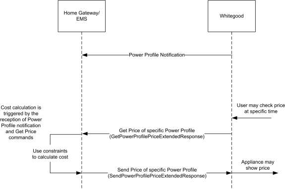
3.17.10.2 Interaction with Power Profile Cluster When Appliance Is Not Remotely Controllable ¶
Figure 3-81. Energy Remote Disabled: Example of Sequence Diagram with User Interaction ¶
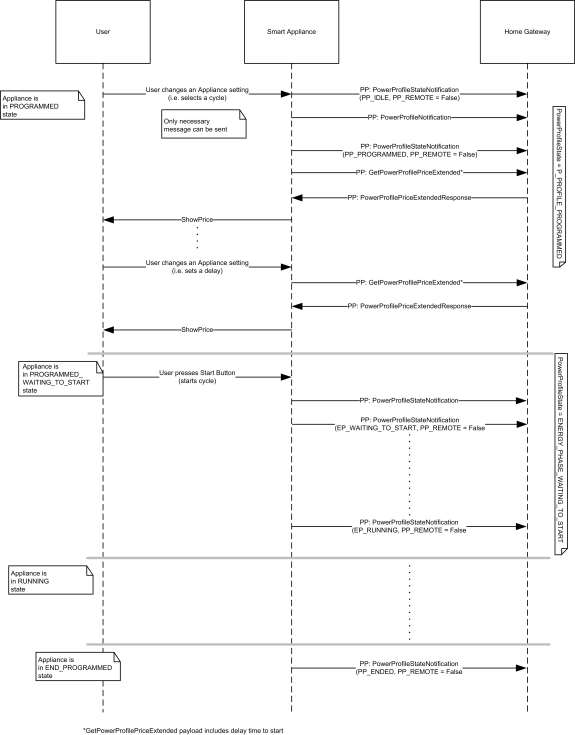
3.17.10.3 Interaction with Power Profile Cluster When Appliance Is Remotely Controllable (Scheduling of Appliance) ¶
Figure 3-82. Energy Remote Enabled: Example of Sequence Diagram with User Interaction ¶
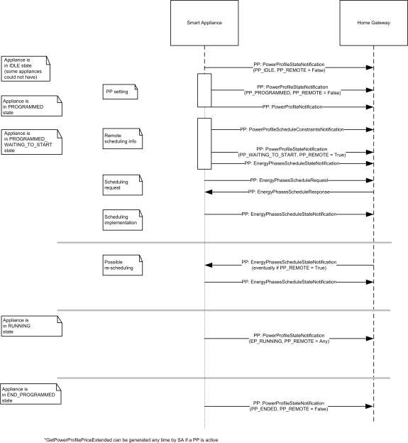
3.18 Keep Alive78 ¶
3.18.1 Overview ¶
This cluster supports the commands and attributes directed to the network Trust Center in order to determine whether communication with the Trust Center is still available.
3.18.1.1 Revision History ¶
| Rev | Description |
|---|---|
| 1 | Added from SE1.4 |
3.18.1.2 Classification ¶
| Hierarchy | Role | PICS Code |
|---|---|---|
| Base | Utility | KA |
3.18.1.3 Cluster Identifiers ¶
| Identifier | Name |
|---|---|
| 0x0025 | Keep-Alive |
3.18.2 Server ¶
3.18.2.1 Attributes ¶
The currently defined attributes are listed in the following table:
Table 3-142. Keep-Alive Server Attributes ¶
| Id | Name | Type | Range | Access | Default | M/O |
|---|---|---|---|---|---|---|
| 0x0000 | TC Keep-Alive Base | uint8 | 0x00 to 0xFF | R | 0x0A | M |
| 0x0001 | TC Keep-Alive Jitter | uint16 | 0x0000 to 0xFFFF | R | 0x012C | M |
3.18.2.1.1 TC Keep-Alive Base Attribute ¶
TC Keep-Alive Base represents the base time (in minutes) used for calculating each interval used by the keep-alive mechanism to determine whether contact with the Trust Center is still available. Each interval is ‘jittered’ by adding a random value in the range defined by the TC Keep-Alive Jitter attribute. A value of 0x00 is not allowed. Following power-up or reboot, a client device should utilize the default times until required values are fetched from the cluster attributes.
3.18.2.1.2 TC Keep-Alive Jitter Attribute ¶
TC Keep-Alive Jitter indicates the range (in seconds) for the random element added to value of the TC Keep- Alive Base attribute when calculating each interval for the keep-alive mechanism that determines whether contact with the Trust Center is still available.
3.18.2.2 Commands Generated ¶
There are no commands generated by the cluster server.
3.18.3 Client ¶
There are no cluster specific attributes or commands received or generated for the cluster client.
3.18.4 Application Guidelines ¶
Routers:
In order to detect when a TC is no longer available, all routers shall implement a keep-alive mechanism with the TC. The Keep-Alive cluster is mandatory when supporting Trust Center Swap-out. Presence of the Keep-Alive cluster attributes shall indicate support of the keep-alive mechanism by the device providing the Keep-Alive cluster server. The routers shall send an APS encrypted Read Attributes command to the Keep- Alive cluster on a periodic interval defined by the cluster’s TC Keep-Alive Base and TC Keep-Alive Jitter attributes. Each interval shall be calculated by adding a different random value, in the range defined by the TC Keep-Alive Jitter attribute, to the base time defined by the TC Keep-Alive Base attribute. Each Read Attributes command shall request both the TC Keep-Alive Base and TC Keep-Alive Jitter attributes. Failure to receive an APS-encrypted Read Attribute Response command shall indicate the TC is no longer available. If the device fails to read the Keep-Alive cluster attributes on 3 successive attempts it shall consider the TC no longer accessible and initiate a search for it. Failure of the encryption or frame counter shall constitute a failure of the keep-alive.
End Devices:
End devices should ensure that they can still communicate with the TC by exchanging messages at a rate suitable for their particular implementation. End devices MAY utilize the Keep-Alive cluster for this purpose
3.19 Level Control for Lighting ¶
3.19.1 Overview ¶
Please see Chapter 2 for a general cluster overview defining cluster architecture, revision, classification, identification, etc.
This cluster provides an interface for controlling the level of a light source.
All requirements and dependencies are derived from the base cluster. Additional or extended requirements and dependencies are listed in this cluster specification.
NOTE: This cluster specification is derived from the Level cluster specification (generic level control also defined in this document). This cluster specifies further requirements for the lighting application. Please see section 3.10 for the generic Level cluster specification.
3.19.1.1 Revision History ¶
The global ClusterRevision attribute value SHALL be the highest revision number in the table below.
| Rev | Description |
|---|---|
| 1 | global mandatory ClusterRevision attribute added |
| 2 | added Options attribute, state change table; ZLO 1.0; Derived from base Level (no change) CCB 2085 1775 2281 2147 |
3.19.1.2 Classification ¶
| Hierarchy | Base | Role | PICS Code | Primary Transaction |
|---|---|---|---|---|
| Derived | Level (3.10) | Application | LC | Type 1 (client to server) |
3.19.1.3 Cluster Identifiers ¶
| Identifier | Name |
|---|---|
| 0x0008 | Level Control for Lighting |
3.19.2 Server ¶
3.19.2.1 Dependencies ¶
Please see examples of state changes with regards to the On/Off server cluster in section 3.19.4.
3.19.2.2 Attributes ¶
The Level Control for Lighting server cluster supports the base attributes below. See the base cluster for details. Additional requirements are defined here.
Table 3-143. Attributes of the Level Control for Lighting server cluster ¶
| Name | Range | Default | M/O |
|---|---|---|---|
| CurrentLevel | 1 to FE | 0xff | M |
| RemainingTime | base79 | base | O |
| CurrentFrequency | base | base | O |
| MinFrequency | base | base | M:CurrentFrequency80 |
| MaxFrequency | base | base | M:CurrentFrequency |
| OnOffTransitionTime | base | base | O |
| OnLevel | base | base | O |
| OnTransitionTime | base | base | O |
| OffTransitionTime | base | base | O |
| DefaultMoveRate | base | base | O |
| Options | base | base | M |
79 see base cluster for definition 80 Mandatory if CurrentFrequency supported
| Name | Range | Default | M/O |
|---|---|---|---|
| StartUpCurrentLevel | base | base | O |
3.19.2.2.1 CurrentLevel Attribute for Lighting ¶
A value of 0 SHALL not be used.
A value of 1 SHALL indicate the minimum level that can be attained on a device.
A value of 0xfe SHALL indicate the maximum level that can be attained on a device.
A non-value of 0xff SHALL represent an undefined value.
All other values are application specific gradations from the minimum to the maximum level.
3.19.2.2.2 CurrentFrequency Attribute ¶
The CurrentFrequency attribute represents the frequency in 10Hz (hertz) increments up to 655.34 kHz. A value of 0 is unknown.
3.19.2.2.3 Options Attribute for Lighting ¶
Below describes the lighting specific bits of the Options attribute. All other bits are defined, or reserved by the base cluster.
Table 3-144. Options Attribute ¶
| Bit | Name | Values & Summary |
|---|---|---|
| 1 | CoupleColorTempToLevel (See Color Control cluster) | 0 - Do not couple changes to the CurrentLevel attribute with the color temperature. 1 - Couple changes to the CurrentLevel attribute with the color temperature. |
3.19.2.3 Commands Received ¶
The command IDs for the cluster are listed below:
Table 3-145. Commands for the Pulse Width Modulation cluster ¶
| ID | Description | M/O |
|---|---|---|
| 0x00 | Move to Level | M |
| 0x01 | Move | M |
| 0x02 | Step | M |
| 0x03 | Stop | M |
| 0x04 | Move to Level (with On/Off) | M |
| ID | Description | M/O |
|---|---|---|
| 0x05 | Move (with On/Off) | M |
| 0x06 | Step (with On/Off) | M |
| 0x07 | Stop | M |
| 0x08 | Move to Closest Frequency | M:CurrentFrequency |
3.19.2.4 Commands Generated ¶
There are no commands generated by the server.
3.19.3 Client ¶
The client has no cluster specific attributes. The client generates the cluster specific commands received by the server, as required by the application. No cluster specific commands are received by the client.
3.19.4 State Change Table for Lighting ¶
Below is a table of examples of state changes when Level Control for Lighting and On/Off clusters are on the same endpoint.
EiO - ExecuteIfOff field in the Options attribute
OnOff – attribute value of On/Off cluster 0=Off, 1=On
MIN - MinLevel
MAX - MaxLevel
MID – midpoint between MinLevel and MaxLevel
Table 3-146. Lighting Device State Change ¶
| Current Level | EiO | OnOff | Physical Device | Command Before After → | Current Level | OnOff | Physical Device | Device Output Result |
|---|---|---|---|---|---|---|---|---|
| any | 0 | 0 | Off | Move to level MID over 2 sec | same | 0 | Off | stays off |
| any | 0 | 0 | Off | Move with On/Off to level MID over 2 sec | MID | 1 | On (mid- point brightness) | turns on and output level adjusts or stays at half |
| Current Level | EiO | OnOff | Physical Device | Command Before After → | Current Level | OnOff | Physical Device | Device Output Result |
|---|---|---|---|---|---|---|---|---|
| any | 1 | 0 | Off | Move to level MID over 2 sec | MID | 0 | Off | stays off |
| any | 1 | 0 | Off | Move with On/Off to level MID over 2 sec | MID | 1 | On | turns on and output level adjusts to or stays at half |
| any | 1 | 0 | Off | Move rate = up 64 per second | MAX | 0 | Off | stays off |
| any | 1 | 0 | Off | Move with On/Off rate = up 64 per sec- ond | MAX | 1 | On | turn on and output level adjusts to or stays at full |
| any | 1 | 0 | Off | Move (with On/Off) rate = down 64 per second | MIN | 0 | Off | stays off |
| any | any | 1 | On (any bright- ness) | Move (with On/Off) to level MID over 2 sec | MID | 1 | On (mid- point brightness) | output level adjusts to or stays at half |
| any | any | 1 | On (any bright- ness) | Move (with On/Off) rate = up 64 per sec- ond | MAX | 1 | On (full brightness) | output level adjusts to or stays at full |
| any | any | 1 | On (any bright- ness) | Move rate = down 64 per second | MIN | 0 | On (at minimum brightness) | output level adjusts to minimum |
| any | any | 1 | On (any bright- ness) | Move with On/Off rate = down 64 per second | MIN | 0 | Off | output level adjusts to off |
3.20 Pulse Width Modulation ¶
3.20.1 Overview ¶
Please see Chapter 2 for a general cluster overview defining cluster architecture, revision, classification, identification, etc.
This cluster provides an interface for controlling the Pulse Width Modulation (PWM) characteristics of a device. Typical applications include heating element and fan control (10-100Hz), DC electric motors and power efficient LED control (5-10kHz), and switching power supplies (>20kHz). For the purposes of PWM, the value of level is effectively a duty cycle. The frequency and level (duty cycle) values are reportable and may be configured for reporting.
3.20.1.1 Revision History ¶
The global ClusterRevision attribute value SHALL be the highest revision number in the table below.
| Rev | Description |
|---|---|
| 1 | global mandatory ClusterRevision attribute added |
3.20.1.2 Classification ¶
| Hierarchy | Base | Role | PICS Code | Primary Transaction |
|---|---|---|---|---|
| Derived | Level (3.10) | Application | PWM | Type 1 (client to server) |
3.20.1.3 Cluster Identifiers ¶
| Identifier | Name |
|---|---|
| 0x001c | Pulse Width Modulation |
3.20.2 Server ¶
The server requirements and dependencies are derived from the base cluster. Additional requirements are listed in this section below.
3.20.2.1 Attributes ¶
The Pulse Width Modulation server cluster supports the base attributes below. See the base cluster for details. Additional requirements are defined here.
Table 3-147. Attributes of the Pulse Width Modulation server cluster ¶
| Name | Range | Default | M/O |
|---|---|---|---|
| CurrentLevel | MinLevel to MaxLevel | 0xff | M |
| MinLevel | 0 to MaxLevel | 0 | M |
| MaxLevel | MinLevel to 100 | 100 | M |
| Name | Range | Default | M/O |
|---|---|---|---|
| CurrentFrequency | MinFrequency to MaxFrequency | 0 | M |
| MinFrequency | 0 to MaxFrequency | 0 | M |
| MaxFrequency | MinFrequency to 0xffff | 0 | M |
3.20.2.1.1 CurrentLevel Attribute ¶
The CurrentLevel attribute represents a duty cycle as a percentage. A non-value means the level is unknown.
3.20.2.1.2 CurrentFrequency Attribute ¶
The CurrentFrequency attribute represents the frequency in 10Hz (hertz) increments up to 655.34 kHz. A value of 0 is unknown.
3.20.2.2 Commands Received ¶
The command IDs for the cluster are listed below:
Table 3-148. Commands for the Pulse Width Modulation cluster ¶
| ID | Description | M/O |
|---|---|---|
| 0x00 | Move to Level | M |
| 0x01 | Move | M |
| 0x02 | Step | M |
| 0x03 | Stop | M |
| 0x04 | Move to Level (with On/Off) | M |
| 0x05 | Move (with On/Off) | M |
| 0x06 | Step (with On/Off) | M |
| 0x07 | Stop | M |
| 0x08 | Move to Closest Frequency | M |
3.20.2.3 Commands Generated ¶
There are no commands generated by the server.
3.20.3 Client ¶
The client has no cluster specific attributes. The client generates the cluster specific commands received by the server, as required by the application. No cluster specific commands are received by the client.